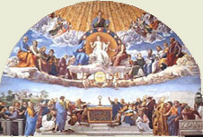
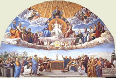

|  |
|---|
Textum Taurini 1953 editum
et automato translatum a Roberto Busa SJ in taenias magneticas
denuo recognovit Enrique Alarcón atque instruxit


|  |
|---|


[85830] Catena in Lc., cap. 9 l. 1 Cyrillus. Decebat institutos ministros sacrarum doctrinarum posse mira peragere, et per ipsos effectus credi quod essent Dei ministri; unde dicitur convocatis autem Iesus duodecim apostolis, dedit illis virtutem et potestatem super omnia Daemonia: in quo elevatum supercilium Diaboli flectit, qui dicebat aliquando: non est qui contradicere valeat. Eusebius. Et ut per eos venetur genus humanum, non solum dat eis ut pravos spiritus pellant, sed etiam quamlibet infirmitatem sanent ex eius imperio; unde sequitur et ut languores curarent. Cyrillus. Attendas hic divinam filii potestatem naturae corporali non convenientem; agere namque miracula aderat sanctis, non natura, sed participatione spiritus sancti. Super hoc autem aliis concedere potestatem prorsus alienum erat ab eorum virtute: qualiter enim posset natura creata super spiritus dona possidere dominium? At dominus noster Iesus Christus, tamquam naturaliter Deus existens, impertitur huiusmodi gratiam quibus vult, non invocans in eos alienam virtutem, sed infundens ex promptuariis propriis. Chrysostomus in Matthaeum. Postquam autem satis confortati fuerant ex eius comitiva, et competens nacti sunt argumentum virtutis eius, mittit eos; unde sequitur et misit illos praedicare regnum Dei, et sanare infirmos. Ubi considera, quod non committitur eis aliquod sensibile dicere, sicut Moyses et prophetae, qui terram et bona terrena promittebant; hi vero regnum caelorum, et quaecumque continentur in eo. Gregorius Nazianzenus. Mittens autem discipulos ad praedicandum, dominus multa eis iniunxit, quorum summa est, sic eos virtuosos esse, sic constantes atque modestos, et, ut breviter loquar, caelestes, ut non minus propter eorum modum vivendi quam propter verbum evangelica doctrina propagaretur. Et ideo cum aeris et baculi carentia et amictus singularitate mittebantur; et ideo subdit et ait ad illos: nihil tuleritis in via: neque virgam neque peram, neque panem, neque pecuniam, neque duas tunicas habeatis. Chrysostomus in Matthaeum. Plurima quidem per hoc constituebat: primo quidem insuspectos reddens discipulos; secundo sequestrans eos a qualibet cura, ut totum studium adhiberent verbo; tertio docens eos propriam virtutem. Sed forsan dicet aliquis cetera quidem habere rationem; sed non habere peram in via, nec duas tunicas, nec baculum, cuius rei causa praecipit? Volens scilicet excitare eos in qualibet diligentia: et, ut ita loquar, ex hominibus Angelos faciebat eos, dirimens a qualibet cura vitae, ut una sola cura detineantur doctrinae. Eusebius. Volens igitur eos carere cupidine rerum in sollicitudine vitae, protestatus est haec: sumebat enim experimentum fidei et animositatis eorum, qui habito in mandatis extremae vitam ducere paupertatis, non effugiunt quae iubentur; decebat enim eos quidem commercium facere, et recipientes salubres virtutes recompensare obedientia mandatorum: et cum milites eos faceret regni Dei, accingit eos ad pugnam in hostes, monens colere paupertatem; nullus enim militans Deo implicat se vitae saecularis negotiis. Qualis ergo esse debeat qui evangelizat regnum Dei, praeceptis evangelicis designatur; hoc est, ut subsidii saecularis adminicula non requirat, fideique totus inhaerens, putet, quo minus requirat, magis posse suppetere. Theophylactus. Sic enim ipsos mendicos mittit, quod neque panes ipsos portare vult, nec aliquid aliud, quibus indigent multi. Augustinus de Cons. Evang. Vel dominus haec possidere discipulos ac ferre noluit, non quod necessaria non sint sustentationi huius vitae; sed quia sic eos mittebat ut eis haec deberi monstraret ab illis quibus Evangelium credentibus annuntiarent; ut sic securi non possiderent, neque portarent huic vitae necessaria, nec magna, nec minima. Ideo posuit secundum Marcum: nisi virgam, ostendens a fidelibus suis omnia deberi ministris suis nulla superflua requirentibus. Hanc autem potestatem virgae nomine significavit, cum diceret ne quid tollerent in via nisi virgam tantum. Ambrosius. Possunt etiam qui volunt, hoc ad eum deducere tractatum, ut spiritualem tantummodo locus iste formare videatur affectum, qui velut indumentum quoddam videatur corporis exuisse, non solum potestate reiecta contemptisque divitiis, sed etiam carnis ipsius illecebris abdicatis. Theophylactus. Quidam etiam apostolos non portare peram, neque baculum aut duas tunicas sic intelligunt, quod non thesaurizent: hoc enim pera innuit congregans multa: neque sint iracundi et tribulati spiritus, quod significat baculus; neque sint ficti et duplici corde, quod significat tunica duplex. Cyrillus. Sed diceret aliquis: unde eis necessaria erunt? Et ideo subdit et in quamcumque domum intraveritis, ibi manete, et inde ne exeatis; quasi dicat: sufficiat vobis discipulorum fructus, qui recipientes a vobis spiritualia, vos procurabunt. Iussit autem eos in una domo manere, ut nec hospitem gravent, eum scilicet dimittendo, nec ipsi gulositatis et levitatis suspicionem incurrant. Ambrosius. Alienum namque a praedicatore regni caelestis asserit cursitare per domos, et inviolabilis hospitii iura mutare. Sed ut hospitii gratia deferenda censetur, ita etiam si non recipiantur, excutiendum pulverem, egrediendumque de civitate mandatur, cum sequitur et quicumque non receperint vos, exeuntes de civitate illa, etiam pulverem pedum vestrorum excutite in testimonium super illos. Beda. Pulvis excutitur de pedibus apostolorum in testimonium laboris sui, qui ingressi sint in civitatem, et praedicatio apostolica ad illos pervenerit; sive excutitur pulvis cum nihil ab eis accipiant, nec ad victum quidem necessarium, qui Evangelium spreverunt. Cyrillus. Nam improbabile valde est contemnentes sermonem et patremfamilias, se famulis benignos ostendere, vel benedictiones eorum exigere. Ambrosius. Vel non mediocris etiam boni remuneratio docetur hospitii, ut non solum pacem tribuamus hospitibus, verum etiam si qua eos terrenae obumbrant delicta levitatis, receptis apostolicae praedicationis vestigiis auferantur. Beda. Qui vero perfida negligentia, vel etiam studio verbum Dei contemnunt, horum vitanda communio est, excutiendus pulvis pedum, ne gestis inanibus pulveri comparandis mentis castae vestigium polluatur. Eusebius. Cum autem praecinxisset dominus discipulos suos tamquam milites Dei divinis virtutibus et sapientiae monitis, mittens eos Iudaeis ut doctores et medicos, ipsi secundum hoc procedebant; unde sequitur egressi autem circuibant per castella, evangelizantes et curantes ubique: quasi doctores quidem evangelizantes; sed quasi medici praestantes remedia, et verba miraculis comprobantes.
[85831] Catena in Lc., cap. 9 l. 2 Chrysostomus in Matthaeum. Multo transacto tempore, non a principio, percepit Herodes facta Iesu, ut pateat tibi tyranni superbia; unde dicitur audivit autem Herodes tetrarcha omnia quae fiebant ab eo. Theophylactus. Iste Herodes erat filius magni Herodis, qui pueros interemit; sed ille quidam rex erat, iste autem tetrarcha. Inquirebat autem de Christo quis esset; unde sequitur et haesitabat. Chrysostomus. Peccatores enim scientes et nescientes quemque strepitum pertimescunt: peccatum enim nemine arguente hominem prodit, nemine accusante condemnat, et timidum et pigrum reddit delinquentem. Causa autem timoris ponitur consequenter cum dicit eo quod diceretur a quibusdam quia Ioannes surrexit a mortuis, a quibusdam vero quia Elias apparuit, ab aliis autem quia propheta unus de antiquis surrexit. Theophylactus. Iudaei enim resurrectionem mortuorum expectabant in vita carnali, et in comessationibus et potationibus. Sed resurgentes non erunt in carnalibus actibus. Chrysostomus. Cum ergo audisset Herodes quibus Iesus uteretur miraculis, ait: Ioannem ego decollavi; quod non erat ostentationis verbum, sed consolantis suum timorem, et persuadentis animae perturbatae recolere quod ipse eum occidit. Et quia Ioannem decollaverat, subdit quis autem est iste, de quo audio talia? Theophylactus. Quasi dicat: si Ioannes est, et a mortuis resurrexit, videns eum cognoscam; unde sequitur et quaerebat videre eum. Augustinus de Cons. Evang. Lucas autem hunc eumdem narrandi ordinem quem Marcus tenens, non cogit credi rerum gestarum eumdem ordinem fuisse. In his etiam verbis Marco attestatur, ad hoc dumtaxat quod alii dixerint, non Herodes, Ioannem a mortuis surrexisse. Sed quia haesitantem commemoravit Herodem, intelligendum est: aut post istam haesitationem confirmasse in animo suo quod ab aliis dicebatur, cum ait pueris suis, sicut Matthaeus narrat: hic est Ioannes Baptista, ipse surrexit a mortuis; aut ita pronuntianda sunt haec verba Matthaei ut haesitantem adhuc indicent.
[85832] Catena in Lc., cap. 9 l. 3 Augustinus de Cons. Evang. Matthaeus et Marcus ex praecedentium occasione narrant quemadmodum sit Ioannes ab Herode occisus; Lucas autem qui iam longe supra de passione Ioannis narraverat, postquam commemoravit illam Herodis haesitationem de domino quisnam esset, continuo subiungit et reversi apostoli narraverunt illi quae fecerunt. Beda. Non solum autem narrant quae ipsi fecerunt, et docuerunt; sed etiam quae Ioannes eis in docendo occupatis sit passus, vel sui, vel eiusdem Ioannis ei discipuli renuntiant, sicut Matthaeus insinuat. Isidorus. Quia vero dominus viros sanguinum abominatur, et commorantes cum eis, si a propriis criminibus non discedant, post occisionem Baptistae deserens occisores, discessit; unde sequitur et assumptis illis, secessit seorsum in locum desertum, qui est Bethsaidae. Beda. Est autem Bethsaida in Galilaea civitas Andreae, et Petri, et Philippi apostolorum, prope stagnum Genezareth. Non autem timore mortis hoc egit, ut quidam arbitrantur, sed parcens inimicis suis, ne homicidio homicidium iungerent; simul et opportunum suae passionis tempus expectans. Chrysostomus in Matthaeum. Non autem prius, sed relato sibi quod acciderat, discessit, manifestans per singula carnis veritatem. Theophylactus. In desertum autem locum abiit dominus, quia operaturus erat miraculum panum: ne quis diceret: de civitate prope existente oblati sunt panes. Chrysostomus. Vel vadit in desertum locum, ut nemo sequeretur. Sed nec sic plebs discessit, sed comitatur ipsum; unde sequitur quod cum cognovissent turbae, secutae sunt illum. Cyrillus. Hi quidem postulantes a Daemonibus liberari, hi vero languorum remotionem; necnon quos eius oblectabat doctrina, illum attentissime visitabant. Beda. Ipse autem ut potens piusque salvator, excipiendo fatigatos, docendo inscios, sanando aegrotos, reficiendo ieiunos, quantum devotione credentium delectetur, insinuat; unde sequitur et excepit illos, et loquebatur illis de regno Dei, et eos qui cura indigebant sanabat. Theophylactus. Ut addiscas, quod quae secundum nos est sapientia, dividitur verbo et opere; et quod decet dicere operata, et operari dicta. Reclinante autem die, discipuli iam incipientes aliorum curam habere, turbae miserentur, unde sequitur dies autem coeperat declinare, et accedentes duodecim dixerunt illi: dimitte turbas, ut euntes in castella villasque quae circa sunt, divertant et inveniant escas: quia hic in loco deserto sumus. Cyrillus. Sicut enim dictum est, diversarum passionum postulabant remedia: et quia videbant discipuli solo nutu posse perfici quod infirmi petebant, dicunt: dimitte eos, ne amplius anxientur. Aspice autem exuberantem mansuetudinem eius qui rogatur: non enim illa tantum largitur quae postulant discipuli, sed sequentibus ipsum adjicit bona munificae dexterae, mandans eis escas exhiberi; unde sequitur ait autem ad illos: vos date illis manducare. Theophylactus. Non autem hoc dicit eorum responsionem ignorans, sed volens ipsos inducere ut dicerent quot panes haberent; et sic magnum ostenderetur ex eorum confessione miraculum, panum quantitate audita. Cyrillus. Sed quod mandabatur, intolerabile discipulis erat, quod non habebant penes se nisi quinque panes et duos pisces; unde sequitur at illi dixerunt: non sunt nobis plusquam quinque panes et duo pisces, nisi forte nos emamus in omnem hanc turbam escas. Augustinus de Cons. Evang. In quibus quidem verbis Lucas in unam sententiam constrinxit responsionem Philippi dicentis: ducentorum denariorum panes non sufficiunt eis, ut unusquisque modicum quid accipiat, et responsionem Andreae dicentis: est puer unus hic, qui habet quinque panes hordeaceos et duos pisces, ut narrat Ioannes. Quod enim ait non sunt nobis plusquam quinque panes et duo pisces, ad Andreae retulit responsionem; quod vero adiunxit nisi forte nos eamus, et emamus in omnem hanc turbam escas, videtur ad responsionem Philippi pertinere, nisi quod de ducentis denariis tacuit: quamquam et in ipsius Andreae sententia hoc posset intelligi; cum enim dixisset: est puer unus hic qui habet quinque panes hordeaceos et duos pisces, adiunxit: sed haec quid sunt inter tantos? Hoc est dicere nisi forte nos eamus, et emamus in omnem hanc turbam escas. Ex qua varietate verborum, rerum autem sententiarumque concordia, satis apparet salubriter nos doceri, nihil quaerendum in verbis nisi loquentium voluntatem; cui demonstrandae invigilare debent omnes veridici narratores, cum de homine, vel de Angelo, vel de Deo aliquid narrant. Cyrillus. Ut autem adhuc ad magis ardua feratur miraculum, ostenditur non parva fuisse multitudo virorum, cum sequitur erant autem viri fere quinque millia, exceptis scilicet mulieribus atque pueris, ut alius Evangelista refert. Theophylactus. Docet autem dominus quod decet cum hospitamur aliquem, reclinare ipsum, et omnis consolationis participem facere; unde sequitur ait autem ad discipulos suos: facite illos discumbere per convivia quinquagenos: et ita fecerunt; et discumbere fecerunt omnes. Augustinus de Cons. Evang. Quod Lucas hic dicit, quinquagenos iussos esse discumbere, Marcus vero quinquagenos et centenos, ideo non movet, quia unus partem dixit, alter totum. Verum si alius de quinquagenis tantum commemoraret, alius de centenis, valde videretur esse contrarium, nec satis dignosceretur utrumque dictum esse. Unum autem ab altero, alterum ab altero esse commemoratum, et tamen attentius consideratum inveniri debuisse quis non fateatur? Hoc ideo dixi, quia existunt saepe aliqua eiusmodi quae parum intendentibus temere iudicantibus contraria videantur, et non sint. Chrysostomus in Matthaeum. Et quia credendum erat Christum venisse a patre, facturus miraculum, aspexit in caelum; unde sequitur acceptis autem quinque panibus et duobus piscibus, respexit in caelum. Cyrillus. Hoc etiam dispensative pro nobis fecit: ut discamus quod in principio mensae, cum frangere debemus panem, debemus Deo offerre et elicere super ipsum benedictionem supernam; unde sequitur et benedixit, et fregit, et discipulis suis distribuit, ut ponerent ante turbas. Chrysostomus in Matthaeum. Dat quidem eis per manus discipulorum, honorando eos, et ne dent oblivioni iam peracto miraculo. Non autem ex non entibus facit escas ad pascendum turbas, ut obturet os Manichaei asserentis alienam esse ab eo creaturam, ostendens se esse victualium largitorem, et eum qui dixit: germinet terra. Multiplicat quoque pisces, ad significandum quod tam mari quam aridae dominabatur. Bene autem in languentibus speciale peregit miraculum; agit et beneficium generale, alens omnes etiam non languentes; unde sequitur et manducaverunt omnes, et saturati sunt. Gregorius Nyssenus. Quibus nec caelum fluebat manna, nec tellus iuxta sui naturam producens frumentum, eorum satisfaciebat egestati; sed ex ineffabilibus horreis divinae potentiae beneficium affluebat. Panis paratur factus in manibus ministrantium, necnon per saturitatem edentium augmentatur. Esum etiam piscium eorum necessitati non administrabat mare; sed ille qui in mari piscium genus inseruit. Ambrosius. Non exiguo, sed multiplicato cibo populum liquet esse satiatum. Vides incomprehensibili quodam ritu inter dividentium manus, quas non fregerant multiplicare particulas, et intacta frangentium digitis sponte sua fragmenta subripere. Cyrillus. Nec usque ad hoc tantum pervenit miraculum, sed sequitur et sublatum est quod superfuit eis fragmentorum cophini duodecim: ut hinc esset manifesta certificatio quod opus caritatis in proximos uberem vindicet retributionem a Deo. Theophylactus. Et ut addisceremus quantum hospitalitas potest, et quantum augentur nostra, cum indigentibus subvenimus. Chrysostomus in Matthaeum. Fecit autem superabundare non panes, sed fragmenta; ut ostendat illorum panum esse reliquias, quae tot factae sunt, ut totidem essent cophini quot et discipuli. Ambrosius. Mystice autem postquam illa quae Ecclesiae typum accepit, a fluxu curata est sanguinis, posteaquam apostoli ad evangelizandum sunt destinati, gratiae caelestis impartitur alimentum. Sed quibus impartiatur adverte: non otiosis, non in civitate, quasi in synagoga, vel saeculari dignitate residentibus, sed inter deserta quaerentibus Christum. Beda. Qui derelicta Iudaea, quae prophetiae non credendo, sibi caput abstulerat, in deserto Ecclesiae, quae virum non habebat, verbi pabula largitur. Petentem vero deserta gentium Christum, multae fidelium catervae, relictis moenibus priscae conversationis variorum dogmatum, sequuntur. Ambrosius. Qui autem non fastidiunt, ipsi excipiuntur a Christo; et cum ipsis loquitur Dei verbum, non de saecularibus, sed de regno: et qui corporalis gerunt ulcera passionis, his medicinam suam libenter indulget. Ubique autem mysterii ordo servatur: ut prius per remissionem peccatorum vulneribus medicina tribuatur, postea vero alimonia mensae caelestis exuberet. Beda. Die autem declinante turbam reficit, idest fine saeculorum appropinquante, vel cum sol iustitiae pro nobis occubuit. Ambrosius. Quamquam nondum validioribus haec turba reficiatur alimentis: primum enim in modum lactis quinque sunt panes; secundum septem; tertium ipsum corpus Christi est esca solidior. Si quis autem petere cibum veretur, ipse relictis suis omnibus festinet ad Dei verbum. Dum autem aliquis audire incipit Dei verbum, incipit esurire. Incipiunt apostoli esurientem videre; et si illi adhuc non intelligant quid esuriant, intellexit Christus: scit quod non saecularem cibum esuriant, sed cibum Christi: nondum enim intellexerant apostoli cibum credentis non esse venalem. Noverat Christus nos potius esse redimendos, suas vero epulas esse gratuitas. Beda. Nondum autem erant apostolis nisi quinque panes Mosaicae legis, et duo pisces utriusque testamenti; quae in abdito mysteriorum latentium, quasi aquis abyssi tegebantur. Quia vero quinque sunt exteriores hominis sensus, quinque millia viri dominum secuti, designant eos qui in saeculari adhuc habitu positi, exterioribus, quae possident, bene uti noverunt; qui quinque panibus aluntur, quia tales necesse est legalibus adhuc praeceptis instrui: nam qui mundo ad integrum renuntiant, evangelica refectione sublimes sunt. Diversi autem convivantium discubitus designant diversos per orbem terrarum Ecclesiarum conventus qui unam Catholicam faciunt. Ambrosius. Hic vero panis, quem frangit Iesus, mystice quidem Dei verbum est, et sermo de Christo; qui cum dividitur augetur; de paucis enim sermonibus, populis redundantem alimoniam ministravit. Dedit sermones nobis velut panes, qui nostro dum libantur ore, geminantur. Beda. Turbis autem esurientibus salvator non nova creat cibaria; sed acceptis his quae habuerunt discipuli benedicit: quia veniens in carne, non alia quam praedicta sunt praedicat; sed prophetiae dicta mysteriis gratiae gravida demonstrat. Respicit in caelum, ut illuc dirigendam mentis aciem, ibi lucem scientiae doceat esse quaerendam. Frangit, et ante turbas ponenda distribuit discipulis: quia legis et prophetiae sacramenta eis, ut per mundum praedicent, patefecit. Ambrosius. Non otiose autem quae turbae supersunt, a discipulis colliguntur: quia ea quae divina sunt, apud electos facilius possis quam apud populos reperire. Beatus ille qui potest colligere quae etiam doctis supersunt. Qua ratione autem cophinos Christus duodecim implevit, nisi ut illud populi Iudaici solveret, quia manus eius in cophino servierunt? Hic est populus, qui ante lutum in cophinis colligebat, sed iam per crucem Christi vitae caelestis operatur alimoniam. Nec paucorum hoc munus, sed omnium est: nam per duodecim cophinos, tamquam tribuum singularum, fidei firmamentum redundat. Beda. Vel per cophinos duodecim apostoli figurantur, et omnes sequentes doctores; foris quidem hominibus despecti, sed intus salutaris cibi reliquiis cumulati.
[85833] Catena in Lc., cap. 9 l. 4 Cyrillus. Sequestratus a populis dominus et seorsum positus vacabat orationibus; unde dicitur et factum est cum solus esset orans, erant cum illo et discipuli. Formam enim in hoc seipsum constituebat, docens discipulos artem facilem doctrinalium dogmatum: reor enim oportere populorum antistites etiam meritis praeesse subditis suis, in rebus necessariis iugiter conversantes, et illa tractantes quibus Deus placatur. Beda. Aderant autem discipuli domino; sed ipse patrem solus oravit: quia possunt sancti domino fidei amorisque societate coniungi. Ubique solus obsecrat, quia Dei consilium humana vota non capiunt, nec quisquam potest interiorum particeps esse cum Christo. Cyrillus. Poterat autem orationis negotium turbare discipulos: videbant enim humanitus orare quem olim viderant auctoritate divina peragentem miracula. Ut igitur huiusmodi propelleret turbationem, eos interrogat, non quia nesciret ab exterioribus sibi collata praeconia, sed ut eos a plurium opinione auferret, et rectam fidem eis insereret; unde sequitur et interrogavit illos dicens: quem me dicunt esse turbae? Beda. Pulchre dominus fidem discipulorum exploraturus, prius turbarum sententiam interrogat, ne illorum confessio, non veritatis agnitione probata, sed vulgi videatur opinione formata; nec comperta credere, sed instar Herodis de auditis haesitare putentur. Augustinus de Cons. Evang. Potest autem illud movere quod Lucas dominum interrogasse discipulos suos, quem illum dicerent homines, tunc dixit cum esset solus orans, et adessent etiam ipsi: porro autem Marcus in via dicit illos hoc ab eodem interrogatos. Sed hoc eum movet, quia nunquam oravit in via. Ambrosius. Non est autem otiosa turbae opinio quam discipuli respondent, cum subditur at illi responderunt, et dixerunt: alii Ioannem Baptistam, quem decollatum sciebant; alii autem Eliam, quem venturum putabant; alii autem, quia propheta unus de prioribus surrexit. Sed hoc quaerere alterius prudentiae est: nam si Paulo apostolo satis est nihil scire nisi Christum Iesum, et hunc crucifixum, quid amplius mihi desiderandum est scire quam Christum? Cyrillus. Vide autem in interrogationibus elegantiam. Dirigit enim prius eos ad extrinsecas laudes, ut eis evulsis veram opinionem generet. Unde cum dixissent discipuli plebis opinionem, eorum sententiam interrogat, cum subditur dicit autem illis: vos autem quem me esse dicitis? O quam praecipuum illud vos. Excipit eos ab aliis, ut eorum vitent opiniones; quasi dicat: vos, qui censura mea vocati estis ad apostolatum, testes miraculorum meorum, quem me esse dicitis? Praevenit autem Petrus ceteros, fitque os totius collegii, eructatque divini amoris eloquia, profertque fidei confessionem, cum dicitur respondens autem Petrus dixit: Christum Dei. Non ait simpliciter eum esse Christum Dei, sed magis cum articulo Christum illum Dei: unde in Graeco habetur ton christon. Nam plures divinitus uncti, diversimode vocati sunt Christi. Quidam enim uncti fuerunt in reges, quidam in prophetas; nos autem per Christum sancto peruncti spiritu, nomen obtinuimus Christi; sed unus solus est qui est Christus Dei et patris, quasi ipso solo proprium habente patrem, qui in caelis est: et sic Lucas concordat quidem in sententiis cum Matthaeo, qui narravit Petrum dixisse: tu es Christus filius Dei vivi; sed utens breviloquio, ait eum dixisse Christum Dei. Ambrosius. In uno enim hoc nomine et divinitatis et incarnationis expressio, et fides est passionis. Complexus est itaque omnia qui et naturam et nomen expressit, in quo summa virtutum est. Cyrillus. Sed notandum, quod unum confessus est esse Christum prudentissimus Petrus contra praesumentes Emmanuelem in duos christos dividere. Neque enim sciscitatus est eos, dicens quem dicunt homines esse divinum verbum, sed filium hominis? Quem Petrus confessus est esse filium Dei. In hoc ergo admirandus est, et dignus factus tam praecipuis honoribus, quia quem admiratus est in forma nostra, hunc credidit esse Christum patris, scilicet hominem factum verbum, quod processit de patris substantia. Ambrosius. Dominus autem Iesus Christus praedicari se primo noluit, ne ullus strepitus nasceretur; unde sequitur at ille increpans eos, praecepit ne cui dicerent. Multis ex causis iubet tacere discipulos: ut fallat principem mundi, ut declinet iactantiam, doceat humilitatem. Ergo Christus noluit gloriari; et tu, qui ignobilis natus es, gloriaris? Simul ne rudes et imperfecti adhuc discipuli maximae praedicationis molibus opprimantur. Prohibentur ergo evangelizare eum Dei filium, ut evangelizarent postea crucifixum. Chrysostomus in Matthaeum. Opportune etiam dominus tunc vetuit nulli dicere quod ipse esset Christus, quatenus sublatis de medio scandalis, et crucis consummato patibulo, habitualiter imprimeretur audientium menti conveniens de eo opinio; nam radicatum semel, et postmodum evulsum, vix unquam denuo insitum retinebitur; quod autem semel insitum perseverat immobile, de facili concrescit. Nam si Petrus ex solo auditu scandalizatus est, quid quamplures paterentur, cum audissent filium Dei esse, viderent autem crucifixum et consputum? Cyrillus. Oportebat ergo discipulos eum ubique terrarum praedicare (hoc enim erat opus electorum ab eo ad apostolatus officium): sed, ut sacra Scriptura testatur, tempus est unicuique rei. Decebat enim ut crux et resurrectio impleretur, et sic sequeretur apostolorum praedicatio; unde sequitur dicens, quia oportet filium hominis multa pati, et reprobari a senioribus, et principibus sacerdotum et Scribis, et occidi, et tertia die resurgere. Ambrosius. Fortasse, quia sciebat dominus difficile passionis et resurrectionis mysterium etiam discipulos credituros, ipse voluit esse suae passionis et resurrectionis assertor.
[85834] Catena in Lc., cap. 9 l. 5 Cyrillus. Ducum magnanimi strenuos in armis ad audaciam provocant, non solum eis honores pollicendo victoriae, sed etiam ipsum pati generosum esse fatentes. Tale quid videmus docere dominum Iesum Christum. Praedixerat enim apostolis quod oporteret eum perpeti Iudaeorum calumnias, occidi, et tertia die resurgere. Ne igitur putarent Christum quidem passurum persecutiones pro vita mundi, eis vero licere laetam vitam ducere; ostendit quod necessario per aequa certamina gradi decet cupientes eius gloriam obtinere; unde dicitur dicebat autem ad omnes. Beda. Pulchre posuit ad omnes: quia superiora, quae ad fidem dominicae nativitatis vel passionis pertinent, cum solis discipulis seorsum egit. Chrysostomus in Matthaeum. Cum autem salvator sit pius et benignus, nullum invitum aut coactum habere vult famulum, sed spontaneos, et gratias agentes ei pro famulatu; et ideo neminem cogendo, aut necessitatem imponendo, sed persuadendo et benefaciendo, universos volentes attrahit, dicens si quis vult. Basilius. Vitam autem propriam in formam optimae conversationis tradidit volentibus ei obedire, cum dicit post me venire; non obsecutionem corporalem insinuans: esset enim in omnibus impossibilis, domino iam in caelis existente: sed debitam conversationis pro posse imitationem. Beda. Nisi autem quis a semetipso deficiat, ad eum qui supra ipsum est non appropinquat; unde dicitur abneget semetipsum. Basilius. Abnegatio quidem sui ipsius est totalis praeteritorum oblivio, et recessus a propriis voluntatibus. Origenes. Abnegat etiam aliquis seipsum, dum vitam prius in malitia consuetam alteratione debita commutat: puta qui dudum in lascivia vixerat, abnegat semetipsum lascivum, cum fit castus; et similiter abstinentia cuiuslibet criminis, suipsius abnegatio est. Basilius. Appetitus autem mortis tolerandae pro Christo, et mortificatio membrorum, quae sunt super terram, et viriliter disponi ad omne periculum sustinendum pro Christo, et non affici quemquam ad vitam praesentem, hoc est tollere crucem suam; unde subditur et tollat crucem suam quotidie. Theophylactus. Crucem hic dicit mortem exprobrabilem, innuens quod si quis vult Christum sequi, non debet effugere propter ipsum etiam exprobrabilem mortem. Gregorius in Evang. Duobus etiam modis crux tollitur: dum aut per abstinentiam affligitur corpus, aut per compassionem afficitur animus. Graecus. Recte autem coniungit haec duo: abneget semetipsum, et tollat crucem suam. Sicut enim qui paratus est ascendere crucem, sumit in mente sua mortis intentionem, sicque vadit ut non aestimans amplius hanc vitam participare; ita qui sequi vult dominum, primo debet abnegare seipsum, et sic tollere crucem, ut eius voluntas sit prompta ad omnem miseriam sustinendam. Basilius. In hoc igitur consistit perfectio, ut impassibiliter se habeat secundum affectum etiam ad ipsum vivere, et habeat in promptu mortis responsum, ut nequaquam in seipso confidat. Sumit autem exordium perfectio ab exteriorum alienatione, puta possessionum, vel inanis gloriae, vel praecise affectionis inutilium rerum. Beda. Praedictam igitur crucem et quotidie tollere, et ea sumpta dominum sequi iubemur, qui crucem propriam baiulavit; unde sequitur et sequatur me. Origenes. Huius autem causam assignat subdens qui enim voluerit animam suam salvam facere, perdet illam; idest, qui vult secundum vitam praesentem vivere, et propriam animam in sensibilibus conservare, hic eam perdet, non ducens eam ad terminos beatitudinis. E contrario autem subdit nam qui perdiderit animam suam propter me, salvam faciet illam; idest, qui negligit sensibilia intuitu veritatis, exponens se morti, hic tamquam animam perdens pro Christo, eam potius salvabit. Itaque si animam salvari beatum est, relatum ad eam quae est in Deo salutem, debet esse et quaedam bona perditio animae quae fit intuitu Christi. Videtur etiam mihi persimile ei quod est abnegare seipsum, secundum praedicta, decere perdere quemlibet propriam animam peccatricem, ut sumat eam quae per virtutem salvatur. Cyrillus. Quod autem incomparabiliter exercitium pacis Christi superet delicias et pretiosa mundi, insinuat subdens quid proficit homini si lucretur universum mundum, seipsum autem perdat, et detrimentum sui faciat? Quasi dicat: cum aliquis aspiciens praesentem dulcedinem aut utilitatem, renuit quidem pati, eligit autem splendide vivere, si sit opulentus, quod inde sibi commodum erit cum perdiderit animam? Transit enim huius mundi figura, et amoena velut umbra discedunt: non enim proderunt thesauri impietatis; eripit autem a morte iustitia. Gregorius in Evang. Quia ergo sancta Ecclesia habet aliud tempus persecutionis atque aliud pacis, dominus utraque tempora designavit in praeceptis; nam persecutionis tempore ponenda est anima; quod significavit dicens qui perdiderit animam; pacis autem tempore ea quae amplius dominari possunt, frangenda sunt desideria terrena; quod significavit dicens quid proficit homini? Plerumque autem labentia cuncta despicimus; sed tamen adhuc humanae verecundiae usu praepedimur, ut rectitudinem quam servamus in mente, nondum exprimere valeamus in voce. Sed huic quidem vulneri congruum dominus subiungit medicamentum, dicens nam qui me erubuerit et meos sermones, hunc filius hominis erubescet. Theophylactus. Erubescit Christum qui dicit: numquid credam crucifixo? Sed et sermones eius erubescit qui Evangelii ruditatem contemnit. Quod autem hunc dominus erubescet in regno suo, tale est sicut si aliquis paterfamilias habens servum pravum, erubescat eum nominare. Cyrillus. Incutit autem eis timorem, dicens se caelitus descensurum, non in pristina humilitate, et mensura proportionabili nobis, sed in gloria patris, ministrantibus Angelis; sequitur enim cum venerit in maiestate sua et patris et sanctorum Angelorum. Pessimum igitur et damnosum notari inimicitia et operis inertia, quando tantus iudex descenderit, agminibus circumstantibus Angelorum. Hinc autem percipias quod, carne sumpta et sanguine, filius non minus est Deus, quod se pollicetur in maiestate Dei patris venturum, et quod ei tamquam iudici omnium ministrabunt Angeli qui factus est homo similis nobis. Ambrosius. Semper autem dominus sicut erigit ad praemia futura virtutum, atque utilem saecularium rerum docet esse contemptum, ita etiam infirmitatem mentis humanae praesentium remuneratione sustentat. Arduum quippe est crucem tollere, et animam periculis, morti corpus offerre; negare quod sis, cum velis esse quod non sis; raroque quamvis excelsa virtus futuris commutat praesentia. Ergo bonus magister, ne quis desperatione frangatur aut taedio, continuo se videndum fidelibus pollicetur, dicens dico autem vobis: vere sunt aliqui hic stantes qui non gustabunt mortem, donec videant regnum Dei. Theophylactus. Idest gloriam in qua iusti erunt. Hoc autem dixit de transfiguratione quae forma erat futurae gloriae; ac si diceret: sunt aliqui hic stantes, scilicet Petrus, Iacobus et Ioannes, qui non attingent mortem, donec in tempore transfigurationis videant in qua gloria erunt qui me confitentur. Gregorius. Vel regnum Dei hoc loco praesens Ecclesia vocatur: et quidam ex discipulis usque adeo in corpore victuri erant ut Ecclesiam Dei constructam conspicerent, et contra mundi huius gloriam erectam. Ambrosius. Itaque si nos volumus mortem non timere, stemus ubi Christus est: soli enim non quaerunt gustare mortem qui stare possunt cum Christo: in quo licet ex verbi ipsius qualitate perpendere, nec tenuem quidem sensum mortis habituros qui Christi videntur meruisse consortia. Certe mors corporis libando gustetur, vita animae possidendo teneatur: non enim hic mors corporis, sed animae denegatur.
[85835] Catena in Lc., cap. 9 l. 6 Eusebius. Cum dominus discipulis suis secundae apparitionis suae promulgaverit ingens mysterium, ne solis verbis credere viderentur, procedit ad opera, ostendens eis oculata fide imaginem regni sui; unde dicitur factum est autem post haec verba fere dies octo, et assumpsit Petrum et Iacobum et Ioannem, et ascendit in montem ut oraret. Damascenus. Matthaeus quidem et Marcus sexto die post factam promissionem discipulis, Lucas autem post octavum dicit celebratum fuisse transfigurationem; nec est dissonantia in dictis; sed qui sex numeraverunt, demptis extremis, primo dico et ultimo, quo pollicitus est, et quo fecit, medios computaverunt; at qui octo connumeravit, utrumque praedictorum computavit. Sed cur non omnes, sed aliqui vocati sunt ad hanc visionem? Unus quidem erat qui solus indignus erat divinitatis visione, scilicet Iudas, secundum illud: tollatur impius, ne videat gloriam Dei. Si solus ergo esset omissus, tamquam invidus ad maiorem esset malitiam provocatus. Proinde proditori tollit proditionis occasionem, cum dimisit inferius reliquam apostolorum congeriem. Assumpsit autem tres, ut in duobus vel tribus stet omne verbum. Petrum quidem assumpsit, volens testimonium quod testatus fuerat, ei ostendere per patris testimonium confirmari, et quasi praesidem futurum totius Ecclesiae. Sed Iacobum assumpsit tamquam moriturum pro Christo ante omnes discipulos. Ioannem vero tamquam theologiae purissimum organum, ut visa gloria filii, quae non subiacet tempori, resonet illud: in principio erat verbum. Ambrosius. Vel Petrus ascendit, qui claves regni caelorum accepit; Ioannes, cui committitur mater; Iacobus qui primus solium sacerdotale conscendit. Theophylactus. Vel assumit hos tamquam hanc rem celare potentes, et nulli alii revelare. Ascendit autem in montem ut oraret, docens nos solitarios et ascendentes orare ad nihil terrenorum declinantes. Damascenus. Aliter tamen orant servi, aliter orabat dominus: nam servi orantis oratio est per intellectus ascensum ad Deum; sed sacer intellectus Christi, qui secundum hypostasim Deo unitus erat, manuducens nos ad ascensum, quo per orationem ad Deum ascenditur, et docens quod adversarius Dei non est, sed tamquam principium veneratur genitorem, quin etiam alliciens tyrannum explorantem si Deus esset, quod miraculorum virtus praedicabat, quasi sub quadam esca hamum contegeret, ut qui spe deificationis hamaverat hominem, corporis amictu decenter hamaretur; unde sequitur et facta est, dum oraret, species vultus eius altera. Cyrillus. Non tamquam corpore humanam formam mutante, sed quadam splendida gloria superveniente. Damascenus. Videns autem Diabolus orationibus refulgentem, recordatus est Moysi, cuius glorificata est facies. Sed Moyses quidem glorificatur extrinsecus adveniente gloria, dominus autem ex innato gloriae divinae fulgore: cum enim secundum hypostasis unionem, una et eadem sit gloria verbi et carnis, transfiguratur, non quasi accipiens quod non erat, sed quod erat manifestans discipulis: unde secundum Matthaeum dicitur, quod transfiguratus est coram eis, et quod facies eius refulsit ut sol: quod enim est in sensibilibus sol, hoc in intelligibilibus Deus: et sicut sol, qui est lucis fons, de facili videri non potest, lux autem eius ex eo quod ad terram pervenit aspicitur, sic facies Christi intensius refulget ut sol, vestimenta autem eius dealbantur ut nix; unde sequitur et vestitus eius albus refulgens; illustratus scilicet per divinae lucis participationem. His autem ita se habentibus, ut unus ostenderetur dominus novi et veteris testamenti, et haereticorum ora obturentur, et fides fiat resurrectionis, necnon qui transfigurabatur vivorum et mortuorum dominus crederetur; Moyses et Elias tamquam famuli assistunt domino in gloria; unde sequitur ecce duo viri loquebantur cum illo; erant autem Moyses et Elias visi in maiestate. Oportebat enim ut videntes conservorum gloriam et fiduciam, mirarentur quidem pium dominicum descensum, zelarent vero eos qui prius laboraverant, visuri amoenitatem futurorum bonorum, et magis fortificarentur in laboribus: nam qui laborum noverit emolumenta, labores facilius tolerabit. Chrysostomus in Matthaeum. Aliter quoque, quoniam vulgus asserebat eum esse Eliam vel Ieremiam, ut discerneretur inter dominum et famulos, et ut pateat eum non esse adversarium Dei, et legis transgressorem, eos sibi assistentes monstravit: non enim legislator Moyses, et qui pro gloria divina zelatus est Elias astitissent ei: sed et propter virtutes virorum demonstrandas; nam uterque pro mandatis divinis quampluries se morti exposuerat. Volebat etiam discipulos eos imitari in regimine populi, ut fierent mites sicut Moyses, et zelantes sicut Elias. Inducit etiam eos, ut ostendat crucis gloriam, ad consolandum Petrum et alios passionem timentes; unde sequitur et dicebant excessum eius quem completurus erat in Ierusalem. Cyrillus. Videlicet mysterium dispensationis in carne, necnon salutiferam passionem completam in venerabili cruce. Ambrosius. Mystice autem post verba praedicta, transfiguratio Christi ostenditur; quoniam is qui verba Christi audit et credit, resurrectionis gloriam videbit: octava enim die facta est resurrectio: unde et plerique Psalmi pro octava scribuntur; aut forte ut ostenderet nobis quod dixerat, quod is qui propter Dei verbum perdiderit animam suam, salvam faciet eam, quoniam promissa sua in resurrectione restituet. Beda. Nam sicut post septimam sabbati, qua in sepulchro quieverat, a mortuis resurrexit, et nos post sex saeculi aetates, et septimam quietis animarum, quae interim in alia vita geritur, quasi octava aetate resurgemus. Ambrosius. Sed Matthaeus et Marcus post dies sex assumptos hos esse commemorarunt: de quo possemus dicere, quod post sex millia annorum, mille enim anni in conspectu Dei tamquam dies una. Sed plures quam sex millia computantur anni; et maluimus sex dies per symbolum intelligere, quod sex diebus mundi opera sunt creata, ut per tempus opera, et per opera mundum intelligamus. Et ideo mundi temporibus impletis, resurrectio futura monstratur, aut quia is qui supra mundum ascenderit, et huius saeculi momenta transcenderit, velut in sublimi locatus, futurae resurrectionis fructus expectabit in aeternum. Beda. Unde in montem oraturus et transfigurandus ascendit, ut ostendat eos qui fructum resurrectionis expectant, et regem in decore suo videre desiderant, mente in excelsis habitare, et continuis precibus debere incumbere. Ambrosius. Putarem in tribus qui ducuntur ad montem, mystice genus humanum comprehensum, quia ex tribus filiis Noe genus omne defluxit humanum, nisi electos cernerem. Tres igitur eliguntur qui ascendunt in montem; quia nemo potest resurrectionis videre gloriam, nisi qui mysterium Trinitatis incorrupta fidei sinceritate servaverit. Beda. Transfiguratus autem salvator gloriam futurae vel suae vel nostrae resurrectionis ostendit; qui qualis tunc apostolis apparuit, post iudicium cunctis apparebit electis. Vestitus autem talis domini sanctorum illius chorus accipitur: qui videlicet domino in terris consistente despectus videbatur; sed illo montem petente, novo candore refulget: quia nunc filii Dei sumus, et nondum apparuit quid erimus; scimus autem quoniam, cum apparuerit, similes ei erimus. Ambrosius. Vel aliter. Pro tua possibilitate tibi verbum aut minuitur aut crescit; ac nisi altioris prudentiae cacumen ascendas, non tibi apparet quanta sit gloria in Dei verbo. Vestimenta autem verbi sunt sermones Scripturarum, et quaedam intellectus indumenta divini. Et sicut vestitus albus refulsit, ita in oculis tuae mentis divinarum lectionum sensus albescit. Inde apparet Moyses et Elias, hoc est lex et propheta in verbo; neque enim lex potest esse sine verbo, nec propheta nisi qui de Dei filio prophetavit.
[85836] Catena in Lc., cap. 9 l. 7 Theophylactus. Christo vacante orationi, Petrus somno deprimitur: infirmus enim erat, et quod humanum erat implevit; unde dicitur Petrus vero, et qui cum illo erant, gravati erant somno. Excitati autem gloriam eius cernunt, et duos viros cum eo; unde sequitur et evigilantes viderunt maiestatem eius, et duos viros qui stabant cum illo. Chrysostomus in Matthaeum. Vel somnum vocat ingestum eis nimium stuporem ex illa visione: neque enim nocturnum tempus erat, sed lucis excellentia gravabat oculorum debilitatem. Ambrosius. Premit enim incomprehensibilis splendor divinitatis, nostri corporis sensus: nam si solis radium e regione oculorum contuentium corporea nequit acies continere, quomodo Dei gloriam humanorum ferret corruptela membrorum? Et fortasse ideo gravati somno erant, ut resurrectionis viderent speciem post quietem. Itaque vigilantes viderunt maiestatem eius: nemo enim nisi vigilans gloriam videt Christi. Delectatus est Petrus: et quem saeculi huius illecebrosa non caperent, gloria resurrectionis illexit; unde sequitur et factum est cum discederent ab illo, ait Petrus ad Iesum: praeceptor, bonum est nos hic esse. Cyrillus. Aestimabat forsan divus Petrus imminere tempus regni Dei; et ideo approbat montis incolatum. Damascenus. Non est autem bonum, Petre, tibi quod Christus ibi moretur: quoniam si mansisset, nequaquam tibi facta promissio consequeretur effectum: neque enim claves obtinuisses regni, nec mors tyranni abolita esset. Non quaeras ante tempus felicia, ut Adam deificationem. Erit quando hunc aspectum indesinenter percipias, et cohabitabis illi qui lux est et vita. Ambrosius. Petrus autem non solum affectu, sed etiam factorum devotione praestantior, ad aedificanda tabernacula tria impiger operarius, communis obsequii ministerium pollicetur; sequitur enim et faciamus tria tabernacula: unum tibi, et unum Moysi, et unum Eliae. Damascenus. Non autem te dominus tabernaculorum, sed universalis Ecclesiae constructorem constituit: verba tua tui discipuli, oves tuae, mandaverunt effectui, Christo tabernaculum construentes, necnon et servis eius. Hoc autem non ex intentione Petrus proferebat, sed inspiratione spiritus revelantis futura; unde sequitur nesciens quid diceret. Cyrillus. Nesciebat etiam quid diceret: neque enim aderat tempus finis saeculi, nec participandae a sanctis promissae spei: et cum iam sumeret exordium dispensatio, quo pacto Christum oportebat desistere a mundi dilectione, volentem pati pro eo? Damascenus. Decebat etiam non solum perstringere fructum incarnationis ad opus existentium in monte, sed diffundi ad omnes credentes quod per crucem et passionem erat consummandum. Titus. Ignorabat etiam Petrus quod dixerat, quia non oportebat tribus tria tabernacula facere: non enim connumerantur domino famuli, nec comparantur creaturae creatori. Ambrosius. Neque capit humana conditio in hoc corruptibili corpore facere tabernaculum Deo, sive in animo, sive in corpore, sive in quolibet alio loco. Et quamvis nesciret quid diceret, tamen pollicebatur officium; cui non inconsulta petulantia, sed praematura devotio fructus pietatis accumulat: nam quod ignorabat, conditionis fuit; quod promittebat, devotionis. Chrysostomus in Matthaeum. Vel aliter. Audiebat quod oportebat ipsum mori, et tertia die resurgere; videbat autem multam distantiam et solitudinem; unde consideravit quod plurimam haberet locus tutelam; ob hoc dixit bonum est hic esse. Aderat quoque Moyses, qui nubem intravit, et Elias, qui in monte ignem deduxit. Igitur Evangelista confusionem mentis eius ex qua hoc proferebat, ostendens, dixit nesciens quid diceret. Augustinus de Cons. Evang. Quod autem hic Lucas dixit de Moyse et Elia et factum est dum discederent ab illo, ait Petrus ad Iesum: praeceptor, bonum est nos hic esse, non debet putari contrarium ei quod Matthaeus et Marcus ita coniunxerunt, Petrum haec suggessisse, quasi adhuc Moyses et Elias cum domino loquerentur; non enim expresserunt tunc, sed tacuerunt potius quod iste addidit, illis descendentibus, hoc Petrum domino suggessisse. Theophylactus. Petro autem dicente faciamus tria tabernacula, dominus tabernaculum non manufactum fabricat, et in eum ingreditur cum prophetis; unde subditur haec autem illo loquente, facta est nubes, et obumbravit eos: ut ostenderet quod non minor est patre: sicut enim in veteri testamento in nube habitare dominus dicebatur, sic et nunc nubes suscepit dominum, non caliginosa, sed lucida. Basilius. Nam obscuritas legis transierat: sicut enim fumus ab igne, sic nubes a luce causata est. Verum, quia nebula signum tranquillitatis est, quies futurae mansionis ostenditur per nubis operimentum. Ambrosius. Divini enim spiritus est obumbratio ista, quae non caligat affectibus hominum, sed revelat occulta. Origenes in Matthaeum. Hanc autem gloriam discipuli sufferre nequeuntes, procubuerunt humiliati sub potenti dextera Dei, nimium timentes, cum scirent quod dictum fuit Moysi: non videbit homo faciem meam, et vivet; unde sequitur et timuerunt intrantibus illis in nubem. Ambrosius. Cognosce autem nubem istam non coacti aeris caligine piceam, et quae caelum tenebrarum horrore subtexat, sed lucidam nubem, quae nos non pluvialibus aquis immadidet, sed qua mentes hominum in voce Dei omnipotentis emissa fidei ros rigavit; sequitur enim et vox facta est de nube, dicens: hic est filius meus dilectus. Non Elias filius, non Moyses filius; sed hic est filius, quem solum videtis. Cyrillus. Qualiter ergo oportebat eum qui revera filius est, factum vel creatum existimare, Deo patre desuper intonante hic est filius meus? Quasi dicat: non unus ex filiis, sed qui vere et naturaliter est filius; ad cuius exemplar alii sunt adoptivi. Illi ergo iussit obedire, cum subdit ipsum audite; et magis quam Moysen et Eliam, quia Christus est finis legis et prophetarum; unde signanter Evangelista subdit et dum fieret vox, inventus est Iesus solus. Theophylactus. Ne scilicet putaret aliquis hoc dictum hic est filius meus dilectus, de Moyse vel Elia fuisse prolatum. Ambrosius. Recesserunt ergo illi ubi coeperat dominus designari. Tres etiam in principio videntur, unus in fine: perfecta enim fine unum sunt. Ergo et illi quasi recipiuntur in Christi corpus, quia et nos unum erimus in Christo Iesu; aut fortasse quia lex et prophetae ex verbo. Theophylactus. Quae autem ex verbo coeperunt, in verbo desinunt: per hoc enim innuit quod usque ad tempus aliquod lex et prophetae apparerent, sicut hic Moyses et Elias; postmodum autem solus Iesus, illis recedentibus: nam nunc Evangelium manet transactis legalibus. Beda. Et nota, sicut domino in Iordane baptizato, sic etiam in monte clarificato totius Trinitatis mysterium declarari; quia gloriam illius, quam in Baptismate confitemur, in resurrectione videbimus. Nec frustra spiritus sanctus hic in lucida nube, illic apparet in columba: quia qui nunc simplici corde fidem quam percepit servat, tunc luce apertae visionis quae crediderat contemplabitur. Origenes. Non vult autem Iesus dici quae ipsius spectant ad gloriam ante suam passionem; unde sequitur et ipsi tacuerunt, et nemini dixerunt in illis diebus quicquam ex his quae viderant: offensi enim fuissent, et praecipue vulgus, si vidisset crucifigi eum qui sic fuerat glorificatus. Damascenus. Hoc etiam praecepit dominus, sciens discipulos imperfectos, qui nondum sortiti erant plenam spiritus participationem; ne corda aliorum qui non viderant, subverterentur tristitia: et ne proditor incitaretur ad invidiae rabiem.
[85837] Catena in Lc., cap. 9 l. 8 Beda. Loca rebus congruunt. In monte dominus orat, transformatur, discipulis arcana suae maiestatis aperuit; in inferiora descendens, turbae occursu excipitur; unde dicitur factum est autem in sequenti die, descendentibus illis de monte, occurrit illis turba multa. Sursum patris vocem pandit, deorsum spiritus malos expellit; unde sequitur et ecce vir de turba exclamavit dicens: magister, obsecro te, respice in filium meum. Titus. Videtur mihi sapiens quidem hic esse; non enim dixit salvatori: fac hoc vel istud; sed respice. Hoc enim sufficit ad salutem, sicut propheta dicebat: respice in me, et miserere mei. Et dicit in filium meum, ut rationabilem demonstret inverecundiam, quod solus in multitudine clamat. Addit quia unicus est mihi; quasi dicat: nullus alius expectatur futurus remedium senectutis. Consequenter explicat passionem, ut audientem moveat ad pietatem, dicens et ecce spiritus apprehendit eum, et subito clamat, et elidit, et dissipat eum cum spuma, et vix discedit dilanians eum. Deinde videtur criminari discipulos; sed magis respondit, quod iuste verecundiam deposuerit, dicens et rogavi discipulos tuos ut eicerent illum, et non potuerunt; quasi dicat: non putes quod leviter ad te pervenerim: stupenda est dignitas tua, nec statim te molestavi: ad discipulos tuos accessi primo; nunc quia non curaverunt, cogor proficisci ad te; unde et dominus non ipsum, sed genus incredulum increpat; sequitur enim respondens autem Iesus dixit: o generatio infidelis et perversa, usquequo ero apud vos, et patiar vos? Chrysostomus in Matthaeum. Sed hunc hominem multum infirmari in fide, Evangeliorum Scriptura ostendit ex pluribus; ex eo scilicet quod dixit: adiuva incredulitatem meam, et: si potes, et ex eo quod Christus dixit: credenti omnia possibilia sunt. Cyrillus. Unde melius puto incredulum reputatum daemoniaci patrem, quod et sacros apostolos obiurgavit, dicens eos non posse imperare Daemonibus; potius autem erat honorando Deum ab eo petere gratiam; annuit enim veneratus. Qui autem dicit debilitari erga virtutem quae est in spiritus malignos, eos qui a Christo adepti sunt potestatem eiciendi eos, gratiam magis calumniatur quam fulgentes ea, in quibus Christus operatur. Unde offenditur Christus accusatis sanctis quibus est commissum verbum praedicationum sacrarum; propter quod dominus increpat eum et concordes ei, dicens o generatio infidelis et perversa; quasi dicat: causa tuae infidelitatis, gratia effectum sortita non est. Chrysostomus. Non autem dirigit sermonem ad eum tantum, sed ad omnes Iudaeos, ne faciat eum haesitare: oportebat enim scandalizari quamplures. Theophylactus. Quod autem dicit perversa, demonstrat quod non a principio, neque naturaliter inerat eis malitia; sed natura quidem erant recti semen Abrahae existentes, sed per malitiam erant perversi. Cyrillus. Quasi nescientes procedere rectis incessibus. Cum eis autem qui sic sunt dispositi, Christus commorari dedignatur; unde dicitur usquequo ero apud vos, et patiar vos? Ferens quasi moleste eorum conversationem propter pravitatem ipsorum. Chrysostomus. Per hoc etiam ostendit desideratum sibi esse suum recessum, et quod non erat grave crucis patibulum, sed magis ipsorum conversatio. Beda. Non quod taedio superatus sit mansuetus et mitis; sed in similitudinem medici si aegrotum videat contra sua praecepta se gerere, dicat: usquequo accedam ad domum tuam, me aliud iubente, te aliud faciente? Intantum autem non est iratus homini, sed vitio, ut statim intulerit adduc huc filium tuum. Titus. Poterat quidem solo iussu eum liberare; sed propalat suam passionem subiciens infirmum praesentium visioni. Deinde Daemonium, postquam dominum sensit, concutit puerum; unde sequitur et cum accederet, elisit illum Daemonium et dissipavit; ut sic prius exprimatur passio, deinde adhibeatur remedium. Chrysostomus. Non tamen hoc dominus ad ostentationem facit, sed causa patris; ut cum viderit Daemonium conturbari propter solam vocationem, sic saltem inducatur ad fidem futuri miraculi; de quo sequitur et increpavit Iesus spiritum immundum, et sanavit puerum, et reddidit illum patri eius. Cyrillus. Antea autem non erat patris, sed Daemonis occupantis. Subdit autem Evangelista stupere plebem in magnaliis Dei, dicens stupebant autem omnes in magnitudine Dei, quod dicit propter donum Christi, qui sacris quoque apostolis contulit potestatem agendi divina miracula, et imperandi Daemonibus. Beda. Mystice autem pro qualitate meritorum quotidie aliis ascendit dominus, dum perfectos, quorum conversatio in caelis est, sublimius extollendo glorificat, et de aeternis instruit, et docet quae a turbis audiri non valent; aliis autem descendit, dum terrenos et insipientes confortat, docet et castigat. Hunc autem daemoniacum Matthaeus lunaticum, Marcus surdum et mutum describit: significat enim illos qui ut luna mutantur, per diversa vitia crescentes et decrescentes; qui muti sunt non confitendo fidem, et surdi, nec ipsum fidei audiendo sermonem. Dum puer autem ad dominum accedit, eliditur: quia conversi ad dominum plerumque a Daemonio gravius pulsantur, ut vel odium virtutis incutiat, vel expulsionis suae vindicet iniuriam: sicut Ecclesiae primordiis tot gravissima intulit certamina, quot suo regno doluit subito illata dispendia. Non puerum autem qui vim patiebatur, sed Daemonem qui inferebat increpat: quia qui peccantem emendare desiderat, vitium arguendo et odiendo depellere, sed hominem debet amando refovere, donec sanatum spiritualibus Ecclesiae possit reddere patribus.
[85838] Catena in Lc., cap. 9 l. 9 Cyrillus. Omnia quaecumque operabatur Iesus, admiratione digna penes omnes erant: irradiabat enim quiddam praecipuum et divinum in qualibet operatione ipsius, secundum illud: gloriam et decorem superpones ei. Et si omnes quidem mirarentur in his quae faciebat, ipse tamen haec quae sequuntur, non omnibus, sed discipulis retulit; unde dicitur omnibusque mirantibus in omnibus quae faciebat, dixit ad discipulos suos: ponite vos in cordibus vestris sermones istos. Ostenderat in monte discipulos gloriam suam, et post hoc liberaverat quemdam a spiritu nequam; sed oportebat eum sustinere passionem pro nobis. Poterant autem discipuli conturbari dicentes: numquid decepti sumus dum Deum esse eum arbitraremur? Ut ergo scirent quid circa ipsum futurum erat, velut quoddam depositum iubet eos in mente habere passionis mysterium, dicens ponite vos in cordibus vestris. Quod dicit vos, distinguit eos ab aliis: neque enim oportebat vulgares scire quoniam passurus esset; sed erant potius certificandi quoniam mortuus resurgeret, destruens mortem, ne scandalizarentur. Titus. Cunctis igitur admirantibus signa, ipse praenuntiat passionem: non enim signa salvant, sed crux beneficia praestat; unde subditur filius enim hominis futurum est ut tradatur in manus hominum. Origenes in Matthaeum. Non autem exprimit manifeste a quo tradendus sit: aliquis enim dicit eum tradendum a Iuda, aliquis a populo. Paulus autem dicit quod Deus pater pro nobis omnibus tradidit eum; sed Iudas tamquam pro pecunia tradens eum hostiliter prodidit; sed pater beneficii causa. Theophylactus. Eorum autem infirmitati dominus condescendens et eos disciplina quadam gubernans, quod de cruce dictum est, intelligere non permisit; unde sequitur at illi ignorabant verbum istud, et erat velatum ante eos ut non sentirent illud. Beda. Haec ignorantia discipulorum non tam de tarditate quam de amore nascitur; qui carnales adhuc, et mysterii crucis ignari, quem Deum verum crediderunt, moriturum credere nequiverunt: et quia per figuras eum saepe loquentem audire solebant, etiam quae de sua traditione loquebatur, figurative eum illud significare putabant. Cyrillus. Dicet autem aliquis forsan: qualiter ignoraverunt discipuli crucis Christi mysterium, cum per umbram legis in pluribus locis tangeretur? Sed, ut Paulus commemorat, usque ad hodiernum diem, quando legitur Moyses, velamen adiacet cordi eorum. Expedit ergo accedentes ad Christum dicere: detege oculos meos, et contemplabor mirabilia de lege tua. Theophylactus. Vide etiam discipulorum reverentiam in hoc quod sequitur et timebat interrogare eum de hoc verbo: nam timor gradus est reverentiae.
[85839] Catena in Lc., cap. 9 l. 10 Cyrillus. Insidiatur Diabolus multimode diligentibus optimam vitam; et si quidem per carnales illecebras obsidere valet alicuius mentem, affectus voluptatem exacuit: si quis hos effugerit laqueos cupidinis, gloriae suscitat passionem, quae quidem passio vanae gloriae invasit quemdam apostolorum suorum; unde dicitur intravit autem cogitatio in eos, quis eorum esset maior: hoc enim cogitare est cupientis ceteris superesse. Improbabile autem puto omnes discipulos hanc aegritudinem incurrisse: et ideo ne crimen aliquod contra aliquem discipulorum Evangelista machinari videretur, exprimit indeterminate dicens, quod intravit in eos cogitatio. Theophylactus. Videtur autem hanc passionem ex hoc ortam fuisse quod daemoniacum curare non valuerunt, eis de hoc altercantibus; uno dicente quod non propter meam impotentiam, sed alterius curari non valuit, ut ex hoc accensa contentio fuerit quis eorum maior esset. Beda. Vel quia viderant Petrum, Iacobum et Ioannem seorsum ductos in montem, et Petro claves regni caelorum promissas fuisse, irati sunt, vel ipsos tres ceteris, vel Petrum omnibus esse praelatum: vel quia tributi solutione Petrum ipsi domino parificatum viderant, ipsum prae ceteris arbitrabantur praeferendum. Sed diligens lector hanc intra eos quaestionem etiam ante didrachma redditum inveniet fuisse versatam. Denique Matthaeus hoc in Capharnaum memorat esse gestum. Dicit autem Marcus: et venerunt Capharnaum. Qui cum in domo essent, interrogabat eos: quid in via tractabatis? At illi tacebant: siquidem inter se in via disputaverant quis illorum esset maior. Cyrillus. Dominus autem, qui novit salvos facere, videns in mente discipulorum super hoc cogitationem exortam, velut quamdam amaritudinis radicem, priusquam augmentum susciperet, radicitus eam evellit: cum enim inchoant passiones in nobis, facile devincuntur; sed auctae difficile sunt mobiles; unde sequitur at Iesus videns cogitationes cordis eorum, apprehendit puerum et statuit illum penes se. Discat qui nudum hominem putat esse Iesum, se errasse; quamvis enim verbum caro factum sit, mansit tamen Deus: nam solius Dei est posse rimari corda et renes. Quod autem puerum assumpsit, et ponebat penes se, agebatur causa apostolorum utilitatis et nostrae. Depascitur enim inanis gloriae morbus ut plurimum eos, qui praeeminent in hominibus aliis. Puer autem sinceram gerit mentem, immaculatum cor, et manet in simplicitate cogitationum: non ambit honores, nec novit cuiusvis praerogativae modum, nec refugit videri minus se habere, non multam gerit severitatem in mente et corde. Tales autem dominus amplexatur, et diligit, et prope se dignatur habere, quasi qui elegerunt quae sua sunt sapere. Ait enim: discite a me, quia mitis sum et humilis corde; unde sequitur et ait: quicumque susceperit puerum istum in nomine meo, me recipit; quasi dicat: quando una et eadem est merces honorantibus sanctos, sive forsan minimus sit, sive praeclarus honore et gloria, quia in eo Christus suscipitur; quomodo non vanum est petere invicem fungi praerogativa? Beda. In hoc autem vel simpliciter pauperes Christi ab his qui velint esse maiores, pro eius docet honore suscipiendos; vel malitia parvulos istos esse suadet; unde cum diceret quicumque susceperit puerum istum, addit in nomine meo; ut scilicet formam virtutis, quam natura duce puer observat, ipsi pro nomine Christi rationis industria sequantur. Sed quia et se in puero suscipi docet, et ipse puer natus est nobis, ne putaretur hoc esse solum quod videbatur, subiunxit et quicumque me recipit, recipit illum qui misit me: talem se utique ac tantum credi volens, qualis et quantus est pater. Ambrosius. Qui enim imitatorem Christi recipit, Christum recipit; et qui imaginem Dei recipit, Deum recipit. Sed quia imaginem Dei non poteramus videre, facta est nobis per incarnationem verbi praesens, ut reconciliaretur nobis quae supra nos est, divinitas. Cyrillus. Adhuc autem magis insinuat praemissi verbi intentionem, dicens nam qui minor est inter vos omnes, hic maior est. Quod de modesto dicit, qui nihil de se sublime putat propter honestatem. Theophylactus. Quia dominus dixerat qui minor est inter vos omnes, hic maior est, timuit Ioannes ne forte malum aliquod fecerint, propria potestate quemdam hominem prohibentes; nam prohibitio non minorem prohibentem ostendit, sed maius aliquid sapientem; unde subditur respondens autem Ioannes dixit: praeceptor, vidimus quemdam in nomine tuo eicientem Daemonia, et prohibuimus eum: non quidem invidentes, sed operationem miraculorum diiudicantes: non enim cum eis miraculorum potestatem acceperat, neque eum dominus miserat sicut illos, neque Iesum in omnibus sequebatur; unde subdit qui non sequitur te nobiscum. Ambrosius. Ioannes enim plurimum diligens, et ideo redamatus plurimum, excludendum putat beneficio eum qui non utatur obsequio. Cyrillus. Sed oportebat magis pensare non hunc ipsum esse miraculorum auctorem, sed gratiam quae est in eo qui in virtute Christi miracula perficit. Quid autem si non connumerentur apostolis qui Christi gratia coronantur? Multae sunt differentiae Christi donorum; sed quia tradidit salvator potestatem apostolis ut spiritus immundos eicerent, putaverunt nulli aliorum quam sibi solis licere concessam gerere dignitatem; et ideo accedunt sciscitantes si liceat et aliis hoc agere. Ambrosius. Non reprehenditur autem Ioannes, quia amore faciebat, sed docetur, ut noverit infirmorum esse firmorumque distantiam. Et ideo dominus etsi fortiores remunerat, tamen non excludit infirmos; unde sequitur et ait ad illos Iesus: nolite prohibere: qui enim non est adversum vos, pro vobis est. Bene, domine: nam et Ioseph et Nicodemus, occulti discipuli propter metum, in tempore tamen suum tibi officium non negaverunt. Sed tamen, quia alibi dixisti: qui non est mecum, adversum me est, et qui mecum non colligit, dispergit, aperi nobis, ne videatur esse contrarium. Et puto, quia si quis mentium consideret scrutatorem, non debeat dubitare uniuscuiusque factum mente discerni. Chrysostomus. Illic enim cum dixit: qui non est mecum, adversum me est, ostendit Diabolum et Iudaeos sibi esse contrarios; hic autem ostendit eum qui in nomine Christi Daemones eiciebat, in parte cum eis existere. Cyrillus. Quasi dicat: pro vobis, qui Christum diligitis, sunt qui prosequi volunt quae ad ipsius gloriam spectant, eiusdem gratia coronati. Theophylactus. Mirare autem Christi virtutem, qualiter per indignos et non discipulos eius gratia operatur; sicut et per sacerdotes sanctificantur homines, quamvis sacerdotes sancti non fuerint. Ambrosius. Cur autem hic eos qui possunt per manus impositionem immundis imperare spiritibus in nomine Iesu, negat esse prohibendos? Secundum Matthaeum dicit his: non novi vos. Sed advertere debemus, non esse sententiarum discordiam; sed illud censeri, quod non solum officii in clericos, sed etiam virtutis opera requirantur; tantumque esse Christi nomen, ut etiam parum sanctis opituletur ad praesidium, etsi non opituletur ad gratiam: unde nemo purgati hominis sibi gratiam vindicet, in quo aeterni nominis virtus operata sit: non enim merito suo Diabolus, sed odio sui vincitur. Beda. Itaque in haereticis et malis Catholicis non sacramenta communia in quibus nobiscum sunt et adversum nos non sunt, sed divisionem paci veritatique contrariam, qua adversum nos sunt, et dominum non sequuntur nobiscum, detestari et prohibere debemus.
[85840] Catena in Lc., cap. 9 l. 11 Cyrillus. Cum immineret tempus quo decebat dominum, peracta passione salubri, caelum ascendere, decrevit ascendere Ierosolymam; unde dicitur factum est autem, dum complerentur dies assumptionis eius, et ipse faciem suam firmavit ut iret in Ierusalem. Titus. Quia ibi oportebat verum agnum offerri, ubi figuralis agnus immolabatur. Dicit autem firmavit faciem suam; idest, non huc et illuc ibat, nec perambulabat vicos et municipia, sed iter tenebat versus Ierusalem. Beda. Cessent ergo Pagani quasi hominem ridere crucifixum, quem et tempus suae crucifixionis constat quasi Deum praevidisse, et quasi sponte crucifigendus locum quo crucifigendus erat firmata facie, idest obstinata atque imperterrita mente, petiisse. Cyrillus. Misit autem nuntios paraturos ei et comitibus eius hospitium; qui cum ivissent ad terram Samaritanorum, non fuerunt admissi; unde sequitur et misit nuntios ante conspectum suum; et euntes intraverunt in civitatem Samaritanorum, ut pararent illi. Et non receperunt illum. Ambrosius. Disce quia recipi noluit ab his quos sciebat non simplici mente conversos; nam si voluisset, ex indevotis devotos fecisset; sed Deus quos dignatur vocat, et quem vult religiosum facit. Cur autem non receperunt, Evangelista memorat dicens quia facies eius erat euntis in Ierusalem. Theophylactus. Sed si intelligamus quod propter hoc illum non receperunt quia ire Ierusalem determinaverat, inveniuntur hi excusati qui non receperunt eum. Sed dicendum est, quod in hoc quod dicit Evangelista: et non receperunt illum, intelligitur illud quod neque in Samariam venit; deinde quasi aliquo interrogante quare non receperunt ipsum, neque eos adivit, solvens dicit, non quia impotens esset, sed quod illuc ire nolebat, sed magis Hierosolymam. Beda. Vel Ierusalem ire conspicientes Samaritani, dominum non recipiunt: non enim coutuntur Iudaei Samaritani, ut Ioannes ostendit. Cyrillus. Sed cum dominus, quia omnia noverat, sciret quod eius nuntii non essent a Samaritanis recipiendi, ideo tamen praecepit eis quod praecederent, quia mos erat ei omnia satagere erga profectum discipulorum. Ascendebat quidem Hierosolymam propinquante tempore passionis. Ut igitur quando pati eum viderent, non scandalizarentur, considerantes quod oportet patientes esse cum contumelias inferunt aliqui, praemisit quasi quoddam praeludium Samaritanorum repulsam. Profuit autem eis et aliter. Futuri enim erant doctores orbis terrarum, civitates et villas percurrentes ad praedicandum evangelicam doctrinam; quibus aliquando occurrerent aliqui minime recipientes sacram praedicationem, quasi non concedentes secum commorari Iesum. Docuit igitur eos quod divinam annuntiantes doctrinam pleni esse debebant patientia et mansuetudine; non autem hostiles et iracundi, et in peccantes in eos atrociter insurgentes: sed adhuc non erant tales; immo zelo fervido concitati, volebant ignem de caelo super eos deducere. Sequitur cum vidissent autem discipuli eius Iacobus et Ioannes, dixerunt; domine, vis dicimus ut ignis descendat de caelo, et consumat illos? Ambrosius. Sciebant enim, et Phinees reputatum ad iustitiam quia sacrilegos interemerat, et ad preces Eliae ignem descendisse de caelo, ut prophetae vindicaretur iniuria. Beda. Sancti enim viri quod optime scirent mortem istam, quae animam dissolvit a corpore, non esse formidandam; secundum eorum tamen animum qui illam timerent, nonnulla peccata morte punierunt, quo et viventibus utilis metus incuteretur, et illis qui morte puniebantur, non ipsa mors noceret, sed peccatum, quod augeri posset si viverent. Ambrosius. Sed vindicetur qui timet: vindictam non quaerit qui non timet. Similiter ostenditur nobis in apostolis fuisse merita prophetarum, quando eamdem sibi potestatem quam propheta meruit, impetrandi iure praesumunt; et bene praesumunt quod ad sermonem suum ignis de caelo descenderet, quoniam filii sunt tonitrui. Titus. Censetur autem ab eis multo iustius esse Samaritanos perire, dominum non admittentes, quam quinquaginta servum excludere tentantes. Dominus autem in eos non commovetur, ut ostenderet quia non habet ultionis studium perfecta virtus, nec ulla sit iracundia ubi plenitudo est caritatis; nam nec excludenda est infirmitas, sed iuvanda. Procul a religiosis indignatio, procul a magnanimis cupiditas ultionis; unde sequitur et conversus increpavit illos, et dixit: nescitis cuius spiritus estis. Beda. Reprehendit in eis dominus non exemplum prophetae sancti, sed ignorantiam vindicandi, quae adhuc erat in rudibus, animadvertens eos non amore correptionem, sed odio desiderare vindictam. Itaque posteaquam eos docuit quid esset diligere proximum tamquam seipsum, infuso etiam spiritu sancto non defuerunt tales vindictae, quamvis multo rarius quam in veteri testamento: quia, sicut sequitur, filius hominis non venit animas perdere, sed salvare; quasi dicat: et vos ergo, qui eius spiritu signati estis, etiam acta eius imitamini, nunc pie consulentes, sed in futuro iuste iudicantes. Ambrosius. Non enim semper in eos qui peccaverunt est vindicandum; quia nonnunquam amplius prodest clementia, tibi ad patientiam, lapso ad correptionem. Denique Samaritani citius crediderunt, a quibus hoc loco ignis arcetur.
[85841] Catena in Lc., cap. 9 l. 12 Cyrillus. Etsi munificus sit omnium dominus, non simpliciter et improvide singulis dat superna et divina dona, sed illis qui digni sunt recipere, qui scilicet animam suam alienant a maculis pravitatum; et hoc nos docet evangelicorum verborum virtus, cum dicitur factum est autem ambulantibus illis in via, dixit quidam ad illum: sequar te quocumque ieris. Primo quidem plurima continetur in accessu inertia; consequenter ostenditur quod plenus impudentia nimia: neque enim simpliciter Christum sequi petebat, sicut alii plures de populo; sed magis insiliebat ad apostolicas dignitates, cum Paulus dicat: non assumat quisquam sibi honorem, sed a Deo vocatus. Athanasius. Ausus etiam fuit comparare se incomprehensibili salvatoris potestati, dicens sequar te quocumque ieris: eo quod sequi salvatorem simpliciter ad eius audiendam doctrinam possibile est humanae naturae proprietate, qua fungitur erga homines; non est autem possibile secum concurrere ubilibet existenti: ipse namque incomprehensibilis est, et non circumscribitur loco. Cyrillus. Alio quoque modo non immerito recusabilem facit eum; decebat enim ipsum crucem suam accipere ad sequendum dominum, et abrenuntiare praesentis vitae affectibus: et hoc dominus in eo reprehendit, non vituperans, sed corrigens. Sequitur et ait Iesus: vulpes foveas habent et volucres caeli nidos; filius autem hominis non habet ubi caput suum reclinet. Theophylactus. Quia enim viderat dominum multum populum adducentem, putavit quod ab eis haberet pretium, et quod si ipse dominum sequeretur, posset pecuniam congregare. Beda. Unde dicitur ei: quid me propter divitias et lucra huius saeculi cupis sequi, cum tantae sim paupertatis ut nec hospitiolum quidem habeam, et non meo utar tecto? Chrysostomus. Aspice qualiter paupertatem quam dominus docuerat, per opera demonstrat. Non erat ei mensa, non candelabrum, non domus, nec quicquam aliud talium. Cyrillus. Mystica autem significatione vulpes et volatilia caeli malignas et astutas potestates Daemonum vocat: quasi dicat: quando vulpes et volatilia in te mansionem habent, qualiter Christus in te requiescet? Quid commune est luci et tenebris? Athanasius. Vel in hoc dominus magnitudinem sui muneris docet; quasi dicat: omnia generabilia circumscribi possunt; verbum vero Dei incomprehensibilis potestatis est: et ideo ne dicas sequar te quocumque ieris. Ceterum si velis discipulus fieri, abdices irrationabilia: eo quod impossibile est eum qui moratur in irrationabilitate, verbi discipulum fieri. Ambrosius. Vel vulpes haereticis comparat: fallax quippe animal et insidiis semper intentum, rapinam fraudis exercet: nihil tutum, nihil otiosum, nihil patitur esse securum, eo quod intra ipsa hospitia hominum praedam requirit. Ita sunt haeretici, qui domum sibi parare non norunt, sed circumscriptionibus suis alios decipere conantur. Hoc animal neque mansuescit unquam; unde apostolus ait: haereticum hominem post unam correctionem devita. Volucres vero caeli frequenter ad nequitiae spiritualis similitudinem derivantur; et veluti nidos quosdam struunt in pectoribus improborum: et ideo dominante versutia in affectibus singulorum, nulla potest divinitatis esse possessio; ubi autem mentem probaverit innoxiam, supra ipsum quodammodo vim suae maiestatis reclinat, quia profusiore quadam gratia honorum pectoribus inseritur. Sic igitur non videtur convenire rationi ut simplicem fidelemque ipsum arbitremur qui domini dignatione respuitur, cum indefessi famulatus obsequium spopondisset. Sed dominus non obsequiorum speciem, sed puritatem quaerit affectus; nec obsequium eius admittitur cuius non probatur officium: circumspectum etenim fidei debet esse hospitium: ne dum infidelibus nostrae domus interna reseramus, in alienam perfidiam improvida credulitate labamur. Itaque ut advertas Deum non cultus aspernantem esse, sed fraudis; qui repudiavit fraudulentum, elegit innocentem; sequitur enim ait autem ad alterum: sequere me. Sed hoc dicit ei cuius patrem iam sciebat mortuum; unde sequitur ille autem dixit: domine, permitte mihi primum ire et sepelire patrem meum. Beda. Non discipulatum respuit; sed expleta primum paterni funeris pietate, liberior assequi desiderat. Ambrosius. Sed dominus quos miseretur advocat; unde sequitur dixitque Iesus: sine ut mortui sepeliant mortuos suos; tu autem vade, et annuntia regnum Dei. Cum religiosum humani corporis sepeliendi acceperimus officium, quomodo paterni quoque funeris sepultura prohibetur, nisi ut intelligas humana posthabenda divinis? Bonum studium, sed maius impedimentum; nam qui partitur studium, derivat affectum; qui dividit curam, differt profectum; ergo prius sunt obeunda quae maxima: nam et apostoli ne occuparentur studio dispensandi, ministros pauperibus ordinaverunt. Chrysostomus in Matthaeum. Quid autem magis necessarium paternis exequiis; quid facilius, cum non esset multum temporis dandum? Per hoc docemur quod minime tempus frustra ducere decet, etsi mille cogentia sint; immo praeferre spiritualia cunctis admodum necessariis. Diabolus enim insistit attentius, volens aliquem aditum invenire; et si modicam sumat negligentiam, magnam operatur pusillanimitatem. Ambrosius. Non ergo paterni funeris sepultura prohibetur: sed necessitudini generis divinae religionis pietas antefertur. Illud consortibus relinquitur, hoc mandatur relictis. Quomodo autem mortui sepelire mortuos possunt, nisi geminam hic intelligas mortem, unam naturae, alteram culpae? Est etiam mors tertia, in qua peccato morimur, Deo vivimus. Chrysostomus in Matthaeum. Cum ergo dixisset mortuos suos, ostendit hunc non esse mortuum eius; puto enim de numero infidelium fuisse defunctum. Ambrosius. Aut quia sepulchrum patens est guttur impiorum, memoria eorum abolenda praescribitur quorum simul cum corpore meritum occidit; nec revocatur ab officio patris filius, sed fidelis a perfido communione secernitur; non interdictum est muneris, sed religionis mysterium, communionem nobis cum gentibus mortuis non futuram. Cyrillus. Vel aliter. Erat enim pater senectute gravatus. Putat autem honestum aliquid agere, dum proponeret observare ei debitam pietatem, secundum illud: honora patrem tuum et matrem tuam. Unde ubi vocatus est ad evangelicum ministerium, dicente domino sequere me, quaerebat inducias quae sufficere possent ad decrepiti patris sustentationem dicens permitte mihi primum ire, et sepelire patrem meum: non quod defunctum patrem sepelire rogaret; neque enim Christus hoc agere volentem impedivisset; sed dixit sepelire, idest sustentare in senectute usque ad mortem. Sed dominus ad eum dixit sine mortuos sepelire mortuos suos: erant enim et alii curatores linea parentelae astricti, sed, ut aestimo, mortui, eo quod nondum Christo crediderant. Hinc percipe quod praeferenda sit pietas qua Deo tenemur, amori parentum; quibus reverentiam exhibemus, quia per eos geniti sumus; sed omnium Deus, cum non essemus, ad esse nos conduxit; parentes autem facti sunt ministri introitus ad esse. Augustinus de Cons. Evang. Hoc ergo dicebat dominus illi cui dixerat sequere me. Alius vero discipulus misit se in medio, cui nemo aliquid dixerat; unde sequitur et alter ait: sequar te, domine, sed primum permitte mihi ire, et renuntiare his qui domi sunt, ne forte, quomodo fieri solet, quaerant me. Cyrillus. Imitanda autem huiusmodi promissio, et omni laude plena; sed quaerere renuntiare his qui domi sunt, licentiando se ab eis, ostendit quod utcumque divisus sit a domino, dum hoc non perfecte adire proposuerit mente: nam velle consulere proximos non consensuros huic proposito, indicat se utcumque, labentem: propter quod dominus hoc improbat. Sequitur ait ad illum Iesus: nemo mittens manum suam ad aratrum, et respiciens retro, aptus est regno Dei. Apposuit manum aratro qui affectuosus est ad sequendum; tamen respicit retro qui dilationem petit, occasione redeundi ad domum et cum propinquis conferendi. Augustinus de Verb. Dom. Quasi dicat ei: vocat te oriens, et tu attendis occidentem. Beda. Manum etiam cuilibet in aratrum mittere, est quasi quodam compunctionis instrumento, ligno et ferro dominicae passionis duritiem sui cordis atterere, atque ad serendos bonorum operum fructus aperire; quam si quis excolere incipiens cum uxore Lot ad ea quae reliquerat, respicere delectatur, futuri iam regni munere privatur. Graecus. Crebri namque intuitus eorum quae deseruimus, propter consuetudinem trahunt ad retro acta: violentum enim quid usus est ad retinendum sibi. Nonne habitus ex usu, ex habitu vero natura innascitur? Naturam vero amovere vel alterare difficile: nam et si paulisper declinet coacta, redit ad seipsam velociter. Beda. Si autem secuturus dominum discipulus, quia vel domi renuntiare velit arguitur, quid fiet illis qui nulla utilitatis gratia saepe visitant domos illorum quos in mundo reliquerunt?
[85842] Catena in Lc., cap. 10 l. 1 Cyrillus. Certificaverat Deus per prophetas quod Evangelii praedicatio salutaris comprehensura erat non solum Israel, sed etiam gentium greges: et ideo a Christo post duodecim apostolos et alii septuaginta duo sunt instituti; unde dicitur post haec autem designavit dominus et alios septuaginta duos. Beda. Bene septuaginta duo mittuntur, quia totidem mundi gentibus Evangelium praedicandum erat: ut quomodo duodecim primo, propter duodecim tribus Israel; ita et hi propter exteras gentes destinarentur imbuendas. Augustinus de quaest. Evang. Sicut etiam viginti quatuor horis totus orbis peragitur atque lustratur, ita mysterium illustrandi orbis per Evangelium Trinitatis in septuaginta duobus discipulis intimatur: ter enim viginti quatuor septuaginta duo faciunt. Beda. Sicut autem duodecim apostolos formam episcoporum praemonstrare nemo est qui dubitet; sic et hos septuaginta duos figuram presbyterorum, idest secundi ordinis sacerdotum, gessisse sciendum est; tametsi primis Ecclesiae temporibus, ut apostolica Scriptura testis est, utrique presbyteri, utrique vocabantur et episcopi; quorum unum sapientiae maturitatem, aliud industriam curae pastoralis significat. Cyrillus. Huius etiam forma in verbis Moysi figurabatur, qui iubente Deo septuaginta elegit, quibus Deus spiritum infundebat. In numeris etiam scriptum est de filiis Israel, quod venerunt in Helim, quod interpretatur ascensus; et erant ibi duodecim fontes aquarum, et septuaginta palmae. Convolantes enim ad augmentum spirituale reperiemus duodecim fontes, scilicet sacros apostolos, a quibus haurimus salutis scientiam sicut a fontibus salvatoris; et septuaginta palmas, hos scilicet qui nunc destinati sunt a Christo. Est enim palma arbor bonae medullae, bene radicata et fertilis, et semper nascens in aquis, alta simul, et frondes porrigens sursum. Sequitur et misit illos binos. Gregorius in Evang. Binos in praedicatione discipulos mittit, quia duo sunt praecepta caritatis, Dei scilicet amor, et proximi; et minus quam inter duos caritas haberi non potest: quatenus in hoc nobis tacitus innuat, quia qui caritatem erga alterum non habet, praedicationis officium suscipere nullatenus debet. Origenes. Sicut etiam ex duodecim bini et bini numerati fuerunt, ut in eorum catalogo Matthaeus ostendit: quod enim bini famularentur Dei verbo antiquum esse videtur: eduxit enim Deus Israel de Aegypto per manus Moysi et Aaron: Iosue quoque et Caleb concordantes pacaverunt provocatum a duodecim exploratoribus populum; unde dicitur: frater a fratre adiutus ut civitas vallata. Basilius. Simul etiam per hoc indicavit quod si aliqui pares sunt in spiritualibus donis, hoc non sinet in eis praevalere propriae opinionis passionem. Gregorius in Evang. Bene autem subditur ante faciem suam in omnem civitatem et locum quo erat ipse venturus: praedicatores enim suos dominus sequitur: quia praedicatio praevenit, et tunc ad mentis nostrae habitaculum dominus venit quando verba exhortationis praecurrunt, atque per hoc veritas in mente suscipitur. Hinc praedicatoribus Isaias dicit: parate viam domini, rectas facite semitas Dei nostri. Theophylactus. Designaverat autem dominus discipulos propter multitudinem doctoribus indigentem: sicut enim agri spicati multos messores desiderant, sic qui credituri erant innumerabiles existentes, multis doctoribus indigebant; unde sequitur messis quidem multa. Chrysostomus. Sed qualiter messem vocat, cum res ad praesens exordium sumant? Nondum iacto aratro aut sulcis productis, de messibus tractat. Poterant enim discipuli vacillare et secum meditari, et dicere: qualiter nos numerus brevis emendare poterimus totum mundum, idiotae sophistas, munitos nudi, dominantes subiecti? Ne igitur consideratione talium turbarentur, vocat Evangelium messem; quasi dicat: parata sunt omnia, mitto vos ad paratam collectionem fructuum; eodem die et serere potestis et metere. Sicut ergo colonus exiens ad messes laetatur, sic etiam vos multo amplius et alacrius necessarium est exire in mundum: nam hoc negotium messis est, agros nobis exhibens praeparatos. Gregorius. Sed non sine gravi moerore loqui possumus quod subditur operarii vero pauci: quia etsi sunt qui bona audiant, desunt qui dicant. Ecce mundus sacerdotibus plenus; sed tamen in messe Dei rarus valde reperitur operator: quia officium quidem sacerdotale suscipimus, sed opus officii non implemus. Beda. Sicut autem messis multa est omnis turba credentium, ita operarii pauci sunt apostoli et imitatores eorum, qui mittuntur ad messem. Cyrillus. Sicut autem agri spatiosi messores multos exigunt, sic et multitudo crediturorum in Christum; unde subdit rogate autem dominum messis ut mittat operarios in messem suam. Illud autem attende, quod cum dixisset rogate dominum messis ut mittat operarios in messem suam, ipse postmodum hoc peregit. Ipse igitur est dominus messis, ac per eum et cum eo Deus pater omnibus dominatur. Chrysostomus in Matthaeum. Multiplicavit autem postmodum eos, non addens ad numerum, sed concedens virtutem. Insinuat autem quam magnum donum est operarios mitti in messem divinam, per hoc quod dicit, dominum messis super hoc esse rogandum. Gregorius in Evang. Per hoc etiam inducendi sunt subditi ut pro suis pastoribus rogent, ut digna eis operari valeant, nec ab exhortatione torpeat lingua; saepe enim pro sua nequitia praedicantium restringitur lingua: saepe vero ex subiectorum culpa agitur ut eis qui praesunt, praedicationis sermo subtrahatur.
[85843] Catena in Lc., cap. 10 l. 2 Cyrillus. Narrat Lucas consequenter, septuaginta discipulos vindicasse sibi a Christo apostolicam eruditionem, modestiam, innocentiam, aequitatem, nihilque mundanorum sacris praedicationibus praeferre, aspirare autem adeo ad fortitudinem mentis ut nullum terribilium formident, neque ipsam mortem; unde dicit ite. Chrysostomus in Matthaeum. Erat enim inter omnia pericula eorum solatium virtus mittentis eos, et ideo dicit ecce ego mitto vos; quasi dicat: hoc sufficit ad consolationem vestram, hoc sufficit ad sperandum, et non timendum supervenientia mala, quae significat subdens sicut agnos inter lupos. Isidorus abbas. Denotans simplicitatem et innocentiam: nam debacchantes et sua enormitate iniuriantes naturae, non agnos appellat, sed hoedos. Ambrosius. Contraria autem sunt sibi ista animalia, ut alia ab aliis devorentur, scilicet agni a lupis; sed bonus pastor lupos gregi suo timere non novit; ideoque isti discipuli non in praedam, sed ad gratiam diriguntur; sollicitudo enim pastoris boni efficit ut lupi in agnos audere nihil possint. Mittit ergo agnos inter lupos, ut compleretur illud: tunc lupi et agni simul pascentur. Chrysostomus. Hoc enim fuit manifestum indicium praeclari triumphi, ut circumdati essent discipuli Christi ab hostibus, quasi agni inter lupos; eos tamen converterent. Beda. Vel specialiter lupos vocat Scribas et Pharisaeos, qui sunt clerici Iudaeorum. Ambrosius. Vel lupis sunt haeretici comparandi: lupi enim bestiae sunt quae insidiantur ovilibus, et circa pastorales versantur casas. Habitacula domorum intrare non audent; somnum canum, absentiam aut desidiam pastorum explorant; ovium guttur invadunt ut cito strangulent; feri, rapaces, natura corporis rigidiores, ut se facile non possint inflectere, impetu quodam suo feruntur, et ideo saepe deluduntur. Si quem priores hominem viderint, vocem eius quadam naturae vi feruntur eripere; si autem homo prius eos viderit, exagitari memorantur. Sic haeretici insidiantur ovilibus Christi, fremunt circa caulas nocturno tempore: semper enim perfidis nox est, qui lucem Christi nebulis pravae interpretationis obducunt; stabula tamen Christi intrare non audent; et ideo non sanantur, sicut curatus est ille in stabulo qui incidit in latrones. Explorant pastoris absentiam, quia praesentibus pastoribus oves Christi incusare non possunt; quadam etiam mentis intentione duri ac rigidi nequaquam solent a suo errore deflectere; quos Scripturae verus interpres Christus illudit; ut in vanum suos effundant impetus, et nocere non possint: qui si quem versuta disputationis suae circumscriptione praeveniunt, faciunt obmutescere; mutus est enim qui verbum Dei non eadem qua est gloria confitetur. Cave igitur ne tibi vocem tollat haereticus, ne priorem non ipse deprehenderis: serpit enim dum latet eius perfidia. Si autem commenta impietatis eius agnoveris, iacturam piae vocis timere non poteris. Guttur invadunt, vitalibus vulnus affigunt, dum animam petunt. Si etiam audies aliquem sacerdotem dici, et rapinas eius cognoscis, foris ovis, intus lupus est, qui humanae necis insaturabili crudelitate rabiem suam desiderat explere. Gregorius. Multi enim cum regiminis iura suscipiunt, ad lacerandos subditos inardescunt, terrorem potestatis exhibent; et quia caritatis viscera non habent, domini videri appetunt, patres se esse minime recognoscunt: humilitatis locum in elationem dominationis immutant. Contra quae omnia considerandum nobis est, quia sicut agni inter lupos mittimur, ut sensum servantes innocentiae, morsum malitiae non habeamus: qui enim locum praedicationis suscipit, mala inferre non debet, sed tolerare; quem et si quando zelus rectitudinis exigit ut erga subiectos saeviat, intus paterna pietate diligat quos foris quasi insequendo castigat: quod tunc rector bene exhibet, cum terrenae cupiditatis oneribus nequaquam mentis colla supponit; unde subditur nolite portare sacculum neque peram. Gregorius Nazianzenus. Quorum summa est ut adeo virtuosi existant quod non minus propter vitae modum quam propter eorum verbum Evangelium proficiat. Gregorius in Evang. Tanta enim praedicatorum debet esse in Deo fiducia ut praesentis vitae sumptibus quamvis non provideant, tamen sibi hos non deesse certissime sciant: ne dum mens eius occupatur ad temporalia, minus aliis provideat aeterna. Cyrillus. Sic igitur praeceperat nec de ipso subiecto curam habere, cum dixerat mitto vos sicut agnos inter lupos. Nec etiam concessit sollicitos esse erga extrinseca corpori, cum dixit nolite portare sacculum neque peram. Nec etiam concessit portare aliquid eorum quae nondum unita sunt corpori; unde subdit neque calceamenta. Non solum autem sacculum et peram portare prohibuit, sed nec aliquam studii distractionem permisit assumere, quos nec ab obviantium salutatione distrahi voluit; unde subdit et neminem per viam salutaveritis: quod et dudum ab Eliseo dictum fuit; quasi dicat: recto tramite ad opus procedite, non alternantes benedictionibus benedictiones: damnum enim est expendere tempus praedicationibus competens. Ambrosius. Non ergo haec dominus prohibuit quod benevolentiae displiceret officium, sed quod persequendae devotionis intentio plus placeret. Gregorius Nazianzenus. Mandavit etiam hoc eis dominus ad verbi gloriam, ne videretur in eis magis vigere blanditias: voluit etiam eos non esse sollicitos in verbis alienis. Gregorius. Haec autem verba si quis etiam per allegoriam velit intelligi, pecunia clausa in sacculo est sapientia occulta. Qui igitur sapientiae verbum habet, et hoc erogare proximo negligit, quasi pecuniam in sacculo ligatam tenet. Per peram vero, onera saeculi, per calceamenta mortuorum operum exempla significantur. Qui ergo officium praedicationis suscipit, dignum non est ut onus saecularium negotiorum portet; ne dum hoc eius colla deprimit, ad praedicanda caelestia non assurgat: nec debet stultorum operum exempla conspicere, ne sua opera quasi ex mortuis pellibus credat munire; ne scilicet quia alios talia fecisse considerat, se etiam facere licenter putet. Ambrosius. Nihil etiam dominus in nobis mortale vult esse. Mortale enim atque terrenum calceamentum Moyses iubetur solvere, cum mitteretur ad populum liberandum. Quod si quem movet qua ratione in Aegypto calceati iubentur edere agnum, apostoli autem sine calceamento ad praedicandum Evangelium diriguntur; is considerare debet, quia in Aegypto positus debet adhuc morsus cavere serpentis, multa enim venena in Aegypto: et qui typo Pascha celebrat, patere potest vulneri: qui autem minister est veritatis, venena non trepidat. Gregorius. Omnis autem qui salutat in via, ex occasione salutat itineris, non ex studio optandae salutis. Qui igitur non amore aeternae patriae, sed praemiorum ambitu salutem audientibus praedicat, quasi in itinere salutat: quia ex occasione et non ex intentione salutem audientibus exoptat.
[85844] Catena in Lc., cap. 10 l. 3 Chrysostomus. Bonorum omnium mater pax est, sine qua cetera inania sunt: propter quod dominus discipulis intrantibus domos, illico pacem iussit proferre tamquam bonorum indicium, dicens in quamcumque domum intraveritis, primum dicite: pax huic domui. Ambrosius. Ut scilicet pacis perferamus nuntium, ipse primus ingressus pacis benedictione celebretur. Chrysostomus. Unde pontifex Ecclesiae tradit eam, dicens: pax vobis. Implorant autem pacem sancti, non solum eam quae versatur inter homines ad invicem, sed et eam quae pertinet ad nos ipsos: nam saepius in pectore bellum gerimus, et nullo molestante turbamur, nec non prava desideria contra nos crebro insurgunt. Titus. Dicitur autem pax huic domui, scilicet habitantibus domum: omnes alloquantur, maiores pariter et minores, neque cum indignis vestra salutatio dirigetur; unde subditur et si ibi fuerit filius pacis, requiescet super illum pax vestra; quasi dicat: vos quidem proferetis verbum, res autem pacis applicabitur meo iudicio, ubicumque dignum esse videbitur. Si quis autem non sit dignus, non estis delusi, nec verborum vestrorum gratia periit; immo reciprocatur ad vos; et hoc est quod subditur sin autem, ad vos revertetur. Gregorius. Pax enim quae ab ore praedicatoris offertur, aut requiescet in domo, si in ea fuerit quisquam praedestinatus ad vitam, et caeleste verbum sequitur, quod audit; aut si nullus audire voluerit, ipse praedicator sine fructu non erit, quia ad eum pax revertitur, dum ei a domino pro labore sui operis merces recompensatur. Si autem pax nostra recipitur, dignum est ut ab eis terrena stipendia consequamur, quibus patriae caelestis praemia offerimus; unde sequitur in eadem autem domo manete edentes et bibentes quae apud illos sunt. Ecce qui peram et sacculum portari prohibuit, sumptus et alimenta ex eadem praedicatione concedit. Chrysostomus. Sed ne aliquis diceret: consumo res proprias parando advenis mensam, illum primo intrantem facit tibi pacis donum offerre, cui nihil est aequale, ut scias te maiora, quam des, suscipere. Titus. Vel aliter continua. Quia non estis constituti iudices eorum qui sunt digni vel indigni, edatis et bibatis quae vobis offeruntur ab eis. Dimittite autem mihi eorum qui vos recipiunt examen; nisi vobis quoque sit notum non esse ibi filium pacis; tunc enim fortassis retrocedere debetis. Theophylactus. Vide igitur qualiter discipulos mendicare instituit, et pro pretio eos nutrimentum habere voluit; nam subditur dignus est enim operarius mercede sua. Gregorius in Evang. Sunt enim iam de mercede operarii ipsa alimenta sustentationis; ut hic merces de labore praedicationis inchoetur quae illic de veritatis visione perficitur. Qua in re considerandum est quod uni nostro operi duae mercedes debentur: una in via, quae nos in labore sustentat; alia in patria, quae nos in resurrectione remunerat. Merces itaque quae in praesenti recipitur, hoc in nobis debet agere ut ad sequentem mercedem robustius tendatur. Verus ergo quisque praedicator non ideo praedicare debet ut in hoc tempore mercedem accipiat; sed ideo mercedem recipere ut praedicare valeat. Quisque namque ideo praedicat ut hic laudis vel muneris mercedem recipiat, aeterna mercede se privat. Ambrosius. Subditur virtus alia, ne de domo in domum quis vaga facilitate demigret; sequitur enim nolite transire de domo in domum: ut scilicet amore hospitali servemus constantiam, neque aliquam amicitiae necessitudinem facile resolvamus. Beda. Descripto autem diversae domus hospitio, quid iam in civitatibus agere debeant docet: piis scilicet in omnibus communicare, ab impiorum vero per omnia societate secerni; unde sequitur et in quamcumque civitatem intraveritis, et susceperint vos, manducate quae apponuntur vobis. Theophylactus. Quamvis modica existant et vilia, nihil amplius inquirentes. Denuntiat etiam eis ut operantes miracula homines ad suas praedicationes attraherent; unde subdit et curate infirmos qui in illa sunt, et dicite illis: appropinquavit in vos regnum Dei. Si enim prius curaveritis, deinde docueritis, prosperabitur sermo, et homines credent regnum Dei appropinquare: non enim curarent, nisi hoc aliqua virtus divina perficeret. Sed etiam cum secundum animam curantur, appropinquat in eos regnum Dei, quod longe est ab eo cui dominatur peccatum. Chrysostomus in Matthaeum. Vide autem dignitatem apostolorum: nihil sensibile monentur proferre, qualia qui circa Moysen et prophetas, scilicet bona terrena; sed quaedam nova et mirabilia, scilicet regnum Dei. Maximus. Dicitur autem appropinquavit: non ut ostendat temporis brevitatem; neque enim regnum Dei venit cum observatione; sed ostendit dispositionem hominum ad regnum Dei; quod quidem potentia est in omnibus credentibus, actu vero in his qui respuunt corporalem vitam, et solam eligunt spiritualem, qui dicere possunt: vivo autem non ego, sed vivit in me Christus. Ambrosius. Deinde docet excutiendum de pedibus pulverem, si quis recipiendos civitatis hospitio non putaverit, dicens in quamcumque civitatem intraveritis, et non receperint vos, exeuntes in plateas eius, dicite: etiam pulverem pedum, qui adhaesit nobis de civitate vestra, extergimus in vos. Beda. Vel ad contestationem terreni laboris quem pro illis inaniter susceperunt; vel ut ostendatur usque adeo se ab ipsis nihil terrenum quaerere ut etiam pulverem de terra eorum non sibi patiantur adhaerere. Vel per pedes ipsum opus et incessus praedicationis significatur; pulvis vero quo asperguntur, terrenae levitas est cogitationis, a qua et summi doctores immunes esse nequeunt. Qui ergo spreverint doctrinam, labores et pericula docentium, ad testimonium suae damnationis inflectunt. Origenes. Extergendo ergo pulverem pedum in eos, quodammodo dicunt: pulvis peccatorum vestrorum merito veniet super vos. Et attende, quod quaecumque civitates non suscipiunt apostolos sanamque doctrinam, habent plateas, iuxta illud: lata est via quae ducit ad perditionem. Theophylactus. Et sicut recipientibus apostolos appropinquare regnum Dei dicitur in beneficium, sic non recipientibus in praeiudicium; unde subdit tamen hoc scitote, quia appropinquavit regnum Dei; sicut adventus regis est quibusdam ad poenam, quibusdam vero ad honorem; unde de eorum poena subditur dico autem vobis, quia Sodomis in illa die remissius erit quam illi civitati. Eusebius. Nam in civitate Sodomitarum non caruerunt Angeli hospitio; sed Lot inventus est dignus eos hospitari. Si ergo ad accessum discipulorum, nec unus invenietur in civitate qui eos recipiat, quomodo non peior erit civitate Sodomorum? Hic sermo docebat eos audacter aggredi regulam paupertatis: non enim posset consistere civitas et villa, nec vicus, sine aliquo incola noto Deo: nam nec Sodoma subsisteret non reperto Lot, quo recedente tota repente periit. Beda. Sodomitae quoque ipsi etsi inhospitales fuerint inter cetera carnis animaeque flagitia, nulli tamen apud eos tales hospites quales apostoli reperti sunt: et Lot quidem aspectu et auditu iustus erat, non tamen ibi aliquid docuisse aut signa fecisse perhibetur.
[85845] Catena in Lc., cap. 10 l. 4 Ambrosius. Docet dominus graviori poenae obnoxios fore qui Evangelium non sequendum quam qui legem iudicaverunt esse solvendam, dicens vae tibi, Corozaim, vae tibi, Bethsaida. Beda. Corozaim, Bethsaida et Capharnaum, Tiberias quoque, quam Ioannes nominat, civitates sunt Galilaeae, sitae in littore laci Genezareth, qui ab Evangelistis mare Galilaeae, vel Tiberiadis appellatur. Plangit ergo dominus has civitates, quae post tanta miracula atque virtutes non poenituerunt, peioresque sunt gentilibus naturale tantum ius dissipantibus: quia post descriptae legis contemptum, filium quoque Dei et gloriam eius spernere non timuerunt; unde sequitur quia si in Tyro et Sidone factae fuissent virtutes quae in vobis factae sunt, olim in Cilicio et cinere sedentes poeniterent. In Cilicio, quod de pilis caprarum contexitur, asperam peccati pungentis memoriam significat; in cinere autem mortis considerationem, per quam in pulverem redigimur, demonstrat. Porro in sessione humilitatem propriae conscientiae significat. Impletum autem videmus hodie dictum salvatoris: quia Corozaim et Bethsaida praesente domino credere noluerunt: Tyrus autem et Sidon et quondam David ac Salomon amici fuere, et post evangelizantibus Christi credidere discipulis. Chrysostomus in Matthaeum. Deplorat autem dominus has civitates ad nostrum exemplum: eo quod effusio lacrymarum et gemitus amarus super patientes insensibilitatem doloris, non modicum antidotum est et ad correctionem patientium, et ad remedium ingemiscentium super eos. Non solum autem per deplorationem inducit eos ad bonum, sed etiam per terrorem; unde sequitur verumtamen Tyro et Sidoni remissius erit quam vobis in iudicio. Hoc et nos audire debemus: non enim solum illis, sed etiam nobis peius iudicium statuit, nisi receperimus intrantes ad nos hospites, quorum pulverem praecepit excutere. Cum autem plurima signa fecisset dominus in Capharnaum, et eum ipsa incolam habuisset, videbatur super alias civitates exaltata; sed propter incredulitatem cecidit in ruinam; unde sequitur et tu, Capharnaum, usque in caelum exaltata, usque ad Infernum demergeris; ut scilicet iudicium sit proportionabile honori. Beda. Duplex autem in hac sententia sensus est. Vel ideo ad Infernum demergeris, quia contra praedicationem meam superbissime restitisti, ut scilicet intelligatur in caelum exaltata per superbiam: vel ideo quia es exaltata usque ad caelum meo hospitio, et meis signis, maioribus plecteris suppliciis, quia his quoque credere noluisti. Et ne quis putaret hanc increpationem vel tantummodo civitatibus vel personis convenire quae dominum in carne videntes spernebant, et non omnibus qui hodie quoque Evangelii verba despiciunt; consequenter adiunxit, dicens qui vos audit, me audit. Cyrillus. Per quod docet, quicquid per sanctos apostolos dicit, acceptandum esse: quia qui illos audit, Christum audit. Inevitabilis ergo poena haereticis imminet, qui apostolorum negligunt verba; sequitur enim et qui vos spernit, me spernit. Beda. Ut scilicet in audiendo quisque vel spernendo Evangelii praedicationem, non viles quasque personas, sed dominum salvatorem, immo ipsum patrem spernere se vel audire disceret; nam sequitur qui autem me spernit, spernit eum qui misit me: quia in discipulo magister auditur, et in filio pater honoratur. Augustinus de Verb. Dom. Si autem sermo Dei ad vos quoque pervenit, et in eo loco vos constituit, videte ne spernatis nos, ne ad illum perveniat quod nobis feceritis. Beda. Potest et ita intelligi: qui vos spernit, me spernit; idest, qui non facit misericordiam uni de fratribus meis minimis, nec mihi facit. Qui autem me spernit, nolens credere filium Dei, spernit eum qui me misit: quia ego et pater unum sumus. Titus. Simul autem in hoc discipulos consolatur; quasi dicat: non dicatis: cur imus passuri contumelias? Accomodate linguam; ego praebeo gratiam, in me vestra redundat contumelia.
[85846] Catena in Lc., cap. 10 l. 5 Cyrillus. Supra dictum est, quod dominus misit discipulos gratia spiritus sancti insignitos, et facti praedicationis ministri potestatem super immundos spiritus acceperunt; nunc autem reversi confitentur honorantis eos potentiam; unde dicitur reversi sunt autem septuaginta duo cum gaudio dicentes: domine, etiam Daemonia subiciuntur nobis in nomine tuo. Videbantur quidem gaudere magis quod facti sunt miraculorum auctores, quam quod facti erant praedicationis ministri. Erat autem melius eos gaudere in illis quos ceperunt, sicut vocatis per ipsum dicit Paulus: gaudium meum et corona mea. Gregorius Moralium. Mire autem dominus ut in discipulorum cordibus elationem premeret, iudicium ruinae retulit, quod ipse magister elationis accepit; ut in auctore superbiae discerent quid de elationis vitio formidarent; unde sequitur videbam Satanam sicut fulgur de caelo cadentem. Basilius. Dicitur Satanas, eo quod adversatur bono; hoc enim significat nomen Hebraicum; sed Diabolus dicitur, eo quod cooperatur nobis in malo, et accusator sit. Natura eius est incorporea, locus aereus. Beda. Non autem dicit: modo video, sed: prius videbam, quando corruit. Quod autem ait sicut fulgur, vel praecipitem de supernis ad ima lapsum significat; vel quia deiectus adhuc transfigurat se in Angelum lucis. Titus. Se autem dicit vidisse tamquam iudicem, qui novit incorporeorum passiones. Vel dicit sicut fulgur, quia natura fulgidus erat ut fulgur; sed factus est tenebrosus propter affectum; quia quod Deus fecit bonum, hoc ipse in se alteravit in malum. Basilius. Supernae enim virtutes non sunt naturaliter sanctae, sed secundum analogiam divini amoris mensuram sanctificationis sortiuntur. Et sicut ferrum positum in igne non desinit esse ferrum, vehementi tamen flammae unione tam effectu quam aspectu in ignem pertransit; sic et almae virtutes ex participatione eius quod est naturaliter sanctum, insitam habent sanctificationem: neque enim cecidisset Satanas, si natura fuisset insusceptibilis mali. Cyrillus. Vel aliter. Videbam Satanam sicut fulgur de caelo cadentem, idest a suprema potentia in extremam fragilitatem. Nam ante salvatoris adventum subegerat sibi orbem, et ab omnibus colebatur; sed cum unigenitum verbum Dei de caelo descendit, corruit tamquam fulgur, quia conculcatur ab adorantibus Christum; unde sequitur et ecce dedi vobis potestatem calcandi supra serpentes et scorpiones. Titus. Serpentes quidem aliquando figuraliter in deserto mordebant Iudaeos et necabant eos, eo quod infideles erant; venit autem qui serpentes illos perimeret aeneus serpens crucifixus, ut si quis credens in eum prospexerit, liberetur a morsibus et salvetur. Chrysostomus. Deinde ne putaremus hoc dici de bestiis, subiunxit et supra omnem virtutem inimici. Beda. Hoc est omne genus immundorum spirituum de obsessis corporibus eiciendi; et quantum ad ipsos subdit et nihil vobis nocebit: quamvis et ad litteram possit accipi: Paulus enim a vipera invasus nihil mali patitur, et Ioannes hausto veneno non laeditur. Hoc autem inter serpentes qui dente et scorpiones qui cauda nocent, distare arbitror, quod serpentes aperte saevientes, scorpiones clanculo insidiantes, vel homines vel Daemones significent. Vel serpentes qui inchoandis virtutibus venena pravae persuasionis obiciunt: scorpiones qui consummatas virtutes ad finem vitiare intendunt. Theophylactus. Vel serpentes sunt qui visibiliter nocent, veluti fornicationis et homicidii Daemon: qui vero invisibiliter nocent, scorpiones vocantur, sicut in vitiis spiritualibus. Gregorius Nyssenus. Voluptas etiam serpens dicitur in Scriptura, cuius natura est quod si caput eius muri stricturam attigerit, totum sequens corpus ad se trahit: sic natura necessarium concessit homini domicilium; sed per hanc necessitatem aggrediens voluptas animum ad immoderatum quemdam ornatum pervertit; ad hoc subsequentem avaritiam trahit, quam impudicitia sequitur, idest ultimum membrum, et cauda bestialitatis. Sed quemadmodum non est per caudam serpentem retrahi, sic non est incipiendum ab ultimis ad evellendum voluptates, nisi quis priorem aditum obturet malitiae. Athanasius. Deludunt autem nunc per Christi virtutem pueri voluptatem, quae quondam seducebat grandaevos; et virgines perseverant conculcantes serpentinae voluptatis fallacias. Sed et quidam ipsum aculeum scorpionis, idest Diaboli, conculcantes, scilicet mortem, non timuerunt interitum; verbi gratia, martyres facti; plerique vero postpositis terrenis, libero gressu conversantur in caelis, principem aeris non timentes. Titus. Sed quia laetitia qua eos laetos videbat, inanem gloriam sapiebat: gaudebant enim quod quasi sublimes effecti, terribiles hominibus et Daemonibus erant: ideo dominus subiungit verumtamen in hoc nolite gaudere, quia spiritus subiciuntur vobis. Beda. De subiectione spirituum, cum caro sint, gaudere prohibentur: quia spiritus eicere, sicut et virtutes alias facere, interdum non est eius meriti qui operatur; sed invocatio nominis Christi hoc agit ad condemnationem eorum qui invocant, vel ad utilitatem eorum qui vident et audiunt. Cyrillus. Sed cur, domine, non sinis laetari in honoribus a te collatis, cum scriptum sit: in nomine tuo exultabunt tota die? Sed dominus eos ad maius gaudium erigit; unde subdit gaudete autem quia nomina vestra scripta sunt in caelis. Beda. Quasi dicat: non oportet vos de Daemonum humiliatione, sed de vestra sublimatione gaudere. Salubriter autem intelligendum est, quod sive caelestia, sive terrestria quis opera gesserit, per hoc quasi litteris annotatus apud Dei memoriam sit aeternaliter affixus. Theophylactus. Scripta sunt enim nomina sanctorum in libro vitae, non encausto, sed memoria Dei et gratia. Et Diabolus quidem desuper cadit; homines vero inferius existentes superius ascribuntur in caelis. Basilius. Quidam autem sunt qui scribuntur quidem non in vita, sed, secundum Ieremiam, in terra; ut secundum hoc intelligatur duplex quaedam descriptio, horum quidem ad vitam, illorum ad perditionem. Quod autem dicitur: deleantur de libro viventium, intelligitur de his qui digni putabantur in libro Dei conscribi; et secundum hoc fieri dicitur Scripturae mutatio, quando a virtute delabimur in peccatum, vel e contra.
[85847] Catena in Lc., cap. 10 l. 6 Theophylactus. Sicut benignus pater videns filios suos dirigi, gaudet; sic et Christus exultat, quod apostoli tantis bonis facti sunt digni; unde dicitur in ipsa autem hora exultavit in spiritu sancto. Cyrillus. Inspexit quidem per spiritus operationem, quam apostolis tradidit, plurium acquisitionem; unde in spiritu sancto laetatus dicitur, idest in effectibus, qui per spiritum sanctum proveniunt: quasi enim amator hominum, gaudii reputabat materiam conversionem errantium; de quo gratias agit; unde sequitur confiteor tibi, pater, domine caeli et terrae. Beda. Confessio non semper poenitentiam, sed et gratiarum actionem significat, ut in Psalmis saepissime legimus. Cyrillus. Ecce autem, inquiunt illi quorum corda perversa sunt, gratias refert filius patri tamquam minor. Sed quid impedit consubstantialem filium laudare proprium genitorem, mundum salvantem per eum? Quod si censes confessionis causa hunc esse minorem, aspice quod vocat eum patrem suum, et dominum caeli et terrae. Titus. Alia enim per Christum ex non entibus producta sunt; sed solus ipse incomprehensibiliter a patre est genitus: solius enim unigeniti tamquam veri filii naturaliter pater est; unde solus patri dicit confiteor tibi, pater; hoc est, glorifico te. Nec mireris si patrem filius glorificat: tota enim hypostasis unigeniti, genitoris est gloria: nam quae facta sunt, et caelum et Angeli, gloria sunt creatoris: verum quia haec nimis infime sita sunt respectu dignitatis ipsius, solus filius, cum Deus perfecte sit similis genitori, perfecte glorificat patrem. Athanasius. Novimus etiam saepius salvatorem humana proferre; habet enim adiunctam humanitatem divinitas; nec tamen propter corporis tegimen Deum ignores. Sed quid respondent in hoc qui volunt subsistentiam esse mali, formant vero sibi Deum alium a vero patre Christi, et hunc dicunt esse unigenitum mali creatorem et nequitiae principem, nec non mundialis machinae conditorem? Ait autem dominus, approbans verba Moysi, confiteor tibi, pater, domine caeli et terrae. Epiphanius. Editum vero a Marcione Evangelium habet, Eucharisto, idest, gratias ago tibi, domine caeli: tacens quod dicitur pater, et quod dicitur et terrae, ne videatur Christus opificem caeli et terrae habere patrem suum. Redarguitur autem, quia idem paulo infra habet: ita, pater. Ambrosius. Postremo aperit caeleste mysterium, quo placuit Deo ut parvulis, magis quam prudentibus mundi suam gratiam revelaret; unde sequitur quod abscondisti haec a sapientibus et prudentibus, et revelasti ea parvulis. Theophylactus. Potest sic distingui ut dicatur a sapientibus, idest a Pharisaeis et Scribis legem interpretantibus, et prudentibus, idest ab his qui a Scribis fuerant docti; sapiens enim est qui docet, prudens vero qui docetur. Parvulos vero vocat dominus suos discipulos, quos non legis doctores, sed de turba et piscatores elegit, qui sunt vocati parvuli, quasi non malevoli. Ambrosius. Vel parvulum hic accipiamus qui se exaltare non noverit, et phaleratis sermonibus artem suae iactare prudentiae: quod Pharisaei plerique faciunt. Beda. Gratias igitur agit, quod apostolis quasi parvulis adventus sui aperuit sacramenta, quae ignoraverunt Scribae et Pharisaei, qui sibi sapientes videntur, et in conspectu suo prudentes. Theophylactus. Abscondita igitur sunt mysteria ab his qui putant se esse sapientes, et non sunt: nam si essent, eis revelata fuissent. Beda. Unde sapientibus et prudentibus, non insipientes et hebetes, sed parvulos, idest humiles opposuit, ut probaret se tumorem damnasse, non acumen. Origenes. Sensus enim defectus praeparatio fit supervenientis perfectionis: qui enim non sentit quod careat vero bono, propter bonum praesens, quod sibi inesse videtur, vero bono privatur. Chrysostomus in Matthaeum. Non autem laetatur et gratias agit quod Dei mysteria latebant Scribas et Pharisaeos: haec enim non erat materia alacritatis, sed gemitus; sed de hoc gratias agit, quia quod sapientes non noverant, hi noverunt. Gratias autem super hoc agit patri, cum quo ipse simul hoc facit, ostendens nimiam dilectionem qua diligit nos. Ostendit autem consequenter, quod huius rei causa prima, voluntas sua sit, et patris, qui propria voluntate hoc agebat; unde sequitur etiam, pater, quia sic placitum fuit ante te. Gregorius. His verbis exempla humilitatis accipimus, ne temere discutere superna consilia de aliorum vocatione aliorumve repulsione praesumamus: iniustum enim esse non potest quod placuit iusto. In cunctis ergo quae exterius disponuntur, apertae causa rationis est occultae iustitia voluntatis. Chrysostomus. Cum vero dixisset confiteor tibi, quia revelasti ea parvulis, ne putares quod ipse Christus hac virtute privatus non posset hoc facere, subiungit omnia tradita sunt mihi a patre meo. Athanasius. Hoc non recte intelligentes Arii sequaces delirant in dominum, dicentes: si data sunt ei omnia, idest dominium creaturae, fuit tempus quo ea non habuit; et sic non est de substantia patris: nam si esset, non esset ei opus recipere. Sed ex hoc magis dementia eorum carpitur. Si enim priusquam recepisset vacabat creatura a verbo, qualiter salvabitur illud: omnia in eo consistunt? Ceterum si simul postquam facta est creatura, tota fuit tradita ei, non erat opus tradere; per ipsum namque facta sunt omnia. Non ergo, ut ipsi putant, significatur hic creaturae dominium; immo significativum est hoc verbum factae dispensationis in carne: postquam enim homo peccavit, perturbata sunt omnia; unde verbum caro factum est, ut omnia restauraret. Data sunt ergo ei omnia, non quia potestate careret, sed ut salvator emendet universa; ut sicut per verbum omnia in principio introducta sunt in esse, ita cum verbum caro factum est, in ipso omnia restaurentur. Beda. Vel dicit omnia sibi tradita, non mundi elementa, sed hi quibus parvulis spiritu sacramenta filii pater revelavit, et de quorum salute, cum haec loqueretur, exultavit. Ambrosius. Vel cum omnia legis, omnipotentem agnoscis, non degenerem patris; cum tradita legis, filium confiteris; cui per naturam omnia unius substantiae iura sunt propria, non dono collata per gratiam. Cum autem dixisset omnia sibi fore a patre tradita, ascendit ad propriam gloriam et excellentiam, ostendens in nullo se superari a patre; unde subdit et nemo novit quis sit filius, nisi pater, et quis sit pater, nisi filius. Non valet enim creaturae intentio comprehendere modum divinae substantiae, quae omnem superat intellectum, et decor eius quamlibet considerationem transcendit; sed a seipsa quid sit natura divina cognoscitur. Itaque pater per id quod est, novit filium; et filius per id quod est, novit patrem, non interveniente aliqua differentia quantum ad divinitatis naturam: quod enim sit Deus, credimus; quid autem naturaliter sit incomprehensibile est. Si vero creatus est filius, quomodo solus sciret patrem, aut quomodo a solo patre sciretur? Scire namque naturam divinam impossibile est cuilibet creaturae; scire autem quodcumque eorum quae creata sunt quid sit, non transcendit quemlibet intellectum, quamvis superet nostrum sensum. Athanasius. Hoc autem domino dicente, constat Arianos ei obsistere, dum dicunt non videri patrem a filio. Sed eorum ostenditur insania, si seipsum non novit verbum, quod omnibus patris et sui praestat notitiam; sequitur enim et cui voluerit filius revelare. Titus. Est autem revelatio traditio notionis iuxta proportionem naturae et virtutum uniuscuiusque; et ubi quidem est natura consimilis, ibi est cognitio sine doctrina; hic autem est per revelationem disciplina. Origenes. Vult autem revelare ut verbum, non irrationabiliter, et tamquam iustitia, qui novit digne et tempora revelandi et mensuras revelationis. Revelat autem removens oppositum cordi velamen, necnon tenebras quas posuit in sui latibulum. Sed quoniam ex hoc putant qui alterius sunt opinionis, construere nefarium suum dogma, quod scilicet ignotus erat pater Iesu sanctis antiquis; dicendum est eis, quoniam quod dicitur cuicumque vult filius revelare, non solum retorquetur ad tempus futurum, ex quo salvator hoc protulit, sed etiam ad tempus praeteritum. Quod si velint hoc verbum revelare pro praeterito sumere, dicendum est eis, quod non est idem cognoscere et credere. Alii datur per spiritum sermo scientiae, alii fides in eodem spiritu. Erant ergo primo quidem credentes, non autem cognoscentes. Ambrosius. Ut scias autem quia sicut filius patrem quibus vult revelat, etiam pater revelat quibus vult filium; audi dominum dicentem: beatus es, Simon Bariona, quia caro et sanguis non revelavit tibi, sed pater meus qui in caelis est.
[85848] Catena in Lc., cap. 10 l. 7 Theophylactus. Quia superius dixerat: nemo novit quis sit pater, nisi filius, et cui voluerit filius revelare, beatificat discipulos quibus pater per eum revelabatur; unde dicitur et conversus ad discipulos suos dixit: beati oculi qui vident quae vos videtis. Cyrillus. Convertitur quidem ad eos, quia repellens Iudaeos surdos, et caecam mentem gerentes, nec videre volentes, totum se praebebat diligentibus eum; et beatos asserit oculos videntes quae prius aliis ipsi videbant. Illud tantum scire convenit, quia videre non significat actum oculorum, sed mentis recreationem in praestitis beneficiis; puta si quis dicat: iste vidit bona tempora, idest gavisus est in bonis temporibus, secundum illud: videas bona Ierusalem. Multi enim Iudaeorum viderunt Christum divina operantem, corporali scilicet intuitu; nec tamen omnibus beatificatio convenit: non enim crediderunt, sed neque viderunt gloriam Dei oculis mentis. Beatificati sunt ergo oculi nostri in hoc quod fide vidimus verbum pro nobis hominem factum, imprimens nobis decorem sui numinis, ut nos sibi conformes faciat per sanctificationem atque iustitiam. Theophylactus. Beatificat autem eos, et omnes simpliciter qui eum fide respiciunt, ex hoc quod antiqui prophetae et reges Deum in carne videre et audire optaverunt; unde sequitur dico enim vobis quod multi prophetae et reges voluerunt videre quae vos videtis, et non viderunt; et audire quae auditis, et non audierunt. Beda. Matthaeus apertius prophetas et iustos appellat; ipsi enim sunt reges magni, quia tentationum suarum motibus non consentiendo succumbere, sed regendo praeesse noverunt. Chrysostomus. Ex hoc autem dicto plures existimant prophetas caruisse Christi notitia. Sed si optaverunt videre quae viderunt apostoli, noverunt illum venturum ad homines et dispensaturum quae dispensavit: nullus enim habet horum appetitum quae mente non concepit: noverant ergo filium Dei: unde non simpliciter dicit voluerunt videre me, sed quae vos videtis; nec audire me, sed quae vos auditis. Viderant enim ipsum, non tamen iam incarnatum, nec sic cum hominibus conversantem, nec tanta maiestate eis loquentem. Beda. Illi enim a longe inspicientes per speculum et in aenigmate viderunt; apostoli autem in praesentiarum habentes dominum, quaecumque voluissent interrogando discentes, nequaquam per Angelos aut alias visionum species opus habebant doceri. Origenes. Sed quare dicit plerosque prophetas optasse, non autem omnes? Quia de Abraham dicitur quod vidit diem Christi et laetatus est; quam visionem non plures, immo pauci contigerunt. Fuerunt autem alii prophetae et iusti non tanti ut visionem Abrahae et peritiam apostolorum attingerent; et hos dicit non vidisse, sed optasse.
[85849] Catena in Lc., cap. 10 l. 8 Beda. Dixerat supra dominus, quod nomina eorum scripta sunt in caelis: unde, ut puto, occasionem tentandi dominum legisperitus assumpsit; unde dicitur et ecce quidam legisperitus surrexit tentans illum. Cyrillus. Erant enim quidam verbosi circumeuntes totam regionem Iudaeorum, incusantes Christum et dicentes, quod praeceptum Moysi inutile diceret, ipse autem quasdam novas doctrinas promeret. Volens ergo legisperitus seducere Christum, ut aliquid contra Moysen loqueretur, adest tentans ipsum, magistrum vocans, doceri non patiens. Et quia dominus solitus erat his qui veniebant ad eum, loqui de vita aeterna, utitur legisperitus eius eloquiis. Et quia tentabat astute, nihil aliud audit nisi quae per Moysen edita sunt; sequitur enim at ille dixit ad eum: in lege quid scriptum est? Quomodo legis? Ambrosius. Erat enim ex his qui sibi legisperiti videntur, qui verba legis tenent, vim legis ignorant: et ex ipso legis capitulo docet esse legis ignaros, probans quod in principio statim lex patrem et filium praedicaverit et incarnationis dominicae annuntiaverit sacramentum: sequitur enim ille respondens dixit: diliges dominum Deum tuum ex toto corde tuo et ex tota anima tua et ex omnibus viribus tuis et ex tota mente tua. Basilius. Quod dicitur tota mente tua, in cetera non recipit sectionem: nam quantamcumque dilectionem in infimis expenderis, hoc tibi necessario a toto deficiet. Sicut enim in vase aliquo pleno liquore, quantum emanat foras, tantum necesse est plenitudini derogari; sic et in anima, inquantum emanaverit ab ipsius dilectione ad illicita, intantum minui necessarium est amorem ad Deum. Gregorius Nyssenus. In tria autem quaedam animae vis discernitur. Haec enim est augmentativa solum et nutritiva, quae etiam in plantis reperitur; alia est quae sensualiter disponitur, quae salvatur in natura irrationalium animalium; perfecta autem vis animae est rationalis, quae in natura humana conspicitur. Dicendo ergo cor, substantiam corporalem significavit, scilicet nutritivam; dicendo vero animam, mediocrem, idest sensitivam; dicendo vero mentem, altiorem naturam, idest intellectivam et considerativam potentiam. Theophylactus. Hic igitur intelligendum est, quod oportet nos omnem virtutem animae amori divino subicere, et hoc viriliter, et non remisse; unde additur et ex omnibus viribus tuis. Maximus. Cum hac igitur intentione trinam ad Deum dilectionem lex pertractat, ut avellat nos a trina mundi habitudine, qua respicitur ad possessiones, ad gloriam, et ad voluptates; in quibus etiam tentatus est Christus. Basilius. Si quis autem quaerit quo pacto divina dilectio poterit obtineri, dicemus, quoniam indocibilis est divina dilectio: nam nec lucis gaudere praesentia, nec vitam amplecti ab alio didicimus, vel amare parentes aut alumnos; et multo magis divinae dilectionis doctrinam. Sed seminalis quaedam ratio nobis insita est intrinsecus, habens causas ut homo Deo adhaereat; quam rationem accipiens doctrina divinorum praeceptorum colere diligenter, cauteque fovere, et ad perfectionem divinae gratiae perducere consuevit: naturaliter enim bonum amamus, amamus etiam proprium et cognatum, necnon et benefactoribus sponte affectionem totam profundimus. Si igitur bonus est Deus, omnia vero bonum desiderant, quod voluntarie perficitur, naturaliter nobis inest; quem etsi per bonitatem minime novissemus, ex hoc tamen quod ab ipso processimus, tenemur ipsum ultra modum amare, tamquam scilicet nobis cognatum. Maior etiam est et benefactor omnibus qui naturaliter diliguntur. Est igitur primum et praecipuum mandatum divinae dilectionis; secundum autem primi completivum, et ab eo completum, quo monemur diligere proximum: unde sequitur et proximum tuum sicut teipsum. Sortimur autem a Deo potentiam ad huius executionem mandati. Quis autem non novit quoniam mansuetum et communicativum animal est homo, non autem solitarium et silvestre? Nihil enim tam proprium est nostrae naturae, sicut ad invicem communicare, et mutuo indigere, et cognatum diligere. Quorum ergo praeveniens dominus nobis tradidit semina, horum consequenter fructus requirit. Chrysostomus. Tu tamen attende qualiter fere cum eodem excessu postulat utrumque praeceptum; de Deo enim ait toto corde tuo; de proximo sicut teipsum: quod si diligenter observaretur, nec servus esset nec liber, nec victor nec victus, nec dives nec pauper, nec notus unquam esset Diabolus: potius enim paleae ignis sustinerent immissionem, quam fervorem caritatis Diabolus; adeo cuncta superat dilectionis constantia. Gregorius Moralium. Cum autem dicatur diliges proximum tuum sicut teipsum, quomodo alteri miserando pius est qui adhuc iniuste vivendo sit impius sibimetipsi? Chrysostomus. Cum autem legisperitus respondisset quae continebantur in lege, Christus, cui nota sunt omnia, scindit fallaciae eius retia; sequitur enim dixitque illi: recte respondisti; hoc fac, et vives. Origenes. Ex his indubitanter colligitur, quod vita quae praedicatur secundum mundi creatorem Deum et antiquas Scripturas ab eo traditas, vita perpetua est; attestatur enim dominus sumenti ex Deuteronomio quidem illud diliges dominum Deum tuum; ex Levitico vero illud diliges proximum tuum sicut teipsum. Haec autem dicta sunt contra sequaces Valentini, Basilidis et Marcionis. Quid enim aliud voluit nos facere ad quaerendum vitam aeternam, nisi quae continent lex et prophetae?
[85850] Catena in Lc., cap. 10 l. 9 Cyrillus. Laudatus legisperitus a salvatore quod recte respondit, in superbiam prorumpit, nullum sibi proximum putans esse, quasi nullus esset ei in iustitia comparandus; unde dicitur ille autem volens iustificare seipsum, dixit ad Iesum: et quis est meus proximus? Circumveniunt enim eum quodammodo alternatim vitia, a fallacia qua tentando quaesiverat, ad arrogantiam lapsum. In hoc autem quod quaerit quis est meus proximus? Vacuus a dilectione proximi ostenditur, cum non aestimet aliquem sibi proximum esse: et per consequens a dilectione divina, quoniam cum fratrem non diligat quem videt, non potest Deum diligere quem non videt. Ambrosius. Respondit etiam quod nesciret proximum suum, quia non credebat in Christum; et qui Christum nescit, nescit legem. Cum enim veritatem ignoret, quomodo potest scire legem, quae annuntiat veritatem? Theophylactus. Salvator autem non actibus aut dignitatibus, sed natura determinat proximum: quasi dicat: non putes quod quamvis iustus sis, nullus tibi sit proximus: omnes namque qui eamdem naturam communicant, proximi tui sunt. Fias igitur et tu eorum proximus, non loco, sed affectu, et circa eos cura; et ad hoc Samaritanum in exemplum ducit; unde sequitur suscipiens autem Iesus dixit: homo quidam descendebat ab Ierusalem in Iericho. Graecus. Bene est generis appellatio; non enim ait: descendit quidam, sed homo quidam: nam sermo fit de tota humanitate. Augustinus de quaest. Evang. Homo enim iste ipse Adam intelligitur in genere humano; Ierusalem civitas pacis, illa caelestis, a cuius beatitudine lapsus est; Iericho interpretatur luna, et significat mortalitatem nostram, propter hoc quod nascitur, crescit, senescit et occidit. Augustinus Hypognosticon. Vel Ierusalem, quae interpretatur visio pacis, Paradisum dicimus. Ante enim quam peccaret homo, in visione pacis erat, hoc est in Paradiso, ubi quidquid videbat, pax erat, et laetitia. Inde descendit quasi humiliatus, et miser factus per peccatum, in Iericho, idest in mundum, in quo omnia orta occidunt, sicut luna. Theophylactus. Non autem dicit: descendit, sed descendebat: semper enim humana natura ad inferiora tendebat; et non in parte, sed in toto vitae attendebat passibili. Basilius. Convenit etiam hoc, si quis loca perspexerit: Iericho enim tenet loca convallia Palaestinae; Ierusalem vero in cacumine sita est, occupans apicem montis. Venit igitur homo ab altis ad infima, ut a latronibus caperetur, qui incolebant desertum; unde sequitur et incidit in latrones. Chrysostomus. Primus istius hominis miserandus est casus, qui inermis ac destitutus in latrones inciderit; quique improvidus incautusque eam viam elegerit qua evadere praedonum manus nequiverit; non enim posset inermis armatos, improvidus pessimos, incautus nocivos effugere: quippe cum malitia semper armata sit dolis, crudelitate septa, munita fallacia, et ad nocendi saevitiam praeparata. Ambrosius. Qui sunt autem isti latrones, nisi Angeli noctis atque tenebrarum, in quos non incidisset nisi eis mandati caelestis devius se fecisset obnoxium? Chrysostomus. In exordio igitur mundi nocendi fallaciam Diabolus est operatus in hominem, in quem fallendi virus exercuit, et malitiae nocentiam dedicavit. Augustinus. Incidit ergo in latrones, idest in Diabolum et Angelos eius: qui per inobedientiam primi hominis humanum genus despoliaverunt, morum scilicet ornamentis, et vulneraverunt, dono scilicet possibilitatis liberi arbitrii perdito; unde sequitur qui etiam despoliaverunt eum, et plagis impositis abierunt. In illo enim peccante plagam fecit, in nobis vero plagas, cum per unum peccatum quod contrahimus, superaddimus multa peccata. Augustinus de quaest. Evang. Vel spoliaverunt hominem immortalitate, et plagis impositis, peccata suadendo, reliquerunt semivivum: quia ex parte qua potest intelligere et cognoscere Deum, vivus est homo: ex parte autem qua peccatis contabescit et premitur, mortuus est et hoc est quod subditur semivivo relicto. Augustinus Hypognosticon. Semivivus enim habet vitalem motum, idest liberum arbitrium, vulneratum; quod ad aeternam vitam, quam perdiderat, redire non sufficiebat: et ideo iacebat, quia vires ei propriae ad surgendum non sufficiebant, ut ad se sanandum medicum, idest Deum, requireret. Theophylactus. Aut semivivus dicitur homo post peccatum; quia anima immortalis est, corpus vero mortale, ita ut medietas hominis morti succumbat: aut quia humana natura in Christo sperabat consequi salutem, ita ut non omnino morti succumberet; sed inquantum Adam peccaverit, mors in mundum intravit; in Christi vero iustificatione mors erat destruenda. Ambrosius. Vel spoliant quae accepimus indumenta gratiae spiritualis, et sic vulnera inferre consueverunt: nam si intemerata quae sumpsimus indumenta servemus, plagas latronum sentire non possumus. Basilius. Vel potest intelligi quod expoliaverunt eum, plagis prius impositis: praecedunt enim vulnera nuditatem, ut intelligas quod peccatum gratiae praecedat carentiam. Beda. Dicuntur autem plagae peccata, quia his naturae humanae integritas violatur. Abierunt autem non ab insidiis cessando, sed insidiarum fraudes occultando. Chrysostomus. Hic itaque homo, idest Adam, iacebat destitutus salutis auxilio, confossus vulneribus delictorum; cui nec sacerdos Aaron transiens sacrificio potuit profuisse; sequitur enim accidit autem ut sacerdos quidam descenderet eadem via; et viso eo praeterivit; nec etiam eius frater Moyses Levita, per legem potuit subvenire; unde sequitur similiter et Levita, cum esset secus locum, et videret eum, pertransiit. Augustinus Hypognosticon. Vel in sacerdote et Levita duo tempora intelliguntur, legis scilicet, et prophetarum: in sacerdote lex, per quam sacerdotium et sacrificia instituta sunt; in Levita vaticinium prophetarum: quorum temporibus humanum genus sanari non potuit, quia per legem cognitio peccati, non abolitio. Theophylactus. Dicit autem praeterivit, quia lex venit, et stetit usque ad tempus praefixum; deinde non valens curare, abiit. Vide etiam quod lex non ad hoc data est praecogitative ut hominem curaret: non enim poterat homo a principio suscipere Christi mysterium; et ideo dicit accidit ut sacerdos quidam descenderet: quod consuevimus dicere in his quae non praemeditative fiunt. Augustinus de Verb. Dom. Vel quia homo descendens a Ierusalem in Iericho Israelita fuisse intelligitur: quod intelligi potest, quia transiens sacerdos utique genere proximus praeteriit iacentem; transiit Levita, et hic genere proximus iacentem et ipse contempsit. Theophylactus. Miserti, inquam, illius fuere cum cogitaverunt: postmodum vero tenacitate devicti abierunt retrorsum: hoc enim designat quod dicit praeteriit. Augustinus. Transiit Samaritanus genere longinquus, misericordia proximus; fecit quod sequitur: Samaritanus autem quidam iter faciens, venit secus eum: in quo Samaritano se voluit intelligi dominus noster Iesus Christus: Samaritanus enim custos interpretatur et de ipso dicitur: non dormitabit neque dormiet qui custodit Israel, quia resurgens a mortuis, iam non moritur. Denique cum dictum esset illi: quia Samaritanus es, et Daemonium habes, negavit se habere Daemonium, quia se noverat Daemonum expulsorem, non se negavit infirmi custodem. Graecus. Vocat autem hic Christus se Samaritanum opportune: cum enim alloqueretur legisperitum superbientem in lege, voluit exprimere quoniam nec sacerdos, nec Levita, et qui conversabantur in lege, legis propositum implebant; sed ipse venit consummaturus legis propositum. Ambrosius. Hic autem Samaritanus etiam erat descendens; quis enim est qui descendit de caelo, nisi qui ascendit in caelum, filius hominis qui est in caelo? Theophylactus. Dicit autem iter faciens, quasi ex proposito hoc statuens, ut nos curaret. Augustinus Hypognosticon. Venit autem in similitudine carnis peccati; ideo secus eum quasi in similitudine. Graecus. Vel secus viam venit; fuit enim vere viator, non deviator, gratia nostri descendens ad terram. Ambrosius. Veniens autem factus est compassionis nostrae susceptione finitimus, et misericordiae collatione vicinus; unde sequitur et videns eum, misericordia motus est. Augustinus. Videns quidem eum iacentem, non valentem, non currentem; et ideo misericordia motus est, quia in eo nullum meritum invenit, quo curari dignus esset; sed ipse de peccato damnavit peccatum in carne; unde sequitur et appropians alligavit vulnera eius, infundens oleum et vinum. Augustinus de Verb. Dom. Quid enim tam longinquum, quid tam remotum quam Deus ab hominibus, immortalis a mortalibus, iustus a peccatoribus, non loco longe, sed dissimilitudine? Cum ergo haberet in se duo bona, scilicet iustitiam et immortalitatem, et nos duo mala, scilicet iniquitatem et mortalitatem; si utrumque malum nostrum suscepisset, par noster fuisset, et liberatore nobiscum opus haberet. Ut ergo esset non hoc quod nos, sed prope nos, non est ille peccator ut tu; sed factus est mortalis quod tu; suscipiendo poenam, et non suscipiendo culpam, et culpam delevit et poenam. Augustinus de quaest. Evang. Alligatio vulnerum est cohibitio peccatorum, oleum consolatio spei bonae per indulgentiam datam ad reconciliationem pacis; vinum exhortatio ad operandum ferventissime in spiritu. Ambrosius. Vel constringit vulnera nostra austeriore praecepto, et sicut oleo fovet remissione peccati, sic vino compungit denuntiatione iudicii. Gregorius Moralium. Vel in vino morsum districtionis adhibet, in oleo mollitiem pietatis; per vinum ungantur putrida, per oleum sananda foveantur. Miscenda est ergo lenitas cum severitate, et faciendum est quoddam ex utroque temperamentum, ut neque multa asperitate exulcerentur subdit, neque nimia benignitate solvantur. Theophylactus. Vel aliter. Quae secundum hominem est conversio, oleum est; quae vero secundum Deum, vinum est; quod divinitatem significat, quam nemo potuisset sustinere, nisi oleum haberetur, idest conversatio humana: unde quaedam operatus est humane, quaedam divinitus. Infudit ergo oleum et vinum, quia nos humanitate et divinitate salvavit. Chrysostomus. Vel vinum infundit, idest sanguinem passionis, et oleum chrismatis, ut indulgentia daretur per sanguinem, sanctificatio conferretur per chrismatis unctionem. A caelesti medico conscissa loca ligantur, et intra semetipsa retinentia medicinam, operante medicamine, pristinae sanitati redduntur. Infuso ergo vino et oleo, imposuit eum super iumentum; unde sequitur et imponens illum in iumentum suum, duxit in stabulum, et curam eius egit. Augustinus. Iumentum eius est caro, qua ad nos venire dignatus est; imponi iumento est in ipsam incarnationem Christi credere. Ambrosius. Vel iumento imponit dum peccata nostra portat et pro nobis dolet: homo enim iumento similis factus est: et ideo supra iumentum suum nos imposuit, ne nos essemus sicuti equus et mulus: ut per nostri corporis assumptionem infirmitatem nostrae carnis aboleret. Theophylactus. Vel imposuit in suum iumentum, idest in corpus suum: membra namque sua nos fecit, et participes corporis eius. Et lex quidem non omnes suscipiebat: Moabitae et Ammonitae non intrabunt in Ecclesiam Dei; nunc vero in omni gente qui timet dominum, ab eo suscipitur volens credere et pars Ecclesiae fieri; propter hoc dicit, quod duxit eum in stabulum. Chrysostomus. Est enim stabulum Ecclesia, quae in itinere mundi lassatos et sarcinis delictorum defessos suscipit venientes; ubi deposito onere peccatorum, viator lassus reficitur, et refectus salubri pascuo reparatur; et hoc est quod dicitur et curam illius egit. Totum enim quicquid contrarium, nocens et malum est, foris est, quia intra stabulum requies omnis salubritasque inclusa est. Beda. Et bene iumento impositum duxit in stabulum, quia nemo, nisi per Baptismum corpori Christi adunatus, Ecclesiam intrabit. Ambrosius. Sed quia non vacabat Samaritano huic diu in terris degere, redeundum erat unde descenderat: unde sequitur et altera die protulit duos denarios, et dedit stabulario, et ait: curam illius habe. Quis est iste alter dies, nisi forte ille dominicae resurrectionis, de quo dictum est: haec est dies quam fecit dominus? Duo autem denarii sunt duo testamenta, quae imaginem in se habent aeterni regis expressam, quorum pretio vulnera nostra curantur. Augustinus de quaest. Evang. Vel duo denarii sunt duo praecepta caritatis, quam per spiritum sanctum acceperunt apostoli ad evangelizandum ceteris; vel promissio vitae praesentis et futurae. Origenes. Vel duo denarii videntur mihi esse scientia sacramenti, quomodo pater in filio et filius in patre sit, qua velut mercede donatur Ecclesiae Angelus, ut diligentius curet hominem sibi commendatum, quem pro angustia temporis etiam ipse curaverat. Et promittitur ei quicquid de suo in medelam semiviventis expenderet, illico esse reddendum; unde sequitur et quodcumque supererogaveris, ego, cum rediero, reddam tibi. Augustinus. Stabularius fuit apostolus, qui supererogavit aut illud consilium quod ait: de virginibus autem praeceptum domini non habeo, consilium autem do, aut quod etiam manibus suis operatus est, ne infirmorum aliquem in novitate Evangelii gravaret, cum ei liceret ex Evangelio pasci. Multum etiam supererogaverunt apostoli; sed et pro tempore doctores, qui vetus et novum testamentum exposuere, supererogaverunt, pro quibus retributionem accipient. Ambrosius. Beatus ergo ille stabularius qui alterius vulnera curare potest; beatus ille cui dicit Iesus quodcumque supererogaveris, revertens reddam tibi. Sed quando reverteris, domine, nisi iudicii die? Nam licet ubique sis semper et stans in medio nostrum, non cerneris a nobis; erit tamen tempus quo universa caro te respiciet revertentem. Reddes ergo quod debes beatis quibus es debitor. Utinam nos simus idonei debitores, ut quod accepimus possimus exsolvere. Cyrillus. His ergo praemissis, opportune iam dominus legisperitum interrogat, subdens quis horum trium tibi videtur proximus fuisse illi qui incidit in latrones? At ille dixit: qui fecit misericordiam in illum. Neque enim sacerdos, neque Levita factus fuit proximus patientis, sed ille qui est eius misertus: inutilis est enim sacerdotii dignitas et legis scientia, nisi per bona opera confirmetur; unde sequitur et ait illi Iesus: vade, et tu fac similiter. Chrysostomus. Quasi dicat: si quem vides oppressum, non dicas: utique nequam est; sed sive gentilis sit, sive Iudaeus, et ope indigeat, non cavilleris auxiliari, quaecumque mala fuerit passus. Augustinus de Doctr. Christ. Ex hoc intelligimus eum esse proximum cui vel exhibendum est officium misericordiae, si indiget, vel exhibendum esset, si indigeret. Ex quo iam consequens est ut etiam ille a quo nobis vicissim exhibendum est, proximus noster sit: proximi enim nomen ad aliquid est; nec quisquam esse proximus nisi proximo potest. Nullum autem exceptum esse cui misericordiae denegetur officium, quis non videat? Dicente domino: benefacite his qui vos oderunt. Unde manifestum est, hoc praecepto quo iubemur diligere proximum, etiam sanctos Angelos contineri, a quibus tanta nobis misericordiae impenduntur officia, ex quo et ipse dominus proximum nostrum se dici voluit, significans se opitulatum esse semivivo iacenti in via. Ambrosius. Non enim cognatio facit proximum, sed misericordia, quia misericordia est secundum naturam: nihil enim tam secundum naturam, quam iuvare consortem naturae.
[85851] Catena in Lc., cap. 10 l. 10 Beda. Dilectio Dei et proximi, quae superius verbis et parabolis continebatur, hic ipsis rebus et veritate designatur; dicitur enim factum est autem dum irent, et ipse intravit in quoddam castellum. Origenes. Cuius quidem nomen Lucas hic tacet; sed Ioannes exprimit vocans ipsum Bethaniam. Augustinus de Verb. Dom. Sed dominus qui in sua propria venit, et sui eum non receperunt, susceptus est tamquam hospes; sequitur enim et mulier quaedam Martha nomine, excepit illum in domum suam; sicut solent suscipi peregrini; sed tamen suscepit famula dominum, aegra salvatorem, creatura creatorem. Ne quis autem dicat: o beati qui Christum suscipere in domum propriam meruerunt; noli dolere, cum inquit: quod enim uni ex minimis meis fecistis, mihi fecistis. Accepta autem forma servi, in illa pasci a servis voluit dignatione, non conditione. Habebat carnem, in qua quidem esuriret et sitiret; sed in eremo esurienti Angeli ministrabant; ergo quod pasci voluit, pascenti praestitit. Martha igitur dominus pascere disponens et praeparans circa ministerium occupabatur; Maria vero soror eius pasci magis elegit a domino; sequitur enim et huic erat soror nomine Maria, quae etiam sedens secus pedes domini, audiebat verbum illius. Chrysostomus. Non simpliciter dicitur de Maria quod sederet prope Iesum, sed secus pedes illius; ut ostendat diligentiam, assiduitatem et solertiam erga auditionem, et multam reverentiam quam habebat ad dominum. Augustinus de Verb. Dom. Quanto autem humilius ad pedes sedebat, tanto amplius capiebat: confluit enim aqua ad humilitatem convallis, denatat de tumoribus collis. Basilius. Omnis autem operatio et verbum salvatoris regula est pietatis et virtutis; ob hoc enim induit corpus nostrum, ut nos conversationem illius imitemur pro posse. Cyrillus. Exemplo igitur suo docet discipulos qualiter se gerere debeant in domibus eorum qui eos suscipiunt; ut scilicet applicantes ad domum, non resupini quiescant, sed potius repleant suscipientes sacris et divinis doctrinis: hi vero qui domum parant, exeant obviam hilariter et ferventer duabus de causis. Primo quidem aedificabuntur in doctrinis eorum quos suscipiunt, deinde et recipient caritatis mercedem; unde et hic sequitur Martha autem satagebat circa frequens ministerium. Augustinus. Bene Martha circa corporalem domini necessitatem vel voluntatem ministrabat, quasi mortali; sed qui erat in carne mortali, in principio erat verbum; ecce quod Maria audiebat; verbum caro factum est, ecce cui Martha ministrabat: laborabat ista, vacabat illa; verumtamen Martha laborans multum in illa occupatione et negotio ministrandi interpellavit dominum, et de sorore conquesta est; sequitur enim et ait: domine, non est tibi curae quod soror mea reliquit me solam ministrare? Erat enim Maria intenta dulcedini verbi domini; a Martha convivium domino parabatur, in cuius convivio Maria iam iucundabatur. Cum ergo suaviter audiret verbum dulcissimum, et corde intentissimo pasceretur, interpellato domino a sorore sua, quomodo putamus eam timuisse ne diceret ei dominus: surge, et adiuva sororem tuam? Mira enim suavitate tenebatur; quae profecto maior est mentis quam ventris. Sed causam suam tamquam otiosa iudici maluit committere, nec in respondendo voluit laborare: si enim pararet respondendi sermonem, remitteret audiendi intentionem. Respondit ergo dominus, qui in verbo non laborabat, quia verbum erat; sequitur enim et respondens dixit illi dominus: Martha, Martha, sollicita es, et turbaris erga plurima. Repetitio nominis indicium est dilectionis, aut forte movendae intentionis, ut audiat attentius. Bis vocata audit turbaris erga plurima; idest, circa multa es occupata: vult enim homo occurrere quando ministrat, et aliquando non potest: quaeritur quod deest, paratur quod adest: distenditur animus; nam si Martha sufficeret, adiutorium sororis non posceret: multa sunt, diversa sunt, quia carnalia sunt, temporalia sunt. Praeponitur autem unum multis; non enim a multis unum, sed multa ab uno; unde sequitur porro unum est necessarium. Circa unum se voluit occupari, secundum illud: mihi adhaerere Deo bonum est. Unum sunt pater et filius et spiritus sanctus: ad hoc unum non nos perducit, nisi multi habeamus cor unum. Cyrillus. Vel aliter. Cum susceperint aliqui fratres Deum, non sollicitentur erga multum officium, nec poscant quae prae manibus non sunt, et opus exuperant: gravat enim passim in qualibet re quod superfluit: generat enim volentibus conferre taedium: convivis autem videtur quod sunt aliis causa laboris. Basilius. Absurdum etiam est cibos ad sustentationem corporis sumere, ac per eos iterum officere corpori, et impedire ipsum erga mandatorum divinorum officium. Si ergo adveniat aliquis pauperum, sumat formam et exemplar modestiae ciborum; nec causa vivere volentium in deliciis mensam propriam praeparemus: uniformis enim est Christiani vita, ad unam intendens intentionem, scilicet ad gloriam Dei; multiformis vero et varia vita eorum qui de foris sunt, pro libito variata. Tu vero cur dum copia ciborum et causa delectationis fratri praeparas mensam, criminaris eum voluptatis, et diffundis in eum gulositatis opprobria, arguens delicias eius in eo quod praeparas? Non commendavit dominus Martham occupatam circa frequens ministerium. Augustinus de Verb. Dom. Quid ergo? Putamus reprehensum esse ministerium Marthae, quam cura hospitalitatis occupaverat, quae tanto hospite laetabatur? Hoc si verum est, dimittant homines quod ministrant egentibus: vacent verbo, occupentur circa scientiam salutarem; nihil sit cura eis quis peregrinus in vico sit, quis egeat pane; vacent opera misericordiae, uni instetur scientiae. Theophylactus. Non ergo dominus hospitalitatem prohibet, sed plurimorum turbationem, scilicet abstractionem et tumultum. Et vide consilium domini; quod prius dominus nihil dixerat Marthae; sed postquam quam illa sororem ab auditu studebat avellere, tunc dominus occasione habita increpavit eam: usque enim adeo honoratur hospitalitas, donec ad necessaria nos attrahit; cum vero incipit ab utilioribus impedire, manifestum est quod honorabilior est divinorum auditus. Augustinus de Verb. Dom. Non ergo dominus opus reprehendit, sed munus distinxit; sequitur enim Maria optimam partem elegit, quae non auferetur ab ea. Non tu malam, sed illa meliorem. Unde meliorem? Quia ab ea non auferetur, a te auferetur aliquando onus necessitatis: non enim cum veneris ad illam patriam, invenies peregrinum quem suscipias hospitio. Sed bono tuo auferetur, ut quod melius est detur: auferetur a te labor, ut requies detur. Tu navigas, illa in portu est: aeterna enim est dulcedo veritatis; in hac tamen vita augetur, in illa perficietur, numquam auferetur. Ambrosius. Agat ergo te sicut Mariam desiderium sapientiae: hoc enim maius, hoc perfectius opus, ne ministerii cura cognitionem verbi caelestis avertat. Nec arguas eos et otiosos iudices, quos videas sapientiae studere. Augustinus de quaest. Evang. Mystice autem quod Martha excepit illum in domum suam, significat Ecclesiam, quae nunc excepit dominum in cor suum. Maria soror eius, quae sedebat ad pedes domini, et audiebat verbum eius, significat eamdem Ecclesiam, sed in futuro saeculo, ubi cessans ab opere ministerioque indigentiae, sola sapientia perfruitur. Quod autem conqueritur quod soror eius eam non adiuvet, occasio datur sententiae domini, qua ostendit istam Ecclesiam sollicitam esse et turbari erga plurima, cum sit unum necessarium, ad quod per ministerii huius merita pervenitur. Mariam vero dicit optimam partem elegisse, quia per hanc ad illam tenditur, et non aufertur. Gregorius Moralium. Vel per Mariam, quae verba domini residens audiebat, contemplativa vita exprimitur; per Martham exterioribus obsequiis occupatam, activa vita significatur. Sed Marthae cura non reprehenditur, Mariae vero laudatur: quia magna sunt activae vitae merita, sed contemplativae potiora. Unde nec auferri unquam Mariae pars dicitur: quia activae vitae opera corpore transeunt, contemplativae autem gaudia melius ex fine convalescunt.
[85852] Catena in Lc., cap. 11 l. 1 Beda. Post historiam sororum, quae duas Ecclesiae vitas significaverunt, non frustra dominus et ipse orasse, et discipulos orare docuisse scribitur; quia et oratio quam docuit, utriusque in se vitae continet mysterium et ipsarum perfectio vitarum, nostris non viribus est obtinenda, sed precibus; unde dicitur et factum est cum esset in quodam loco orans. Cyrillus. Cum autem habeat omnis boni plenitudinem, cur orat, si plenus est, et in nullo penitus eget? Ad hoc dicimus, quod competit ei ex modo dispensationis in carne, cum voluerit, humana prosequi tempore ad hoc conveniente. Si enim comedit et bibit, non incongrue utebatur oratione: ut doceat nos non esse erga hoc tepidos, sed attentius insistere orationibus. Titus. Cum autem novam conversationem vidissent discipuli, novam formam orationis postulaverunt, cum plures orationes continerentur in veteri testamento; unde sequitur ut cessavit, dixit unus ex discipulis eius ad eum: domine, doce nos orare; ne scilicet contra Deum peccemus, alia quaerentes pro aliis, vel Deo assistentes in oratione non eo modo quo expedit. Origenes. Et ut orationis doctrinam proferat, infert sicut Ioannes docuit discipulos suos; de quo scilicet nos docuisti, quod inter natos mulierum nullus eo maior surrexit: et quia praecepisti nobis petere aeterna et grandia; unde erit nos ad horum pervenire notitiam, nisi a te Deo et salvatore nostro? Gregorius Nyssenus. Orationis ergo doctrinam explicat discipulis, qui solerter notitiam orationis expostulant; ostendens qualiter implorari oporteat divinum auditum. Basilius. Duo autem sunt modi orationis. Unus quidem laudis cum humilitate: secundus vero petitionis, remissior. Quoties ergo oras, non prius ad petendum prorumpas. Sin autem tuum criminaris affectum, quasi necessitate coactus supplices Deo. Sed cum incipis orare, quamlibet desere creaturam visibilem et invisibilem; sumas autem exordium a laude illius qui cuncta creavit; unde subditur et ait illis: cum oraveritis, dicite: pater. Augustinus de Verb. Dom. Primus sermo quantae gratiae? Faciem tuam non audebas ad caelum levare, et subito accepisti gratiam Christi. Ex malo servo factus es bonus filius; ideo praesume non de tua operatione, sed de Christi gratia. Non ergo hic arrogantia est, sed fides: praedicare quod acceperis, non est superbia, sed devotio. Ergo attolle oculos ad patrem; qui te per lavacrum genuit, qui per filium te redemit: patrem dicas quasi filius; sed noli tibi aliquid specialiter vindicare: solius Christi specialis est pater, nobis est pater omnibus in communi: quia illum solum genuit, nos autem creavit. Et ideo secundum Matthaeum dicitur: pater noster, et additur: qui es in caelis; in illis scilicet caelis de quibus dictum est: caeli enarrant gloriam Dei. Caelum est ubi culpa cessavit, ubi nullum mortis est vulnus. Theophylactus. Non autem dicit: qui es in caelis, tamquam ibi circumscribatur; sed ut ad caelos erigat auditorem et abstrahat a terrenis. Gregorius Nyssenus. Vide autem quantae praeparationis opus est ut audacter possis Deo dicere pater; quia si ad res mundanas intuitum dirigis, aut humanam gloriam ambis, aut sordes passibilis appetitus, et hanc orationem enunties; audire mihi videor Deum dicentem: cum corruptae fueris vitae, si patrem vocas incorruptibilitatis genitorem, foeda voce inquinas incorruptibile nomen: nam qui patrem mandavit vocare, proferre mendacium non concessit. Omnium vero bonorum exordium est glorificare nomen Dei in vita nostra; unde subdit sanctificetur nomen tuum. Quis enim est adeo bestialis qui videns in credentibus vitam puram, non glorificet nomen invocatum in tali vita? Igitur qui dicit in oratione sanctificetur in me invocatum nomen tuum, hoc orat: fiam, tuo concurrente subsidio, iustus, et abstinens a quolibet malo. Chrysostomus. Sicut enim cum quis caeli pulchritudinem aspicit, dicit: gloria tibi, Deus, sic etiam cum aspicit alicuius virtutem: quia hominis virtus multo magis quam caelum glorificat Deum. Augustinus de Verb. Dom. Vel dicitur sanctificetur nomen tuum, in nobis, ut ad nos possit eius sanctificatio pervenire. Titus. Vel dicit sanctificetur nomen tuum: idest, nota sit tua sanctitas toti mundo, et laudet te decenter. Rectos autem decet collaudatio. Iussit igitur orare pro emendatione mundi totius. Cyrillus. Quoniam penes eos ad quos nondum pervenit fides, contemnitur adhuc nomen Dei; sed ubi iubar veritatis super eos illuxerit, eum fatebuntur sanctum sanctorum. Titus. Et quia in nomine Iesu est gloria Dei patris; tunc nomen patris sanctificabitur, quando Christus erit notus. Origenes. Vel quia nomen Dei ab errantibus attribuitur culturis et creaturis, nondum est sanctificatum, ut sit separatum a quibus debuit separari. Decet ergo nos orare ut nomen Dei adaptetur soli vero Deo, cui adaptatur quod subditur adveniat regnum tuum: ut scilicet evacuetur principatus, et potestas, et virtus, et regnum mundi, quin etiam peccatum, quod regnat in mortalibus nostris corporibus. Gregorius Nyssenus. Imploramus etiam a domino liberari a corruptione, eximi a morte. Vel secundum quosdam, adveniat regnum tuum, idest, veniat super nos spiritus sanctus tuus, ut purificet nos. Augustinus de Verb. Dom. Tunc enim venit regnum Dei quando eius sumus gratiam consecuti: ipse enim ait: regnum Dei intra vos est. Cyrillus. Vel qui hoc dicunt, videntur optare rursum refulgentem in mundo omnium salvatorem. Mandavit autem in oratione petere illud tempus revera terribile, ut sciant quod vivere decet eos non lente vel remisse, ut illud tempus non paret eis flammam et vindictam, sed magis honeste secundum voluntatem ipsius, ut eis tempus illud nectat coronas: unde, secundum Matthaeum sequitur: fiat voluntas tua, sicut in caelo et in terra. Chrysostomus. Quasi dicat: praesta nobis, domine, conversationem imitari caelestem, quatenus quaecumque tu vis, nos etiam velimus. Gregorius Nyssenus. Quoniam enim vitam humanam post resurrectionem similem dicit esse venturam vitae angelicae, consequens est vitam mundanam ad vitam quae postmodum speratur, disponi, ut in carne viventes, carnaliter non vivamus. Per hoc autem verus medicus animae solvit morbi naturam; ut quos occupavit infirmitas per hoc quod a voluntate divina recesserant, a morbo denuo liberet copulatio ad voluntatem divinam. Est enim sanitas animae executio debita voluntatis divinae. Augustinus in Enchir. Apud Evangelistam igitur Matthaeum septem petitiones continere videtur dominica oratio; Evangelista vero Lucas in oratione dominica petitiones non septem, sed quinque complexus est, nec ab illo utique discrepavit. Sed quomodo illa septem sint intelligenda, ipse sub brevitate commonuit. Nomen quippe Dei sanctificatur in spiritu; Dei autem regnum in resurrectione futurum est. Ostendens ergo Lucas tertiam petitionem duarum superiorum esse quodammodo repetitionem, magis eam praetermittendo voluit intelligi. Deinde tres alias adiunxit; et primo de pane quotidiano, dicens panem nostrum quotidianum da nobis hodie. Augustinus de Verb. Dom. In Graeco dicitur epiusion, hoc est supersubstantialem. Non iste est panis qui vadit in corpus, sed ille panis vitae aeternae, qui animae nostrae substantiam fulcit. Latinus autem hunc quotidianum panem dicit, quem Graeci dicunt advenientem. Si quotidianus ille est panis, cur post annum illum sumas, quemadmodum Graeci in oriente facere consueverunt? Accipe quotidie quod quotidie tibi prosit: sic vive quod quotidie merearis accipere. Mors domini significatur, et remissio peccatorum. Qui vulnus habet, medicinam quaerit; vulnus est, quia sub peccato sumus; medicina est caeleste et venerabile sacramentum. Si quotidie accipis, quotidie tibi est hodie; Christus tibi quotidie resurgit: hodie est enim quando Christus resurgit. Titus. Vel panis animarum divina est virtus afferens futuram vitam perennem, sicut panis ex terra prodiens vitam temporalem conservat. Cum autem quotidianum dixisset, divinum qui advenit et futurus est, significat; quem nobis hodie praestari requirimus, poscentes quoddam eius principium atque gustum, quando spiritus in nobis inhabitans virtutem operatur, quae superat omnem virtutem humanam; puta castitatem, humilitatem, et cetera. Cyrillus. Putant autem forsan aliqui indecens esse, sanctos a Deo quaerere corporalia; et ob hanc causam applicant quod dicitur, ad spiritualem considerationem. Ego autem concedam quod oportet sanctos praecipue satagere ad obtinenda spiritualia dona; illud tamen decet inspicere quod irreprehensibiliter petunt, domino praecipiente, panem communem: ex eo enim quod panem iussit quaerere, idest quotidianum alimentum, videtur quod nihil concedat eos habere, sed magis honestam colere paupertatem: non enim est habentium panem petere, sed oppressorum penuria. Basilius. Quasi dicat: panem quotidianum, qui nostrae substantiae competit ad vitam diurnam, non tibi ipsi commendes; sed ad Deum causa eius refugias, exponens ei necessitatem naturae. Chrysostomus in Matthaeum. Postulanda ergo sunt divinitus necessaria vitae, non ciborum diversitates et vina odorifera, et cetera quae delectant guttur, onerant autem ventrem, et mentem perturbant; sed panis, qui potest substantiam corporis sustentare; et illum qui nobis hodie tantummodo sufficit, ut de crastino non cogitemus. Unam autem solam petitionem sensibilem quaerimus, ut praesentibus non affigamur. Gregorius Nyssenus. Postquam autem per bona opera fiduciam sumere docuit, consequenter remissionem reatuum docet implorare; sequitur enim et dimitte nobis peccata nostra. Titus. Hoc autem additum est necessario, pro eo quod nullus sine peccato reperitur, ne impediamur a sacra participatione propter humana peccata. Cum enim teneamur exhibere Christo omnimodam sanctitatem, qui spiritum sanctum habitare facit in nobis, redarguendi sumus, si non observemus ei templum mundum. Huic autem defectui subvenitur per Dei bonitatem indulgentem humanae fragilitati peccatorum punitionem. Hoc autem iuste fit a iusto Deo, quando nos quasi debitoribus relaxamus, his scilicet qui nobis nocuerunt, et debita non exhibuerunt; unde subditur siquidem et ipsi dimittimus omni debenti nobis. Cyrillus. Vult enim, ut ita loquar, patientiae quam homines colunt, imitatorem fieri Deum, ut qualem ipsi exhibuerunt conservis bonitatem, talem pari lance recipere petant a Deo, qui iuste recompensat, et novit omnium misereri. Chrysostomus. Haec igitur animadvertendo grates agendae sunt debitoribus nostris: fiunt enim nobis, si sapimus, causa indulgentiae maximae; et pauca exhibentes, plurima reperiemus: nam et nos multa debemus et magna debita domino; quorum si minimam partem a nobis vellet exigere, iam perissemus. Augustinus de Verb. Dom. Debitum autem quid est nisi peccatum? Ergo si non accepisses alieni fenoris pecuniam, non deberes; et ideo peccatum tibi imputatur. Habuisti enim pecuniam, cum qua dives nascereris, ad imaginem et similitudinem factus Dei; sed perdidisti quod habebas; sicut dum arrogantiam desideras vindicare, perdidisti humilitatis pecuniam; accepisti a Diabolo debitum, quod non erat necessarium: cautionem tuam tenebat inimicus; sed eam dominus crucifixit, et suo cruore delevit. Potens est autem dominus, qui abstulit peccatum, et debita nostra donavit, custodire nos adversus Diaboli insidias, qui culpam generare consuevit; unde sequitur et ne nos inducas in tentationem, quam scilicet ferre non possumus. Sed quasi athleta talem vult tentationem, quam ferre possit humana conditio. Titus. A Diabolo enim non tentari est impossibile; sed ne a Deo relinquamur ad tentationes, hoc deprecamur. Quod autem ex permissione divina contingit, illud Deus quandoque facere dicitur in Scriptura; et secundum hoc, nisi prohibeat tentationis invalescentiam, quae supra nos est, tunc nos in tentationem inducit. Maximus. Vel mandat dominus ut petamus ne nos inducas in tentationem; idest, non permittas voluptuosarum et spontanearum tentationum nos experientiam pati. Iacobus autem docet, pro veritate certantes non remitti tentationibus involuntariis et causativis laborum, dicens: omne gaudium existimate, fratres mei, cum in tentationes varias incideritis. Basilius. Non tamen decet nos orando petere afflictiones corporales; universaliter enim praecepit orare, non subire tentationem; sed postquam aliquis subiit, expedit a domino petere virtutem perferendi, ut consummetur in nobis illud: qui sustinet usque ad finem, salvus erit. Augustinus in Enchir. At vero quod Matthaeus in ultimo posuit: sed libera nos a malo, iste non posuit, ut intelligamus ad illud superius, quod de tentatione dictum est, pertinere: ideo quippe ait: sed libera, non ait: et libera; tamquam unam petitionem demonstrans: noli hoc, sed hoc. Sed sciat unusquisque in eo se liberari a malo quod non infertur in tentationem. Augustinus de Verb. Dom. Unusquisque enim petit ut a malo, hoc est ab inimico et peccato, liberetur; sed qui Deo se committit, Diabolum non timet. Si enim Deus pro nobis, quis contra nos?
[85853] Catena in Lc., cap. 11 l. 2 Cyrillus. Docuerat supra salvator ad petitionem apostolorum, qualiter oportet orare: poterat autem contingere eos qui hoc salutare documentum receperant, effundere quidem preces iuxta traditam formam, sed negligenter et remisse hoc facere: deinde cum non exaudirentur per primam vel secundam orationem, desistere ab orationibus. Itaque ne hoc pateremur, per modum parabolae manifestat, quod pusillanimitas in orationibus damnosa est. Utilissimum vero est in eis patientiam habere; unde dicitur et ait ad illos: quis vestrum habebit amicum? Theophylactus. Amicus iste Deus est, qui omnes amat et omnes salvos vult fieri. Ambrosius. Quis etiam est nobis amicior quam qui pro nobis corpus suum tradidit? Datur autem nobis hic alius praecepti modus, ut omnibus momentis, non solum diebus, sed etiam noctibus, oratio deferatur; sequitur enim et ibit ad illum media nocte: sicut petiit David quando dixit: media nocte surgebam ad confitendum tibi; neque enim timuit excitare dormientem, quem scit semper esse vigilantem. Nam si ille tam sanctus, et qui regni erat necessitatibus occupatus, septies in die laudem domino dicebat; quid nos facere debemus, qui eo amplius rogare debemus quo frequentius carnis ac mentis fragilitate delinquimus? Quid quod diligendo dominum Deum tuum, non solum tibi, sed etiam aliis poteris mereri? Sequitur enim et dicet illi: amice, commoda mihi tres panes, quoniam amicus meus venit ad me de via, et non habeo quod ponam ante illum. Augustinus de Verb. Dom. Quid autem sunt isti tres panes nisi mysterii caelestis alimentum? Fieri enim potest ut aliquis passus fuerit amicum aliquid interrogantem quod respondere non possit; et tunc se invenit non habere quando coactus est dare. Venit ergo tibi amicus de via huius saeculi, in qua omnes velut peregrini transeunt, nec ullus quasi possessor manet; sed omni homini dicitur: transi, da venturo locum, aut forte de via mala, hoc est de vita mala, fatigatus nescio quis amicus tuus non inveniens veritatem, qua audita et percepta beatus fiat. Venit ad te tamquam ad Christianum, et dicit: redde mihi rationem: et interrogat quod forte tu per simplicitatem fidei nesciebas; et non est unde reficias esurientem et compelleris quaerere in dominicis libris: fortassis enim quod ille interrogavit, in libro positum est; sed obscurum est; ipsum Paulum, aut Petrum, aut aliquem prophetam interrogare non sineris: iam enim requiescit familia ista cum domino isto suo; et saeculi huius ignorantia valida est, hoc est nox media, et urget amicus esuriens, cui simplex fides non sufficit. Numquid deserendus est? Ergo ad ipsum dominum, cum quo familia requiescit, pulsa orando; de quo subditur et ille de intus respondens dicat: noli mihi molestus esse. Qui differt dare, vult ut amplius desideres dilatum, ne vilescat cito datum. Basilius. Forsitan etiam ob hoc differt quasi ingeminans tui assiduitatem et frequentiam erga se, et ut agnoscas quid donum Dei sit, et in timore donata custodias. Quicquid enim aliquis multo labore acquirit, nititur custodire, ne cum illud perdiderit, suum laborem amittat. Glossa. Non ergo aufert impetrandi licentiam, sed vehementius accendit desiderium orandi, ostensa difficultate consequendi; sequitur enim iam ostium clausum est. Ambrosius. Hoc est ostium quod aperiri sibi etiam Paulus exposcit, non solum suis, sed etiam populi orationibus obsecrans se iuvari, ut aperiatur sibi ostium ad loquendum mysterium Christi. Et fortasse illud est ostium quod apertum vidit Ioannes, cui dictum est: ascende huc, et ostendam tibi quae oportet fieri. Augustinus de quaest. Evang. Significatur ergo tempus famis verbi cum intelligentia clauditur, et illi qui apostolicam sapientiam tamquam panem erogantes per orbem terrae praedicaverunt, iam sunt in secreta quiete cum domino; et hoc est quod subditur et pueri mei mecum sunt in cubili. Gregorius Nyssenus. Opportune eos qui per arma iustitiae impassibilitatem vindicaverunt sibi, pueros appellat, docens quod bonum, quod per studia in nobis acquiritur, ab initio fuerat in natura repositum: nam quando aliquis abrenuntians carni per rationem, exercitio vitae virtuosae passionem confutavit, tunc quasi puer insensibiliter se habet erga passiones. Cubile autem requiem intelligimus salvatorum. Glossa. Et propter praemissa subdit non possum surgere, et dare tibi: quod est ad difficultatem impetrandi referendum. Augustinus. Vel aliter. Amicus ad quem venitur media nocte, ut accommodet tres panes, utique ad similitudinem ponitur secundum quam quis rogat Deum in media tribulatione constitutus, ut ei tribuat intelligentiam Trinitatis, qua praesentis vitae consoletur labores. Ipsa enim angustia media nox est, qua cogitur vehementer instare. In tribus autem panibus etiam illud significatur, unius substantiae esse Trinitatem. Amicus autem veniens de via intelligitur hominis appetitus, qui debet rationi servire: serviebat autem consuetudini temporali: quam viam vocat propter omnia transeuntia. Converso autem homine ad Deum, etiam ille appetitus a consuetudine revocatur. Sed si non consoletur interius gaudium de doctrina spirituali, qua creatoris Trinitas praedicatur, magnae angustiae sunt in homine quem premit aerumna mortalis, cum ab his quae foris delectant praecipitur abstinentia, et intus non est refectio de laetitia doctrinae spiritualis: et tamen orando efficitur ut accipiat desiderans intellectum a domino, etiamsi homo desit per quem sapientia praedicetur; sequitur enim et ille si perseveraverit pulsans, dico vobis: et si non dabit illi surgens eo quod amicus eius sit, propter improbitatem tamen eius surget, et dabit illi quotquot habet necessarios. Comparatio est a minori: si enim amicus homo surgit de lecto et dat, non amicitia sed taedio compulsus, quanto magis Deus dat, qui sine taedio largissime donat quod petitur? Augustinus de Verb. Dom. Cum autem perveneris ad tres panes, hoc est ad cibum et intelligentiam Trinitatis, habes et unde vivas, et unde pascas. Ne timeas, ne finias: non enim panis ille finietur, sed indigentiam tuam finiet; disce et doce, vive et pasce. Theophylactus. Vel aliter. Media nox finis est vitae, in quo multi ad Deum adveniunt. Amicus autem est Angelus, qui accipit animam. Vel media nox est profundum tentationum, in quo constitutus petit a Deo tres panes, necessitatem scilicet corporis, animae et spiritus, per quae in tentationibus non periclitamur. Amicus autem qui de via venit, ipse Deus est, qui in tentationibus nos probat: cui non habet quod apponat qui in tentatione infirmatur. Quod autem dicit et clausa est ianua, intelligendum est, quod docet nos ante tentationes praeparatos esse; postquam vero tentationi incidimus, praeparationis ianua clauditur, et imparati inventi, nisi Deus adiuvet, periclitamur.
[85854] Catena in Lc., cap. 11 l. 3 Augustinus de Verb. Dom. Posita similitudine, adiunxit exhortationem dominus, et omnino stimulavit nos quaerere, petere, pulsare, donec accipiamus quod petimus; unde dicit et ego dico vobis: petite, et dabitur vobis. Cyrillus. Quod dicit dico vobis, vim habet iuramenti: Deus enim non mentitur. Quandocumque autem innuit audientibus aliquid cum iuramento, ostendit inexcusabilem nostrae fidei parvitatem. Chrysostomus in Matthaeum. Per petitionem autem orationem ostendit; per inquisitionem vero studium et sollicitudinem, cum subdit quaerite, et invenietis: quae enim quaeruntur, plurima cura indigent: quod maxime est in Deo. Plura namque sunt quae sensum nostrum impediunt. Sicut ergo aurum perditum quaerimus, sic Deum sollicite perquiramus. Ostendit etiam quod quamvis non aperiat illico ianuam, tamen immorandum est; unde subdit pulsate, et aperietur vobis: quia si quaerens immoraberis, utique recipies; ob hoc reclusum est ostium ut faciat te pulsare: ideo non mox annuit ut exposcas. Graecus. Vel per hoc quod dicit pulsate, forsitan insinuat petere cum effectu: pulsat enim aliquis manu: boni autem operis signum est manus. Vel haec tria possunt aliter distingui: virtutis enim initium est petere notam fieri viam veritatis; secundus vero gradus est quaerere qualiter oporteat transire per viam; tertius gradus est ut cum virtutes attigerit, pulset ad ostium, ut intret spatiosam cognitionem: quae omnia orando aliquis acquirit. Vel petere quidem est orare: quaerere vero, per bona opera agere orationi condigna; pulsare autem est orationi immorari, nec desistere. Augustinus. Non autem nos tantum hortaretur ut peteremus, nisi dare vellet. Erubescat humana pigritia; plus vult ille dare quam nos accipere. Ambrosius. Qui autem promittit aliquid, spem debet afferre promissi, ut mandatis obedientia deferatur, promissis fides; et ideo subdit omnis enim qui petit accipit, et qui quaerit invenit, et pulsanti aperietur. Origenes. Quaeret autem aliquis qualiter quidam orantes non exaudiantur. Ad quod dicendum, quod quicumque recto tramite ad quaerendum accedit, nil omittens ex his quae conferunt ad petitorum obtentum, accipiet revera quod precatus est dari sibi: si quis autem divertat a proposito debitae petitionis, cum non petat ut decet, non petit; quo fit ut cum non recipiat, quod hic dicitur, non falsificetur; nam et magistro dicente: quicumque veniet ad me, assequetur disciplinarum peritiam, adire magistrum realiter accipimus, hoc est ut ferventer et diligenter vacet documentis ipsius; unde et Iacobus dicit: petitis et non accipitis, eo quod male petatis, scilicet causa voluptatum vanarum. Sed dicet aliquis: immo cum aliqui rogant pro divina notitia obtinenda et recuperatione virtutum, non obtinent. Cui dicendum, quod non propter se bona petiverunt accipere, sed ut commendentur per ea. Basilius. Si quis etiam ob torporem exhibeat se desideriis, et traditor sui fiat in manus hostium, hunc Deus nec adiuvat, nec exaudit, eo quod per peccatum alienum se fecit a Deo. Decet ergo offerre quidem quicquid interest sua; clamare autem ad Deum, ut adiuvet eum. Est autem divinum subsidium implorandum non remisse, nec mente huc illucque vagante: eo quod talis non solum non impetrabit quod petit, sed magis dominum irritabit: nam si aliquis coram principe stans, fixum habet et intrinsecum et extrinsecum oculum, ne forsitan puniatur: quanto magis coram Deo attentum ac tremebundum oportet assistere? Si vero debilitatus a peccato fixe nequis orare, quantumcumque potes te ipsum cohibeas, ut stando coram Deo ad eum dirigas intellectum; et Deus ignoscit, eo quod non ex negligentia, sed ex fragilitate non potes, ut oportet, assistere coram Deo. Si sic ergo teipsum compellis, ne discedas donec accipias. Ideo ergo quandoque petis et non accipis, quia perperam postulasti, vel infideliter, vel leviter, vel non conferentia tibi, vel destitisti. Saepius autem quidam obviant dicentes: quare oramus? An ignorat Deus quibus opus est nobis? Novit quippe, et omnia spiritualia uberius dat nobis et antequam postulemus; sed opera virtutis et regnum caelorum oportet prius optare, optantem vero quaerere, ingerentem per fidem et patientiam quicquid interest sua, in nullo delicto redargutum a propria conscientia. Ambrosius. Ergo praeceptivus locus frequenter orandi spes est impetrandi. Ratio autem persuadendi prius fuit in praecepto, postea fit in exemplo; quod ostendit subdens quis autem ex vobis patrem petit panem, numquid lapidem dabit illi? Cyrillus. In quo instruit nos salvator quiddam necessarium: frequenter enim inconsulto, voluptatum impetu, irruimus ad perniciosa desideria. Cum igitur aliquid talium a Deo petimus, nequaquam impetrabimus: ad quod ostendendum utitur patenti exemplo ex his quae penes nos sunt: cum enim filius tuus petit panem, gratanter propinas, quia cibum petit opportunum; quando vero sensus penuria lapidem poscit ut comedat, non affers ei, sed potius prohibes eum a nocivo desiderio: ut sit sensus: quis autem ex vobis patrem petit panem, quem scilicet pater dat, numquid lapidem dabit illi? Scilicet si petierit. Eadem quoque ratio est in serpente et pisce, de quo subdit aut piscem; numquid pro pisce serpentem dabit illi? Et similiter in ovo et scorpione, de quo subdit aut si petierit ovum, numquid porriget illi scorpionem? Origenes. Tu tamen attende, si panis quidem est animae cibus in cognitione, sine quo non contingit salvari: puta perspicax ratio vitae debitae: piscis autem est amor disciplinae; puta mundi constitutionem agnoscere, elementorum effectum, et quaecumque consequenter disserit sapientia. Itaque nec vice panis Deus propinat lapidem, quem volebat Diabolus a Christo manducari; nec vice piscis serpentem, quem comedunt Aethiopes, indigni pisces comedere; nec similiter dat vice nutritivi et utilis, non comestibilia et nociva: quod refertur ad scorpionem et ovum. Augustinus de quaest. Evang. Vel potius intelligitur caritas propter maiorem appetitum et tam necessarium, ut sine illa cetera nihil sint, sicut sine pane mensa est inops: cui contraria est cordis duritia, quam lapidi comparavit. Piscis autem intelligitur fides invisibilium vel propter aquam Baptismi, vel quia de invisibilibus locis capitur. Quod etiam fides huius mundi fluctibus circumiactata non frangitur, recte pisci comparatur; cui contrarium posuit serpentem propter venena fallaciae, quae etiam primo homini male suadendo praeseminavit. In ovo intelligitur spes; ovum enim nondum est fetus perfectus, sed fovendo speratur; cui contrarium posuit scorpionem, cuius aculeus venenatus retro timendus est, sicut contrarium spei est retrospicere, cum spes futurorum in illa quae ante sunt se extendat. Augustinus de Verb. Dom. Quanta tibi loquitur mundus, quanta post dorsum strepit, ut retro respicias? O munde immunde, quid strepis, quid avertere conaris? Tenere vis periens; quid faceres si maneres? Quem non deciperes dulcis, si amarus alimenta mentiris? Cyrillus. Ex praemisso autem exemplo concludit si ergo vos, cum sitis mali, idest cum mentem susceptivam pravitatis geratis, non autem uniformem et fixam in bono, sicut Deus. Beda. Vel malos vocat saeculi amatores, qui dant illa quae secundum sensum suum iudicant bona; quae etiam in sua natura sunt bona, et ad usum infirmae vitae pertinent; unde subdit nostis bona data dare filiis vestris. Apostoli etiam, qui merito electionis bonitatem humani generis excesserant, supernae bonitatis respectu, mali esse dicuntur: quia nihil per semetipsum bonum, nisi deitas sola. Quod vero subditur quanto magis pater vester de caelo dabit spiritum bonum petentibus se? Pro quo Matthaeus posuit: dabit bona petentibus se, ostendit spiritum sanctum plenitudinem donorum Dei: quia omnes utilitates quae ex donorum Dei gratia suscipiuntur, ex isto fonte emanant. Athanasius. Nisi autem spiritus sanctus esset de substantia Dei, qui solus est bonus, nequaquam hic appellaretur bonus, quando dominus renuit dici bonus in eo quod homo factus est. Augustinus de Verb. Dom. Ergo, avare, quid quaeris? Aut si aliud petas, quid tibi sufficiat, cui Deus non sufficit?
[85855] Catena in Lc., cap. 11 l. 4 Glossa. Promiserat dominus quod spiritus bonus daretur orantibus: cuius quidem beneficium subsequenti miraculo demonstrat; unde dicitur et erat Iesus eiciens Daemonium, et illud erat mutum. Theophylactus. Cophos, quem Latini interpretantur mutum, apud Graecos frequenter dicitur qui non loquitur; dicitur etiam et qui non audit; sed magis proprie qui nec audit nec loquitur. Qui autem a nativitate non audivit, ex necessitate non loquitur: ea enim loquimur quae per auditum loqui docemur. Si quis tamen ex aliqua passione superveniente auditum amiserit, hunc nihil prohibet loqui. Qui autem domino oblatus fuit, et mutus erat lingua et surdus auditu. Titus. Mutum autem vel surdum dicit Daemonium quod hanc ingerit passionem, quod non audiatur divinum verbum. Nam Daemones auferentes aptitudinem humani affectus, obtundunt animae nostrae auditum. Idcirco venit Christus ut eiciat Daemonium, et audiamus verbum veritatis; unum enim sanavit, ut universalem praegustationem faciat humanae salutis; unde sequitur et cum eiecisset Daemonium, locutus est mutus. Remigius. Daemoniacus autem iste apud Matthaeum non solum mutus, sed et caecus fuisse narratur. Tria igitur signa simul in uno homine perpetrata sunt. Caecus videt, mutus loquitur, possessus a Daemone liberatur quod quotidie completur in conversione credentium, ut, expulso primum Daemone, fidei lumen aspiciant; deinde ad laudes Dei tacentia prius ora laxentur. Cyrillus. Hoc autem miraculo peracto, extollebat eum multitudo praeconiis, et gloria quae Deum decet; unde sequitur et admiratae sunt turbae. Beda. Turbis autem, quae minus eruditae videbantur, domini semper facta mirantibus, Scribae et Pharisaei vel negare, vel sinistra interpretatione pervertere laborabant; quasi non divinitatis, sed immundi spiritus opera fuissent; unde sequitur quidam autem ex eis dixerunt: in Beelzebub principe Daemoniorum eicit Daemonia. Beelzebub Deus erat Accaron: nam Beel quidem ipse Baal, zebub autem musca vocatur. Dicit autem Beelzebub, quasi vir muscarum; ex cuius spurcissimo ritu principem Daemoniorum cognominabant. Cyrillus. Alii vero paribus stimulati livoris aculeis, petebant ab eo caeleste videre portentum; unde sequitur alii tentantes signum de caelo quaerebant ab eo: quasi dicerent: quamvis ab homine Daemonium eieceris, non tamen hoc est divinae operationis argumentum: nondum enim vidimus aliquid prioribus simile miraculis: Moyses enim transduxit populum per medium maris, Iosue vero successor eius solem retardavit in Gabaon; tu vero nihil horum ostendisti. Quaerere enim prodigia de caelo innuit, quod huiusmodi cogitationibus tunc temporis afficiebantur erga Christum.
[85856] Catena in Lc., cap. 11 l. 5 Chrysostomus in Matthaeum. Cum Pharisaeorum suspicio irrationabilis esset, metu multitudinis non audebant eam divulgare, sed in animo suo eam vertebant; unde dicitur ipse autem ut vidit cogitationes eorum, dixit eis: omne regnum in se divisum desolabitur, et domus supra domum cadet. Beda. Non ad dicta, sed ad cogitata respondit; ut vel sic compellerentur credere potentiae eius, quae cordis videbat occulta. Chrysostomus. Non autem respondebat ex Scripturis, quia non attendebant, falso eas exponentes; sed ex his respondet quae communiter accidunt. Domus enim et civitas si fuerit divisa, velociter dissipatur, et etiam regnum, quo nihil est validius: firmat enim regna et domos subditorum concordia. Si ergo, inquit, ego per Daemonem Daemonia eicio, dissensio inter eos est, et perit virtus eorum; unde subdit si autem et Satanas in seipsum divisus est, quomodo stabit regnum eius, quia dicitis me in Beelzebub eicere Daemonia? Non enim Satanas sibiipsi repugnat, nec suis satellitibus nocet, sed potius statuit regnum suum. Restat ergo quod divina virtute conteram Satanam. Ambrosius. In hoc etiam ostendit regnum suum individuum esse, atque perpetuum: et ideo qui non in Christo spem gerunt, sed in principe Daemoniorum eicere Daemones opinantur, eos regni negat esse perpetui, quod spectat etiam ad populum Iudaeorum. Quomodo enim potest regnum Iudaeorum esse perpetuum, quando a legis populo Iesus negatur, qui ex lege debetur? Ita ex parte se fides Iudaicae plebis impugnat, impugnando dividitur, dividendo dissolvitur; et ideo regnum Ecclesiae manebit aeternum, quia individua fides corpus est unum. Beda. Regnum etiam patris et filii et spiritus sancti non est divisum, quod est aeterna stabilitate mansurum. Desistant igitur Ariani iuniorem patre filium, filio vero spiritum sanctum dicere: quia quorum unum est regnum, horum est et una maiestas. Chrysostomus in Matthaeum. Haec est prima solutio; secunda vero, quae est de discipulis, quam ponit subdens si autem ego in Beelzebub eicio Daemonia, filii vestri in quo eiciunt? Non dicit: discipuli mei, sed filii vestri, volens eorum permulcere furorem. Cyrillus. Iudaei namque, et a Iudaeis, secundum carnem, exorti sunt Christi discipuli: qui potestatem in spiritus immundos adepti erant a Christo, et oppressos ab eis in nomine Christi liberabant. Cum ergo filii vestri Satanam in nomine meo conterunt, quomodo non habet multam amentiam, dicere me a Beelzebub virtutem habere? Damnabimini igitur ex fide natorum vestrorum; unde subditur ideo ipsi iudices vestri erunt. Chrysostomus. Quoniam enim ex vobis emanantes mihi obediunt, liquet quod condemnabunt operantes contraria. Beda. Vel aliter. Filios Iudaeorum exorcistas gentis illius significat, qui ad invocationem Dei eiciebant Daemones; quasi dicat: si expulsio Daemonum in filiis vestris Deo, non Daemonibus deputatur: quare in me idem opus non eamdem habeat causam? Ergo ipsi vestri iudices erunt, non potestate, sed operatione, dum illi expulsionem Daemonum Deo assignant, vos Beelzebub principi Daemoniorum. Cyrillus. Postquam ergo quod dicitis, calumniae notam habet, manifestum est quod in spiritu Dei eicio Daemonia; unde subdit porro si in digito Dei eicio Daemonia, profecto pervenit in vos regnum Dei. Augustinus de Cons. Evang. Quod Lucas digitum Dei dicit, ubi Matthaeus dixit spiritum, ab eadem sententia non recedit; quin potius et aliquid docet, ut noverimus quemadmodum intelligamus ubicumque Scripturarum legerimus digitum Dei. Augustinus de quaest. Evang. Dicitur autem spiritus sanctus digitus Dei, propter partitionem donorum, quae in eo dantur unicuique propria, sive hominum, sive Angelorum; in nullis enim membris nostris magis apparet partitio quam in digitis. Cyrillus. Vel spiritus sanctus dicitur digitus Dei: filius enim manus et brachium patris dictus est: operatur enim pater cuncta per eum. Sicut igitur digitus non est alienus a manu, sed ei naturaliter insitus; sic spiritus sanctus consubstantialiter connexus est filio, et per eum omnia filius operatur. Ambrosius. Nec tamen tibi membrorum compactione nostrorum portio quaedam videatur facienda virtutis; individuae enim rei non potest esse divisio; et ideo ad formam unitatis, non ad distinctionem potestatis referenda digiti nuncupatio est. Athanasius contra Arianos. Ad praesens autem non renuit dominus gratia suae humanitatis dicere se minorem spiritu sancto, dicens se in eo Daemones eicere, quasi non sufficiente humana natura ad Daemonum expulsionem, nisi virtute spiritus sancti. Cyrillus. Et ideo convenienter dicitur pervenit in vos regnum Dei; idest, si ego, homo existens, in spiritu divino eicio Daemones, ditata est humana natura in me, et advenit regnum Dei. Chrysostomus in Matthaeum. Dicit autem super vos, ut eos attraheret; quasi dicat: si vobis adveniunt prospera, cur vestra bona fastiditis? Ambrosius. Simul ostendit etiam imperialem quamdam esse spiritus sancti potestatem, in quo regnum est Dei: nos quoque, in quibus habitat spiritus, esse regalem domum. Titus. Vel dicit pervenit in vos regnum Dei, ut intelligatur, pervenit contra vos, non pro vobis: horrendus enim est perfidis Christi secundus adventus.
[85857] Catena in Lc., cap. 11 l. 6 Cyrillus. Quia necessarium erat per multas considerationes detrahentium retractare sermonem, utitur nunc exemplo manifestissimo, quod demonstrat volentibus intueri, quod principem huius saeculi virtute sibi insita vicit, dicens cum fortis armatus custodit atrium suum, in pace sunt ea quae possidet. Chrysostomus in Matthaeum. Fortem vocat Diabolum, non quia naturaliter huiusmodi sit, sed innuens antiquam eius tyrannidem, quam pusillanimitas nostra causavit. Cyrillus. Erat enim ante salvatoris adventum violentia multa, rapiens alienos greges, scilicet Dei, et quasi ad proprium ducens ovile. Theophylactus. Arma autem eius sunt omnes species peccatorum, in quibus confidens invaluit contra homines. Beda. Atrium vero illius mundum vocat, qui in maligno positus est, in quo usque ad salvatoris adventum potiebatur imperio; quia in cordibus infidelium sine ulla contradictione quiescebat, sed fortiori potentia Christus victor, omnes homines liberando, ipsum eiecit; unde subditur si autem fortior illo superveniens vicerit eum, universa arma eius auferet, in quibus confidebat, et spolia eius distribuet. Cyrillus. Postquam enim Dei summi verbum, totius fortitudinis dator, et dominus virtutum, factum est homo, invasit illum, et arma eius abstulit. Beda. Sunt ergo arma eius astutiae dolique nequitiae spiritualis; spolia vero eius ipsi homines sunt ab eo decepti. Cyrillus. Nam qui dudum irretiti fuerant ab eo Iudaei in divinam ignorantiam et errorem, evocati sunt per sanctos apostolos ad notitiam veritatis, et oblati sunt Deo patri per fidem adhibitam filio. Basilius. Distribuit etiam spolia, exhibens fideles custodias Angelorum ad hominum salutem. Beda. Victor etiam Christus spolia distribuit, quod est insigne triumphantis: quia captivam ducens captivitatem, dedit dona hominibus: quosdam quidem apostolos, alios Evangelistas, hos prophetas, illos pastores ordinans et doctores. Chrysostomus. Deinde ponitur quarta solutio, cum subditur qui non est mecum, adversum me est; quasi dicat: ego volo homines offerre Deo, Satanas autem contrarium. Qualiter ergo qui mihi non cooperatur, sed dissipat quae mea sunt, tam mihi consentaneus fieret ut una mecum eiceret Daemones? Sequitur et qui non colligit mecum, dispergit. Cyrillus. Quasi dicat: ego veni ut filios Dei ab eo dispersos congregem; at ipse Satanas, cum mecum non sit, quae collegi et salvavi, tentat dispergere. Qualiter ergo qui meis dispensationibus refragatur, virtutem mihi ministrat? Chrysostomus. At si qui non cooperatur, adversarius est, multo magis qui obstat. Videtur tamen mihi et Iudaeos ad praesens sub aenigmate tangere, ordinans eos cum Diabolo: nam et ipsi agebant contra eum, et dispergebant quos congregabat.
[85858] Catena in Lc., cap. 11 l. 7 Cyrillus. Post praemissa ostendit dominus unde contigit populo Iudaeorum ut ad huiusmodi opiniones laberentur de Christo, dicens cum immundus spiritus exierit ab homine, ambulat per loca inaquosa, quaerens requiem. Quod enim hoc exemplum ad Iudaeos spectet, Matthaeus expressit dicens: sic erit et generationi huic pessimae. Quamdiu enim erant in Aegypto viventes ritu Aegyptiorum, inhabitabat in eis spiritus malignus, qui expulsus est ab eis, quando mactaverunt agnum in figura Christi, et liniti sunt eius sanguine, et sic evitaverunt destructorem. Ambrosius. Itaque in uno homine totius populi Iudaici comparatio est, a quo per legem spiritus immundus exierat. Sed quia in gentibus, quorum corda prius arida erant, sed postmodum per Baptisma rore spiritus humescebant, propter fidem Christi requiem Diabolus invenire non potuit (immundis enim spiritibus Christus incendium est): ideo regressus est ad plebem Iudaeorum; unde sequitur et non inveniens, dicit: revertar in domum meam unde exivi. Origenes. Idest ad eos qui sunt ex Israel: quos vidit nihil divinum in se continentes, sed desertos et vacantes habitationi eius; unde sequitur et cum venerit, invenit eam scopis mundatam. Ambrosius. Forensi enim et perfunctoria specie compta animo manet interiore pollutior: neque enim sacri fontis irriguo aut abluebat aut restinguebat ardorem: meritoque ad eam spiritus redibat immundus, adducens secum septem spiritus nequiores; unde sequitur et tunc vadit, et assumit septem alios spiritus secum nequiores se; et ingressi habitant ibi: quoniam scilicet in hebdomada legis et octavae mysterium commisit. Itaque, ut nobis multiplicatur septiformis spiritus gratia; ita illis immundorum spirituum omnis cumulatur iniuria: universitas enim hoc numero aliquoties comprehenditur. Chrysostomus in Matthaeum. Incolunt autem animas Iudaeorum Daemones peiores prioribus: nam tunc temporis in prophetas saeviebant, nunc vero ipsi domino prophetarum iniuriantur; atque ideo a Vespasiano et Tito peiora passi fuerunt quam in Aegypto et in Babylone; unde sequitur et fiunt novissima hominis illius peiora prioribus. Tunc etiam aderat eis divina provisio et gratia spiritus sancti; nunc vero etiam hac cura privantur; propter quod virtutis maior penuria nunc, et aerumna intensior, et Daemonum exactio saevior. Cyrillus. Sunt etiam novissima peiora prioribus, secundum illud apostolicum: melius erat eis veritatis viam non cognoscere, quam post agnitam retroire. Beda. Potest etiam hoc accipi de haeretico quolibet vel schismatico, vel etiam malo Catholico, de quo, tempore Baptismatis, spiritus exierat immundus, locaque inaquosa peragrat; idest, corda fidelium, quae a mollitie fluxae cogitationis expurgata sunt, callidus insidiator explorat, si quos ibi nequitiae suae gressus figere possit. Dicit autem revertar in domum meam unde exivi: in quo timendum est ne culpa, quam in nobis extinctam credebamus, per incuriam nos vacantes opprimat. Invenit autem eam scopis mundatam, hoc est gratia Baptismatis a peccatorum labe castigatam, sed nulla boni operis industria cumulatam. Per septem autem malos spiritus, quos assumit, universa vitia designat. Nequiores autem dicuntur, quia non solum habebit illa septem vitia quae septem spiritualibus sunt contraria virtutibus, sed etiam per hypocrisim ipsas se virtutes habere simulabit. Chrysostomus in Matthaeum. Non solum autem illis, sed et nobis fore dicta accipiamus quae sequuntur et erunt novissima hominis illius peiora prioribus: quia si illustrati et a pristinis malis remoti, denuo redimus ad eamdem nequitiam, gravior deinceps erit poena sequentium peccatorum. Beda. Posset etiam simpliciter intelligi, dominum haec ad distinctionem suorum et Satanae operum adiunxisse, quod scilicet ipse semper polluta mundare, Satanas vero mundata gravioribus sordibus contaminare festinet.
[85859] Catena in Lc., cap. 11 l. 8 Beda. Scribis et Pharisaeis dominum tentantibus, simul et blasphemantibus, incarnationem eius magna fiducia quaedam mulier confitetur; unde sequitur factum est autem cum haec diceret, extollens vocem quaedam mulier de turba, dixit illi: beatus venter qui te portavit, et ubera quae suxisti: ubi et praesentium calumniam, et futurorum confundit haereticorum perfidiam; nam sicut tunc Iudaei, sancti spiritus opera blasphemando, verum Dei filium negabant; sic haeretici postea negando Mariam semper virginem, spiritus sancti cooperante virtute, nascituro unigenito Deo carnis suae materiam ministrasse, verum consubstantialemque patri filium hominis fateri non debere dixerunt. Sed si caro verbi Dei secundum carnem nascentis, a carne virginis matris pronuntiatur extranea, sine causa venter qui eum portasset, et ubera quae lactassent, beatificantur. Qua vero consequentia eius lacte credatur nutritus ex cuius semine negatur conceptus, cum ex unius et eiusdem fontis origine, secundum physicos, uterque liquor manare perhibetur? Non autem tantummodo eam quae verbum Dei corporaliter generare meruerat, sed et omnes qui idem verbum spiritualiter auditu fidei concipere, et boni operis custodia vel in suo, vel in proximorum corde parere et quasi alere studuerint, asserit esse beatos; sequitur enim at ille dixit: quinimmo beati qui audiunt verbum Dei, et custodiunt illud. Chrysostomus in Matthaeum. Non fuit hoc responsum repudiantis matrem, sed ostendentis quod nihil ei partus profuisset, nisi valde bona et fidelis fuisset. Ceterum si Mariae non proderat sine virtutibus animae Christum ab ea ortum traxisse: multo magis nobis sive patrem, sive fratrem, sive filium virtuosum habeamus, nos autem absistamus ab illius virtute, nequaquam hoc prodesse valebit. Beda. Eadem autem Dei genitrix et inde quidem beata, quia verbi incarnandi ministra est facta temporalis; sed inde multo beatior, quia eiusdem semper amandi custos manebat aeterna. Hac etiam sententia sapientes Iudaeorum percutit, qui verbum Dei non audire et custodire, sed negare et blasphemare quaerebant.
[85860] Catena in Lc., cap. 11 l. 9 Beda. Duplici dominus fuerat quaestione pulsatus. Quidam enim calumniabantur eum in Beelzebub eiecisse Daemonia, quibus hactenus est responsum; et alii tentantes, signum de caelo quaerebant ab eo, quibus ab hinc respondere incipit; unde sequitur turbis autem concurrentibus, coepit dicere: generatio haec, generatio nequam est. Ambrosius. Ut scias synagogae populum deformari, ubi Ecclesiae beatitudo laudatur. Sicut autem fuit Ionas signum Ninivitis, ita erit et filius hominis Iudaeis; unde subditur signum quaerit; et signum non dabitur ei, nisi signum Ionae prophetae. Basilius. Signum est res in propatulo posita, alicuius occulti continens in se declarationem; sicut Ionae signum descensum ad Inferos ac iterum ascensum Christi, et resurrectionem a mortuis repraesentat; unde subditur nam sicut Ionas fuit signum Ninivitis, ita et filius hominis generationi isti. Beda. Signum eis tribuit, non de caelo, quia indigni erant videre; sed de profundo Inferni: signum scilicet incarnationis, non divinitatis; passionis, non glorificationis. Ambrosius. Ut autem Ionae typus signum dominicae passionis est, ita etiam gravium, quae Iudaei commiserunt, testificatio peccatorum est. Simul advertere licet et maiestatis oraculum, et pietatis iudicium: namque Ninivitarum exemplo et denuntiatur supplicium, et remedium demonstratur; unde etiam debent Iudaei non desperare indulgentiam, si velint agere poenitentiam. Theophylactus. Sed Ionas post exitum suum a ventre ceti, sua praedicatione Ninivitas convertit; Christo vero resurgenti Iudaeorum generatio non credidit: unde praeiudicium fuit eis; de quo praeiudicio subdit duplex exemplum, cum dicitur regina Austri surget in iudicio cum viris generationis huius, et condemnabit illos. Beda. Non utique potestate iudicii, sed comparatione facti melioris; unde sequitur quia venit a finibus terrae audire sapientiam Salomonis: et ecce plusquam Salomon hic. Hic in isto loco non pronomen est, sed adverbium loci, et significat: idest, in praesentiarum inter vos conversatur qui incomparabiliter est Salomone praestantior. Cyrillus. Non autem dixit: maior Salomone ego sum; ut persuadeat nobis humiliari, etsi fecundi sumus spiritualium gratiarum; quasi dicat: festinavit ad audiendum Salomonem mulier barbara, per tam longum iter auditura scientiam visibilium animantium, et vires herbarum; vos autem cum assistatis et audiatis de invisibilibus et caelestibus ipsam sapientiam vos instruentem, et verba signis et operibus comprobantem; alienamini contra verbum, et miracula insensibiliter praeteritis. Beda. Si autem regina Austri, quae electa esse non dubitatur, surget in iudicio cum reprobis, ostenditur una cunctorum, bonorum scilicet malorumque, resurrectio mortalium; et hoc non iuxta fabulas Iudaeorum mille annis ante iudicium, sed in ipso esse futura iudicio. Ambrosius. In hoc quoque Iudaeorum plebem damnans, Ecclesiae mysterium vehementer exprimit, quae in regina Austri per studium percipiendae sapientiae de totius orbis finibus congregatur, ut pacifici Salomonis verba cognoscat: regina plane, cuius regnum est indivisum, de diversis et distantibus populis in unum corpus assurgens. Gregorius Nyssenus. Sicut autem illa regina erat Aethiopum, et longe distans; sic in principio nigra erat Ecclesia gentium, et multum distabat a veri Dei notitia; at ubi pacificus Christus emicuit, tunc, caecutientibus Iudaeis, accedunt gentiles, offeruntque Christo pietatis aromata, et aurum divinae notitiae, et gemmas, obedientiam scilicet praeceptorum. Theophylactus. Vel quia Auster laudatur in Scriptura, sicut calidus et vivificans. Anima igitur regnans in Austro, idest in spirituali conversatione, venit audire sapientiam Salomonis regis pacifici domini Dei nostri; idest, in contemplationem erigitur, ad quam nullus perveniet, nisi regnet in bona vita. Ponit autem consequenter exemplum de Ninivitis, dicens viri Ninivitae surgent in iudicio cum generatione hac, et condemnabunt illam. Chrysostomus super Matthaeum. Condemnationis iudicium ex similibus vel dissimilibus fit: ex similibus quidem sicut in parabola de decem virginibus; ex dissimilibus autem, sicut cum Ninivitae condemnant eos qui erant tempore Christi, ut sic fiat condemnatio clarior: nam illi quidem barbari, hi vero Iudaei; hi refecti propheticis documentis, illi numquam acceperant auditum divinum: illuc ivit servus, huc dominus; ille eversionem praedicabat, iste regnum caelorum annuntiat. Notum est ergo cuilibet quod Iudaeos decebat potius credere; accidit autem contrarium; unde subdit quia poenitentiam egerunt in praedicatione Ionae; et ecce plusquam Ionas hic. Ambrosius. Secundum mysterium autem, ex duobus constat Ecclesia: ut aut peccare nesciat, quod scilicet pertinet ad Austri reginam; aut peccare desinat, quod scilicet pertinet ad Ninivitas poenitentiam agentes. Poenitentia enim delictum abolet, sapientia cavet. Augustinus de Cons. Evang. Hoc autem Lucas narrat eo loco quidem quo Matthaeus, sed aliquanto dispari ordine. Quis autem non videat superfluo quaeri quo illa ordine dominus dixerit; cum et hoc discere debeamus per Evangelistarum excellentissimam auctoritatem, non esse mendacium, si quisque non hoc ordine cuiusquam sermonem digesserit quo ille a quo processit, cum ipsius ordinis nihil intersit ad rem, sive ita sit, sive ita?
[85861] Catena in Lc., cap. 11 l. 10 Cyrillus. Dicebant Iudaei dominum exercere miracula, non propter fidem, sed propter applausus videntium. Reprobat igitur praesentem calumniam, inducens exemplum lucernae, cum dicit nemo lucernam accendit et in abscondito ponit, neque sub modio; sed supra candelabrum, ut qui ingrediuntur lumen videant. Beda. De se ipso dominus hic loquitur, ostendens, etsi supra dixerit nullum generationi nequam, nisi signum Ionae dandum, nequaquam tamen lucis suae claritatem fidelibus occultandam. Ipse quidem lucernam accendit qui testam humanae naturae flamma suae divinitatis implevit: quam profecto lucernam nec credentibus abscondere, nec modio supponere, hoc est sub mensura legis includere, vel intra unius Iudaeae gentis terminos voluit cohibere; sed supra candelabrum posuit, idest Ecclesiam, quia in nostris frontibus fidem suae incarnationis affixit, ut qui Ecclesiam fideliter ingredi voluerint, lumen veritatis palam queant intueri. Denique praecepit ne opera tantummodo, sed et cogitationes, et ipsas etiam cordis intentiones mundare et castigare meminerint; nam sequitur lucerna corporis tui est oculus tuus. Ambrosius. Vel lucerna fides est; iuxta quod scriptum est: lucerna pedibus meis verbum tuum, domine. Verbum enim Dei fides nostra est. Lucerna autem lucere non potest, nisi aliunde lumen acceperit: unde et virtus nostrae mentis et sensus accenditur, ut mna quae perierat possit reperiri. Nemo ergo fidem sub lege constituat: lex enim intra mensuram est, ultra mensuram gratia: lex obumbrat, gratia clarificat. Theophylactus. Vel aliter. Quia Iudaei videntes miracula accusabant ex eorum mentis malitia, propter hoc dicit dominus quod accipientes lucernam a Deo, intellectum scilicet, aemulatione obscurati, miracula et beneficia non cognoscebant. Sed ad hoc intellectum a Deo suscepimus ut supra candelabrum poneremus, ut etiam alii qui ingrediuntur, lumen videant. Sapiens quidem iam ingressus est; qui vero addiscit, adhuc ambulat. Quasi Pharisaeis dicat: oportet vos uti intellectu ad miraculorum notitiam, et aliis declarare: quoniam quae videtis sunt opera non Beelzebub, sed filii Dei; unde secundum hunc intellectum subdit lucerna corporis tui est oculus tuus. Origenes. Oculum quippe appellat proprie intellectum nostrum; totam autem animam, quamvis non corpoream, hic tropologice vocat corpus: illustratur enim ab intellectu anima tota. Theophylactus. Sicut autem corporis oculus si lucidus fuerit, corpus lucidum erit: si vero tenebrosus, et corpus similiter tenebrosum: sic comparatur intellectus ad animam; unde subditur si oculus tuus fuerit simplex, totum corpus tuum lucidum erit: si autem nequam, totum corpus tuum tenebrosum erit. Origenes. Intellectus enim a suo principio in solo simplicitatis studio est, nullam continens duplicitatem et dolum et divisionem in se. Chrysostomus super Matthaeum. Si ergo intellectum corruperimus, qui potest solvere passiones, totam laesimus animam, patimurque diram caliginem, perversione excaecati intellectus; unde subdit vide ergo ne lumen quod in te est tenebrae sint. Non sensibiles dicit tenebras, sed intrinsecam habentes originem, et quas nobiscum passim deferimus, extincto nobis oculo animae; de cuius luminis virtute subdit, dicens si ergo corpus tuum totum lucidum fuerit, non habens aliquam partem tenebrarum, erit lucidum totum, et sicut lucerna fulgoris illuminabit te. Origenes. Idest, si corpus tuum sensibile factum est luminosum, illustrato corpore a lucerna, adeo ut non amplius in te sit membrum tenebrosum; multo magis te non peccante, intantum fiet lucidum totum tuum corpus spirituale, ut comparentur splendores eius illustranti lucernae, dum lux quae erat in corpore, quae consueverat esse caligo, dirigitur quocumque praeceperit intellectus. Gregorius Nazianzenus. Vel aliter. Ecclesiae lucerna et oculus est praelatus. Necesse est ergo ut, sicut oculo puro verum habente corpus dirigitur, impuro vero existente deviat: sic et in praelato, qualitercumque se habet, oportet pariter naufragium pati Ecclesiam, vel salvari. Gregorius Moralium. Vel aliter. Appellatione corporis unaquaeque actio intelligitur, quae intentionem suam quasi intuentium oculum sequitur; unde dicitur lucerna itaque corporis tui est oculus tuus, quia per bonae intentionis radium merita illustrantur actionis. Si ergo oculus tuus simplex fuerit, totum corpus tuum lucidum erit: quia si recte intendimus per simplicitatem cogitationis, bonum opus efficitur, etiam si minus bonum esse videatur; et si oculus tuus nequam fuerit, totum corpus tuum tenebrosum erit; quia cum perversa intentione quid vel rectum agitur, etsi splendere coram hominibus cernitur, tamen apud examen interni iudicis obscuratur; unde et recte subditur vide ergo ne lumen quod in te est, tenebrae sint: quia si hoc quod bene nos agere credimus, ex mala intentione fuscamus; quanta ipsa mala sunt quae mala esse, et cum agimus, non ignoramus? Beda. Cum autem subdit si ergo corpus tuum lucidum fuerit etc., totum corpus nostrum omnia opera nostra dicit. Si igitur bonum bona intentione patraveris, non habens in tua conscientia aliquam partem tenebrosae cogitationis; etsi contigerit aliquem proximorum tua bona actione noceri, tu tamen pro tuo simplici corde, et hic gratia, et in futuro lucis gloria donaberis. Quod significat subdens et sicut lucerna fulgoris illuminabit te. Haec contra hypocrisim Pharisaeorum sub dolo signa quaerentium, specialiter dicta sunt.
[85862] Catena in Lc., cap. 11 l. 11 Cyrillus. Pharisaeus quamvis tenax esset sui propositi, dominum tamen in propriam domum vocat; unde dicitur et cum loqueretur, rogavit illum quidam Pharisaeus ut pranderet apud se. Beda. Consulte Lucas non ait: et cum haec loqueretur; sed cum loqueretur, ut ostendat eum non statim finitis quae proposuerat verbis, sed aliquot interpositis, apud Pharisaeum prandere rogatum. Augustinus de Cons. Evang. Ut enim hoc Lucas narraret, digressus est a Matthaeo circa illum locum ubi ambo commemoraverant quod dictum est a domino de signo Ionae, et de regina Austri, et de Ninivitis, et de spiritu immundo: post quem sermonem dicit Matthaeus: adhuc eo loquente ad turbas, ecce mater eius et fratres stabant foris, quaerentes ei loqui. Lucas autem in eo sermone domini, commemoratis etiam quibusdam quae Matthaeus dixisse dominum praetermisit, ab ordine quem cum Matthaeo tenuerat, digreditur. Beda. Itaque postquam nuntiatis sibi foris matre et fratribus ait: qui enim fecerit voluntatem domini, hic frater meus, et soror mea, et mater est, datur intelligi, rogatu Pharisaei intrasse convivium. Cyrillus. Sed ipse Christus, qui eorum Pharisaeorum nequitiam noverat, dispensative condescendit, satagens commonere eos, ad similitudinem optimorum medicorum, qui gravius infirmantibus afferunt remedia suae industriae; unde sequitur et ingressus recubuit. Dedit autem occasionem verbis Christi indocilis Pharisaeus scandalizatus, quia cum opinaretur eum iustum et prophetam, non conformabatur irrationabili eorum consuetudini; unde subditur Pharisaeus autem coepit intra se reputans dicere, quare non baptizatus esset ante prandium. Augustinus de Verb. Dom. Omni enim die Pharisaei antequam pranderent, abluebant se aqua; quasi quotidiana lavatio possit cordis esse mundatio. Apud seipsum autem Pharisaeus cogitavit, voce non sonuit: ille tamen audivit qui interiora cernebat; unde sequitur et ait dominus ad illum: nunc vos, Pharisaei, quod de foris est calicis et catini mundatis; quod autem intus est vestrum, plenum est rapina et iniquitate. Cyrillus. Poterat autem dominus et aliis uti verbis, commonens Pharisaeum insanum; captat tamen tempus, et ex his quae erant prae manibus contexit documentum. Hora namque mensae et pabuli, sumit pro exemplo calicem et catinum, ostendens quod mundos et lotos decet esse sincere ministrantes Deo non solum a spurcitia corporali, immo ab ea quae latet intrinsecus penes mentem: sicut aliquod vasorum quibus servitur in mensa, bonum est et extrinsecis et intrinsecis carere contagiis. Ambrosius. Vide autem corpora nostra terrenorum et fragilium expressione significari, quae brevi lapsu praecipitata franguntur, et facile ea quae mens volvit interne, per sensus et gesta corporis prodit, sicut illa quae calix interius continet, foris lucent: unde et in posterioribus non dubium est vocabulo calicis passionem corporis declarari. Cernis igitur quod nos non exteriora huius calicis et catini, sed interiora contaminant; quia dixit quod intus est vestrum, plenum est rapina et iniquitate. Augustinus. Sed quomodo non pepercit homini a quo fuerat invitatus? Magis quidem obiurgando pepercit, ut correcto in iudicio parceret. Deinde ostendit nobis quia et Baptisma quod semel adhibetur, per fidem mundat; fides autem intus est, non foris. Fidem autem contemnebant Pharisaei, et quod foris erat lavabant, intus inquinatissimi manebant; quod dominus improbat dicens stulti, nonne qui fecit quod de foris est, etiam id quod intus est fecit? Beda. Quasi dicat: qui utramque hominis naturam fecit, utramque mundari desiderat. Hoc est contra Manichaeos qui animam tantum a Deo, carnem vero putant a Diabolo creatam. Hoc etiam est contra illos qui corporalia peccata, fornicationem scilicet, furtum, et cetera talia peccata, quasi gravissima detestantur; spiritualia vero, quae non minus damnat apostolus, ut levia contemnunt. Ambrosius. Dominus autem, quasi bonus praeceptor, docuit quomodo nostri corporis mundare contagium debeamus, dicens verumtamen quod superest date eleemosynam; et ecce omnia munda sunt vobis. Vides quanta remedia. Mundat nos misericordia, mundat nos Dei sermo: iuxta quod scriptum est: iam vos mundi estis propter sermonem quem locutus sum vobis. Augustinus de eleemosyna. Misericors monet misericordiam fieri: et quia servare quaerit quos magno redemit pretio, post gratiam Baptismi sordidatos, docet denuo posse purgari. Chrysostomus. Dicit autem date eleemosynam, non iniustitiam; est enim eleemosyna quae caret iniustitia qualibet: haec omnia facit munda, et ieiunio est praestantior; quod quamvis sit laboriosius, illa tamen est lucrosior. Illustrat animam, impinguat, bonam efficit et decoram. Qui cogitat misereri roganti, citius a peccatis desistet. Sicut enim medicus qui crebro vulneratis medetur, frangitur de facili in aerumnis aliorum; sic et nos si vacaverimus egenorum auxiliis, de facili contemnemus praesentia, et in caelum levabimur. Non parvum est igitur eleemosynae cataplasma, cum valeat omnibus apponi vulneribus. Beda. Dicit autem quod superest, scilicet necessario victui et vestimento. Neque enim ita facienda iubetur eleemosyna ut teipsum consumas inopia; sed ut tui cura corporis expleta, inopem quantum vales sustentes. Vel ita intelligendum: quod superest, idest quod tam multo scelere praeoccupatis solum remedium restat, date eleemosynam: qui sermo ad omnia quae utili miseratione fiunt, valet: non enim solum qui dat esurienti cibum et cetera huiusmodi, verum etiam qui dat veniam peccanti, atque orat pro eo; et qui corripit, et aliqua emendatoria poena plectit, eleemosynam dat. Theophylactus. Vel dicit quod superest: nam facultates praesident cupido cordi. Ambrosius. Totus itaque pulcherrimus ab hinc dirigitur locus, ut quoniam nos ad studium simplicitatis invitat, superflua Iudaeorum et terrena condemnet. Et tamen ipsis peccatorum abolitio promittitur, si misericordiam consequantur. Augustinus de Verb. Dom. Si autem mundari non possunt nisi credentes in eum qui fide mundat cor, quid est quod dicit date eleemosynam, et ecce omnia munda sunt vobis? Attendamus: forte et ipse exponit. Illi enim de omnibus suis fructibus decimam partem detrahebant, et eleemosynas dabant; quod non facile aliquis facit Christianus. Irriserunt ergo illum eis hoc dicentem, quasi hominibus qui eleemosynas non facerent. Hoc Deus sciens subiungit sed vae vobis Pharisaeis, qui decimatis mentham et rutam et omne olus, et praeteritis iudicium et caritatem Dei. Non ergo est hoc facere eleemosynam; facere enim eleemosynam, est facere misericordiam. Si intelligis, a te incipe: quomodo enim es misericors alteri, si crudelis es tibi? Audi Scripturam dicentem: miserere animae tuae, placens Deo. Redi ad conscientiam tuam quicumque male aut infideliter vivis; et ibi invenis mendicantem animam tuam, vel forte egestate obmutescentem. In iudicio et caritate fac eleemosynam cum anima tua. Quid est iudicium? Displice tibi. Quid est caritas? Dilige Deum, dilige proximum. Hanc eleemosynam si praetermittis, quantumvis ames, nihil facis quando tecum non facis. Cyrillus. Vel hoc dicit in Pharisaeorum reprehensionem: quia illa sola praecepta attentius observari iubebant a populis subiectis quae causa erant illis reddituum fecundorum; unde nec minima olerum postponebant, opus autem ingerendae dilectionis ad Deum et iudicii iustam censuram negligebant. Theophylactus. Quia enim Deum contemnebant, indifferenter sacra tractantes, praecipit eis dilectionem Dei habere. Per iudicium vero dilectionem innuit proximi; nam quod aliquis iuste iudicet proximo, ex eius dilectione provenit. Ambrosius. Vel iudicium, ideo quia non omnia quae agunt in iudicium referunt: caritatem, ideo quia non ex affectu diligunt Deum. Sed ne rursus fidei studiosos nos faciat operum negligentes, perfectionem fidelis viri brevi sermone concludit, ut et fide et operibus approbetur, dicens haec autem oportuit facere, et illa non omittere. Chrysostomus in Matthaeum. Ubi quidem sermo Iudaicae mundationis agebatur, totaliter praeterivit; sed quia decima eleemosyna quaedam est, et nondum erat tempus expresse interimendi legalia, propter hoc dicit haec oportuit facere. Ambrosius. Arrogantiam quoque iactantium Iudaeorum redarguit, dum primatus appetunt; sequitur enim vae vobis Pharisaeis, qui diligitis primas cathedras in synagogis, et salutationes in foro. Cyrillus. Per ea quibus illos reprehendit, nos facit meliores: vult etenim nos ambitione carere, et non plus venari apparentiam quam veri existentiam; quod tunc Pharisaei agebant. Salutari enim ab aliquibus, et praesidere eis, non vere nos idoneos esse ostendit; pluribus enim haec contingunt, cum boni non sint; unde subdit vae vobis qui estis ut monumenta quae non apparent. Volentes enim ab hominibus salutari et eis praesidere ut magni aestimentur, ab occultis sepulchris non differunt, quae nitent quidem extrinsecus ornamentis, sunt autem plena omni spurcitia. Ambrosius. Et quasi sepulchra quae non apparent, specie fallunt visuque decipiunt transeuntes; unde sequitur et homines ambulantes supra nesciunt; ita scilicet ut cum foris speciosa promittant, plena intus foetoris includant. Chrysostomus in Matthaeum. Sed quod tales extiterint Pharisaei, non est mirabile; si autem nos digni reputati fieri templa Dei, fiamus repente sepulchra solum foetorem continentia, hoc est extremae miseriae. Cyrillus. Ait autem hic apostata Iulianus, vitanda esse sepulchra, quae Christus ipse ait esse immunda; sed ignoravit vim verborum salvatoris; non enim iussit a monumentis discedere, sed eis comparavit Pharisaeorum fictitium populum.
[85863] Catena in Lc., cap. 11 l. 12 Cyrillus. Redargutio quae mansuetos transfert in melius, superbis hominibus communiter intolerabilis esse solet; unde cum salvator reprehenderet Pharisaeos tamquam deviantes a recto calle, percellebatur ex hoc legisperitorum caterva; unde dicitur respondens autem quidam ex legisperitis, ait illi: magister, haec dicens, etiam nobis contumeliam facis. Beda. Quam misera conscientia, quae audito Dei verbo, sibi contumeliam fieri putat: et commemorata poena perfidorum, se semper intelligit esse damnandam. Theophylactus. Erant autem alii legisperiti a Pharisaeis: nam Pharisaei divisi ab aliis, quasi religiosi videbantur; legis autem periti Scribae erant, doctoresque quaestiones legis solventes. Cyrillus. Christus autem legisperitis invectivam ingerit, et deprimit vanum eorum supercilium; unde sequitur at ille ait: et vobis legisperitis vae: quia homines oneratis oneribus quae portare non possunt, et ipsi uno digito non tangitis sarcinas. Exemplo patenti utitur ad eos dirigendum. Erat lex onerosa Iudaeis, ut fatentur Christi discipuli; ipsi vero fasces importabiles legis colligantes, et subditis superponentes, ipsi nullatenus operari curabant. Theophylactus. Quoties etiam doctor facit quae docet, alleviat fascem, tradens ad exemplum seipsum: quando vero nil agit eorum quae docet, tunc graves fasces videntur eis qui doctrinam suscipiunt, utpote qui nec a doctore possunt portari. Beda. Recte autem audiunt quod sarcinas legis uno digito non tangerent; hoc est, nec in minimis quidem eam perficerent, quam se contra morem patrum sine fide et gratia Christi servare, et servanda tradere praesumebant. Gregorius. Tales quoque modo plures sunt iudices severi peccantium, et debiles agonistae; intolerabiles legislatores, et debiles portatores; neque appropinquare volentes, nec palpare vitae honestatem, quam irremediabiliter exigunt a subiectis. Cyrillus. Postquam igitur reprobavit onerosam legisperitorum officinam, inducit communem invectivam in cunctos principes Iudaeorum, dicens vae vobis qui aedificatis monumenta prophetarum, et patres vestri occiderunt illos. Ambrosius. Bonus est hic locus adversus superstitionem vanissimam Iudaeorum: quia aedificando sepulchra prophetarum, patrum suorum facta damnabant; aemulando autem paterna scelera, in seipsos sententiam retorquebant: non enim aedificatio, sed aemulatio loco criminis aestimatur; unde subdit profecto testificamini quod consentitis operibus patrum vestrorum: quoniam quidem ipsi eos occiderunt, vos autem aedificatis eorum sepulchra. Beda. Simulabant quidem se, ob favorem vulgi captandum, patrum suorum horrere perfidiam, memorias prophetarum qui ab eis occisi sunt, magnifice honorando; sed ipso ore testificantur quantum paternae nequitiae consentiant, iniuriis agendo dominum a prophetis praenuntiatum; unde subditur propterea et sapientia Dei dixit: mittam ad illos prophetas et apostolos, et ex illis occident et persequentur. Ambrosius. Dei sapientia Christus est. Denique in Matthaeo habes: ecce ego mitto ad vos prophetas et sapientes. Beda. Si autem eadem sapientia Dei prophetas apostolosque misit, cessent haeretici Christo ex virgine principium dare; omittant alium legis et prophetarum, alium novi testamenti Deum praedicare; quamvis saepe etiam apostolica Scriptura prophetas non eos solum qui futuram Christi incarnationem, sed eos qui futura caelestis regni gaudia praedicunt appellet. Sed nequaquam hos crediderim apostolis in catalogi ordine praeferendos. Athanasius. Sive autem occidant, mors occisorum altius contra eos clamabit; sive persequantur, memorialia suae iniquitatis emittunt. Fuga enim persecutionem passorum in magnum redundat persequentium crimen: nemo enim pium et mansuetum fugit, sed potius austerum et moribus imbutum iniquis; et ideo sequitur ut inquiratur sanguis omnium prophetarum, qui effusus est a constitutione mundi a generatione ista. Beda. Quaeritur quomodo sanguis omnium prophetarum atque iustorum ab una Iudaeorum generatione requiratur, cum multi sanctorum, sive ante incarnationem, sive post, ab aliis nationibus sint interempti. Sed moris est Scripturarum duas saepe generationes hominum, bonorum malorumque computare. Cyrillus. Etsi ergo dicat demonstrative a generatione ista, non exprimit solum tunc astantes et audientes, sed quemlibet homicidam: astruitur enim simili simile. Chrysostomus in Matthaeum. Ceterum si dicat, Iudaeos graviora passuros; hoc non immerito fit, eo quod et peiora omnibus ausi sunt, et nullo praeteritorum castigati fuerunt; sed cum vidissent alios peccasse et punitos fuisse, non fuerunt meliores effecti, sed similia commiserunt; non autem ita quod pro commissis aliorum alii luant poenam. Theophylactus. Ostendit autem dominus Iudaeos esse heredes malitiae Cain, ex eo quod subdit a sanguine Abel usque ad sanguinem Zachariae, qui periit inter altare et aedem. Abel siquidem a Cain occisus est; Zachariam autem, quem occiderunt inter altare et aedem, quidam dicunt esse antiquum Zachariam filium Ioiadae sacerdotis. Beda. Quare igitur a sanguine Abel, qui primus martyrium passus est, mirum non est; sed quare usque ad sanguinem Zachariae, quaerendum est, cum et multi post eum usque ad nativitatem Christi, et ipso mox nato innocentes perempti sint; nisi forte, quia Abel pastor ovium, Zacharias sacerdos fuit, et hic in campo, ille in atrio templi necatus est, utriusque gradus martyres, et laici scilicet, et altaris officio mancipati, sub eorum intimantur vocabulo. Gregorius Nyssenus. Quidam autem dicunt, quod Zacharias pater Ioannis spiritu prophetiae coniciens mysterium virginitatis intactae Dei genitricis, nequaquam sequestravit illam a loco templi virginibus deputato, volens ostendere quod in potestate conditoris omnium erat novum ortum ostendere, qui enixae vigorem caelibatus non auferret. Erat autem hic locus medius inter altare et aedem, in qua erat altare aeneum situm, ubi propter hoc eum occiderunt. Aiunt etiam, quod, cum audirent regem mundi venturum, dispensative metu subiectionis aggrediuntur eum qui attestabatur ortum ipsius, mactantes sacerdotem in templo. Graecus. Alii autem aliam causam dicunt esse interitus Zachariae: cum enim occiderentur infantes, magnus Ioannes cum coaetaneis suis occidendus erat; sed Elisabeth eripiens filium de medio caedis, petiit eremum: unde cum satellites Herodis Elisabeth et puerum non invenirent, convertunt iram in Zachariam, occidentes ipsum ministrantem in templo. Sequitur vae vobis legisperitis, qui tulistis clavem scientiae. Basilius. Haec vox vae, quae intolerabilibus profertur doloribus, eis convenit qui paulo post detrudendi erunt in grave supplicium. Cyrillus. Clavem autem scientiae ipsam dicimus esse legem: erat enim lex umbra et figura iustitiae Christi. Decebat ergo legisperitos quasi indagantes legem Moysi et dicta prophetarum, reserare quodammodo populo Iudaeorum ianuas notitiae Christi. Hoc autem non fecerunt; sed e contra derogabant divinis miraculis, et contra eius dogmata clamabant: quid eum auditis? Sic igitur tulerunt, idest abstulerunt, clavem scientiae; unde sequitur ipsi non introistis, et eos qui introibant prohibuistis. Sed et fides est clavis scientiae: fit enim per fidem veritatis cognitio, secundum illud: nisi credideritis, non intelligetis. Sustulerunt igitur legisperiti clavem scientiae, non permittentes homines credere in Christum. Augustinus de quaest. Evang. Sed et clavis scientiae est humilitas Christi, quam nec ipsi intelligere, nec ab aliis intelligi volebant. Ambrosius. Arguuntur etiam adhuc sub nomine Iudaeorum, et futuro supplicio statuuntur obnoxii: quia cum doctrinam sibi divinae cognitionis usurpent, et alios impediant, nec ipsi quod profitentur agnoscunt. Augustinus de Cons. Evang. Haec autem omnia Matthaeus narrat esse dicta postquam dominus in Ierusalem venerat. Lucas autem hic narrat, cum adhuc dominus iter ageret in Ierusalem: unde mihi similes videntur esse sermones, quorum ille alterum, iste alterum narravit. Beda. Quam autem vera perfidiae, simulationis et impietatis suae crimina audierint Pharisaei et legisperiti, ipsi testantur, qui non resipiscere, sed doctorem veritatis insidiis moliuntur aggredi; sequitur enim cum autem hoc ad illos diceret, coeperunt Pharisaei et legisperiti graviter insistere. Cyrillus. Sumitur autem insistere pro instare, vel invidere, vel saevire. Coeperunt autem interrumpere sermonem eius in pluribus; unde sequitur et os eius opprimere de multis. Theophylactus. Cum enim plures interrogant unum de diversis materiis, cum nequeat simul omnibus respondere, videtur insipientibus quod dubitet. Hoc igitur ingeniabantur et illi nefarii contra ipsum; sed et aliter quaerebant os eius opprimere; scilicet ut provocarent eum ad aliquid dicendum, unde posset damnari; unde sequitur insidiantes ei, et quaerentes aliquid capere de ore eius, ut accusarent eum. Quod primo dixerat opprimere, nunc dicit capere, vel rapere, aliquid ex ore eius. Interrogabant eum nunc quidem de lege, ut arguant eum quasi blasphemum obloquentem de Moyse; nunc vero de Caesare, ut accusent eum tamquam insidiosum et hostem maiestatis Caesareae.
[85864] Catena in Lc., cap. 12 l. 1 Theophylactus. Pharisaei quidem conabantur Iesum capere in sermone, ut populos ab eo abducerent; hoc autem in contrarium vertitur: magis enim adibant populi per millenarios congregati, adeo cupientes haerere Christo ut se invicem comprimerent: tam validum quid est veritas, et dolus imbecillis ubique; unde dicitur multis autem turbis circumstantibus, ita ut se invicem conculcarent, coepit dicere ad discipulos suos: attendite a fermento Pharisaeorum, quod est hypocrisis. Gregorius. Quia enim cavillatores erant, ob hoc Christus ab eis sibi cavere admonebat discipulos. Gregorius Nazianzenus. Est autem, quando fermentum laudatur, tamquam efficiens panem vitalem; est autem quando vituperatur, significans vetustam et acidam malitiam. Theophylactus. Vocat igitur fermentum hypocrisim tamquam alterantem et corrumpentem intentiones hominum, quibus se ingesserit: nihil enim sic alterat mores ut hypocrisis. Beda. Nam sicut modicum fermentum totam farinae massam corrumpit, sic simulatio animum tota virtutum sinceritate et veritate fraudabit. Ambrosius. Pulcherrimum autem locum tenendae simplicitatis et aemulandae fidei salvator intexuit, ne Iudaicae more perfidiae, alia promamus in affectu, alia voce simulemus; cum ultimo tempore occulta cogitationum accusantium aut etiam defendentium secretum nostrae mentis aperitura videantur; unde subditur nihil autem opertum est quod non reveletur, neque absconditum quod non sciatur. Origenes. Aut ergo de illo tempore hoc dicit quando iudicabit Deus occulta hominum; aut id dicit, quia quantumcumque conetur aliquis occultare bona aliorum infamiis, bonum naturaliter latere non potest. Chrysostomus in Matth. Quasi dicat discipulis: quamvis nunc quidam vocent vos seductores et magos, deteget omnia tempus, et arguet eorum calumniam, et vestram declarabit virtutem: unde quaecumque vobis in parvo angulo Palaestinae locutus sum, haec audacter et fronte detecta et qualibet sublata formidine toti orbi praedicate; et ideo subdit quoniam quae in tenebris dixistis, in lumine dicentur; et quod in aure locuti estis et in cubiculis, praedicabitur in tectis. Beda. Vel hoc dicit, quia quae inter tenebras quondam pressurarum carcerumque umbras locuti vel passi sunt apostoli, nunc clarificata per orbem Ecclesia, lectis eorum actibus publice praedicantur. Sane quod dicit praedicabitur in tectis, iuxta morem provinciae Palaestinae loquitur, ubi solent in tectis residere: non enim tecta nostro more culminibus sublimata, sed plano schemate faciunt aequalia. Ergo dicit praedicabitur in tectis: idest cunctis audientibus palam dicetur. Theophylactus. Vel hoc proponitur Pharisaeis, quasi dicat: o Pharisaei, quae in tenebris dixistis, idest quod in opacis cordibus vestris tentare me conamini, in lumine dicentur: ego enim sum lux, et in me luce notum fiet quicquid vestra machinatur caligo; et quod in aure locuti estis et in cubiculis, idest quicquid mutuis susurris vestris auribus instillastis, praedicabitur in tectis; idest, ita mihi fuit audibile ac si in tectis praedicatum fuisset. Hic etiam intelligere potes quod lux sit Evangelium, tecta vero altae apostolorum animae. Quotquot vero consiliati sunt Pharisaei, divulgata sunt postmodum, et audita in Evangelii luce, flante magno praecone spiritu sancto super apostolorum animas.
[85865] Catena in Lc., cap. 12 l. 2 Cyrillus. Quoniam gemina est causa perfidiae, quae aut ex inolita malitia aut ex accidenti metu nascitur; ne quis metu territus Deum, quem corde cognoscit, negare cogatur, pulchre addit dico autem vobis amicis meis, ne terreamini ab his qui occidunt corpus. Cyrillus. Non quibuscumque enim simpliciter hic sermo convenire videtur, sed his qui Deum ex tota diligunt mente: quibus convenit dicere: quis nos separabit a caritate Christi? Qui autem non tales sunt, labiles sunt, et ad prosiliendum parati. Porro dominus dicit: maiorem hac dilectionem nemo habet quam ut animam suam ponat quis pro amicis suis. Quomodo autem non est inconvenientissimum Christo non rependere quod ab eo recepimus? Ambrosius. Mortem etiam docet non esse terribilem, quam locupletiore fenore sit immortalitas redemptura. Cyrillus. Est ergo advertendum, quod laboribus parantur coronae et honores, quibus mortales usque ad tempus suam iram extendunt, fitque illis nostrae persecutionis finis corporalis interitus; unde subdit et post hoc non habent amplius quid faciant. Beda. Ergo supervacua furiunt insania qui mortua martyrum membra feris avibusque discerpenda proiciunt, cum nequaquam omnipotentiae Dei, quin ea resuscitando vivificet, resistere possint. Chrysostomus in Matthaeum. Considera qualiter dominus discipulos omnibus superiores constituit, ipsam mortem cunctis terribilem hortans contemnere. Simul autem et documenta immortalitatis animae ostendit eis, cum subdit ostendam autem quem timeatis: timete eum qui postquam occiderit, habet potestatem mittere in Gehennam. Ambrosius. Mors enim naturae finis, non poenae est; et ideo mortem supplicii corporalis esse defectum, poenam vero animae esse perpetuam, Deumque solum esse metuendum, cuius potestati non natura praescribat, sed eadem natura subiaceat, concludit: ita dico vobis, hunc timete. Theophylactus. Hinc nota, quod peccatoribus quidem mors ad supplicium fertur, et hic cruciatis ipsis per interitum, et consequenter in Gehennam detrusis; sed si sermonem discusseris, quiddam aliud intelliges: non enim dicit: qui mittit in Gehennam; sed qui potestatem habet mittere: non enim quicumque cum peccato moriuntur, semper mittuntur in Gehennam. Hoc autem dico propter oblationes et distributiones quae fiunt pro defunctis, quae non parum conducunt etiam his qui in gravibus peccatis mortui sunt. Ambrosius. Inspiraverat ergo dominus simplicitatis affectum, virtutem mentis erexerat; fides sola nutabat: bene eam de rebus vilioribus roboravit, subdens nonne quinque passeres veneunt dipondio, et unus ex illis non est in oblivione coram Deo? Quasi dicat: si Deus oblivionem passerum non habet, hominum quomodo habere potest? Beda. Dipondius genus est ponderis levissimi, ex duobus assibus compositi. Glossa. Quod autem in numeris est unum, hoc in ponderibus assis; quod duo, hoc dipondius. Ambrosius. Fortasse autem dicat aliquis: quomodo apostolus dixit: nonne de bobus cura est Deo? Cum bos passere pretiosior sit? Sed aliud est cura, aliud scientia. Origenes. Ad litteram igitur, acumen divinae provisionis, quae procedit usque ad minima, per hoc significatur; mystice autem quinque passeres spirituales sensus iuste significant, qui excelsa et supra homines sentiunt, Deum intuentes, vocem audientes divinam, gustantes panem vitae, olfacientes odorem unguentorum Christi, palpantes vivum verbum: qui dipondio veneuntes, idest vilipensi ab eis qui ea quae sunt spiritus, stultitiam iudicant, non dantur in oblivione coram Deo. Dicitur autem Deus aliquorum immemor fieri propter eorum facinora. Theophylactus. Vel hi quinque sensus duobus assibus venduntur, novo scilicet et veteri testamento: et ideo non dantur oblivioni a Deo: quorum enim sensus traduntur verbo vitae, ut sint apti ad spirituale pabulum, horum semper memor est dominus. Ambrosius. Vel aliter. Passer bonus est cui volandi natura suppeditat: volandi enim nobis gratiam natura dedit, voluptas abstulit, quae malorum escis gravat animam, atque in naturam corporeae molis inclinat. Quinque igitur corporis sensus si terrenarum sordium cibum quaerant, ad superiorum operum fructus revolare non possunt. Est ergo malus passer qui volandi usum terrenae vitio labis aboleverit, quales sunt isti passeres, qui dipondio veneunt, luxuriae scilicet pretio saecularis: adversarius enim tamquam captiva mancipia vilioris pretio aestimationis addicit; at dominus tamquam speciosa servitia, quae ad imaginem sui fecit, idoneos sui operis aestimat et magno pretio nos redemit. Cyrillus. Est igitur sibi curae diligenter nosse sanctorum vitam; unde subditur sed et capilli capitis vestri omnes numerati sunt; per quod significat quod omnia quae ad eos spectant, diligentissime novit: diligentiam enim curae adhibitae numeratio manifestat. Ambrosius. Denique numerum capillorum non in actu computationis, sed in facilitate cognitionis accipitur. Bene tantum numerati dicuntur, quia ea quae volumus servare, numeramus. Cyrillus. Mystice autem caput quidem hominis est intellectus, capilli vero cogitationes, quae patent Deo. Theophylactus. Vel caput uniuscuiusque fidelium intelliges aptam Christo conversationem; crines autem eius, mortificativa corporis opera, quae numerantur a Deo, et digna sunt provisione divina. Ambrosius. Si igitur tanta Dei est maiestas ut unus ex passeribus, aut nostrorum numerus capillorum praeter scientiam Dei non sit: quam indignum est aestimare quod fidelium corda dominus aut ignoret, aut spernat, qui viliora cognoscat? Unde convenienter concludit nolite ergo timere: multis passeribus pluris estis vos. Beda. Non plures estis legendum est, quod ad comparationem numeri pertinet; sed pluris estis hoc est, apud Deum maioris dignitatis. Athanasius. Quaero autem ab Arianis, si quasi dedignaretur Deus alia facere, solum filium fecit, cetera vero filio subrogavit; quomodo provisione utitur usque ad tam modica, capillum et passerem? Quorum enim provisione fungitur, horum creator est suo verbo.
[85866] Catena in Lc., cap. 12 l. 3 Beda. Supra dictum est, opera quaelibet et verba abscondita esse revelanda: nunc autem concludit hanc revelationem non in vili quolibet conciliabulo, sed in conspectu supernae civitatis aeternique regis ac iudicis agendam, dicens dico autem vobis: omnis quicumque confessus fuerit me coram hominibus, et filius hominis confitebitur illum coram Angelis Dei. Ambrosius. Praeclare etiam fidem acuendo intexuit, et fidei ipsi virtutum fundamenta subiecit: nam ut fortitudinis incentivum est fides, ita fidei fundamentum est fortitudo. Chrysostomus in Matthaeum. Non est ergo dominus contentus intrinseca fide, sed exteriorem confessionem expostulat, urgens nos ad fiduciam, et maiorem affectum. Et quia hoc omnibus utile est, communiter loquitur, dicens omnis quicumque confessus fuerit me. Cyrillus. Ait autem Paulus: si confitearis ore tuo dominum Iesum, et credas in corde tuo quod Deus eum a mortuis suscitavit, salvus eris. Totum Christi mysterium in his interpretatur: decet enim prius ortum a Deo patre verbum, idest unigenitum ex ipsius substantia, fateri dominum omnium, non tamquam ab extrinseco et furtivum sortitum dominium, sed existentem revera et naturaliter dominum, sicut et pater. Consequenter oportet fateri quod Deus hunc a mortuis suscitavit; ipsum scilicet factum hominem, et passum in carne pro nobis: sic enim resurrexit a mortuis. Quisquis ergo sic confitebitur Christum coram hominibus, videlicet ut Deum et dominum, Christus eum confitebitur coram Angelis Dei, tunc temporis cum descendet cum sanctis Angelis in gloria patris sui, in saeculi consummatione. Eusebius. Quid autem erit gloriosius quam ipsum unigenitum Dei verbum attestari pro nobis in divino iudicio, ac ipso effectu remunerationem testimonii promere indicium in animam eius cui testimonium perhibetur? Non enim manens extra eum cui testimonium reddetur, sed habitans in eo, et implens eum lumine suo, testimonium dabit. Cum autem corroborasset eos spe bona per tanta promissa, iterum eos inducit terribilioribus minis, dicens qui autem negaverit me coram hominibus, denegabitur coram Angelis Dei. Chrysostomus. Et in damnatione maius supplicium, et in bonis maior recompensatio ponitur; quasi dicat: tu hic confiteris, aut negas; ego autem illic: bonorum enim malorumque retributio cum augmento in futuro saeculo te praestolatur. Eusebius. Opportune autem hanc comminationem ponit, ne confessionem ipsius contemnerent propter poenam, quae est negari a filio Dei, quod est a sapientia denegari, et a vita deficere, et lumine privari, et omnibus destitui bonis; sed et haec cuncta pati coram patre, qui est in caelis, et Angelis Dei. Cyrillus. Negantes autem sunt primo quidem qui imminente persecutione fidem postposuerunt: abnegant etiam haeresum doctores et discipuli. Chrysostomus. Sunt etiam alii abnegationis modi, quos Paulus describit dicens: confitentur se nosse Deum, factis autem negant; et iterum: si quis suorum, et maxime domesticorum, curam non habet, fidem negavit, et infideli est deterior; item: avaritiam fugite, quae est idololatria. Postquam ergo tot sunt modi negationis, palam est quod totidem sunt confessionis; quos quicumque servaverit, audiet illam beatissimam vocem, qua Christus laudabit omnes qui confessi fuerint eum. Attende autem verborum cautelam. In Graeco enim dicit quisquis confitebitur in me, ostendens, quod non propriis viribus, sed adiutus superna gratia, Christum aliquis confitebitur. De negante vero non dixit: in me, sed me; nam destitutus gratia denegat; redarguitur tamen, quia destitutio propter eum qui deseritur fit. Beda. Ne autem ex eo quod ait, eos qui se negaverint esse denegandos, una cunctorum, hoc est eorum qui studio, et eorum qui infirmitate vel ignorantia negant, conditio putaretur, continuo subiecit et omnis qui dicit verbum in filium hominis, remittetur illi; ei autem qui in spiritum sanctum blasphemaverit, non remittetur. Cyrillus. Sed si hoc vult innuere salvator, quod si quod iniuriosum verbum dicatur a nobis in hominem communem, obtinebimus, si poeniteamus, veniam; nulla difficultas est in sermone; quia cum naturaliter bonus sit Deus, emendat volentes poenitere. Verum si ad ipsum Christum retorqueatur sermo, qualiter incondemnabilis est qui dicit verbum in eum? Ambrosius. Utique filium hominis Christum intelligimus, qui de spiritu sancto generatus ex virgine est, eo quod parens eius in terris sola sit virgo. Numquid ergo maior spiritus sanctus Christo, ut in Christum peccantes veniam consequantur, in spiritum sanctum delinquentes remissionem non mereantur adipisci? Sed ubi unitas potestatis est, nulla comparationis est quaestio. Athanasius. Viri quidem antiqui, studiosus Origenes et mirandus Theognostus, hanc conscribunt esse spiritus sancti blasphemiam, quando qui digni reputati sunt dono spiritus sancti per Baptismum, regrediuntur ad peccandum: ob hoc enim aiunt illos nec veniam obtinere, prout Paulus dicit: impossibile est eos qui facti sunt participes spiritus sancti, et prolapsi sunt, revocari rursum ad poenitentiam. Addidit autem uterque intentionem propriam. Nam Origenes causam huius sic explicat: Deus quidem pater omnia percurrit et singula continet; virtus autem filii ad sola rationalia extenditur; spiritus vero sanctus solus inest participantibus eum in dono Baptismatis. Quando ergo catechumeni peccant, et gentiles, peccant in filium, qui in eis manet; possunt tamen veniam obtinere, cum digni fiunt dono regenerationis: quando vero baptizati delinquunt, dicit hoc nefas attingere spiritum, ad quem cum pervenissent, peccaverunt: et ideo irrevocabilem fore damnationem. Theognostus vero ait, quod qui primum et secundum excessit limen, minorem poenam meretur; sed qui tertium quoque pertransit, non amplius accipiet veniam. Primum quidem et secundum limen vocavit doctrinam patris et filii; tertium vero in participatione spiritus sancti, secundum illud: cum venerit spiritus veritatis, docebit vos omnem veritatem: non tamquam doctrina spiritus dogma filii superet, sed quia filius condescendit imperfectis, spiritus vero signaculum est eorum qui perficiuntur. Sic igitur, non quia superet spiritus filium, expers est veniae blasphemia spiritus, sed quia imperfectorum quidem est remissio, perfectis vero nulla restat excusatio. Sed cum filius sit in patre, est in illis in quibus est pater, nec abest spiritus; indivisibilis est enim sancta Trinitas. Ad haec, si omnia per filium facta sunt, et omnia in ipso consistunt, erit ipse nimirum in omnibus, ut necessarium sit peccantem in filium, in patrem et in spiritum sanctum peccare. Sacrum autem Baptisma in nomine patris et filii et spiritus sancti datur: et sic peccantes post Baptismum in sanctam Trinitatem exercent blasphemiam. Ceterum si Pharisaei Baptismum non susceperant, qualiter redarguebat eos ac si blasphemassent in spiritum sanctum, cuius nondum erant facti participes; praesertim cum non de peccatis simpliciter, sed de blasphemia eos increpabat? Differunt autem: quoniam qui peccat, transgreditur legem; qui vero blasphemat, in ipsam offendit deitatem. Sed aliter. Si eis qui delinquunt post Baptisma, non indulgetur vindicta reatuum, qualiter apostolus poenitenti in Corintho condonat: retrogressos vero Galatas parit, quousque Christus denuo formetur in eis? Cur autem et Novatum arguimus interimentem poenitentiam post Baptismum? Apostolus igitur ad Hebraeos non dissipat poenitentiam peccatorum. Sed ne putarent secundum ritum legis, poenitentiae causa multa fore et quotidiana Baptismata, ob hoc poenitere quidem monet; unicam autem fore insinuat per Baptisma renovationem. Talia vero considerans recurro ad dispensationem quae fit in Christo, qui Deus existens, homo factus est: tamquam Deus suscitabat mortuos; sicut carne vestitus sitiebat, laborabat et patiebatur. Quando igitur aliqui spectantes humana, vident dominum sitientem et patientem, et obloquuntur in salvatorem velut in hominem, peccant quidem, possunt tamen cito cum poenituerint, accipere veniam, praetendentes pro causa fragilitatem corporis; quando vero rursus aspicientes aliqui opera deitatis, dubitant de natura corporis, ipsi quoque nimium peccant; sed et his poenitentibus cito potest ignosci, eo quod et ipsi excusationem habent ab operum magnitudine. Quando vero divinitatis opera retorquent ad Diabolum, merito irrevocabilem ferunt scientiam, quoniam arbitrati sunt Diabolum fore Deum, et verum Deum nihil plusquam Daemones in operibus putaverunt habere. Ad hanc ergo perfidiam Pharisaei pervenerant: salvatore enim ostendente patris opera, mortuos suscitans, caecos illuminans, et similia faciens, huiusmodi opera dicebant esse Beelzebub: aeque enim dicere poterant videntes mundi ordinem et erga eum provisionem quod mundus a Beelzebub est creatus. Quamdiu igitur ad humana spectantes mente claudicabant dicentes: nonne hic est carpentarii filius? Et: quomodo litteras quas non didicit, novit? Sustinebat eos tamquam in filium hominis peccantes; sed ubi magis insaniunt dicentes opera Dei esse Beelzebub, non amplius eos sustinuit. Sic enim et tamdiu patres eorum sustinebat, quamdiu causa panis et aquae murmurabant; sed postquam vitulum conflantes, in eum collata sibi divinitus beneficia referunt, puniti sunt: primo quidem non paucis eorum occisis, postmodum dixit: ego autem in die ultionis visitabo hoc peccatum eorum. Talem ergo et nunc Pharisaei audiunt sententiam, ut in flamma Diabolo parata perpetuo corrodantur cum eo. Non igitur faciendo collationem inter blasphemiam dictam in ipsum et spiritum sanctum, haec dixit, tamquam maior sit spiritus; sed utraque blasphemia in ipsum prolata, hanc minorem, illam validiorem ostendit: ipsum enim videntes hominem vituperabant, et eius opera Beelzebub esse dicebant. Ambrosius. Sic igitur videtur quibusdam, ut eumdem et filium et spiritum sanctum intelligamus, salva distinctione personarum, et unitate substantiae: quia unus et Deus et homo Christus est spiritus, sicut scriptum est: spiritus ante faciem vestram Christus dominus. Idem spiritus sanctus, qui et pater sanctus, et filius sanctus, et spiritus sanctus. Si ergo utrumque Christus est, quae est diversitas nisi ut sciamus quia divinitatem Christi nobis negare non liceat? Beda. Vel aliter. Qui opera spiritus sancti dicit esse Beelzebub, illi non dimittetur neque in praesenti saeculo, neque in futuro; non quod negamus ei, si poenitentiam agere possit, posse dimitti a Deo; sed quod credamus eum blasphemum, exigentibus meritis, sicut numquam ad remissionem, ita nec ad ipsos dignae poenitentiae fructus esse perventurum, secundum illud: excaecavi oculos eorum ne convertantur, et sanem illos. Cyrillus. Quod si creatura esset spiritus sanctus, non autem de divina substantia patris et filii, qualiter acta in eum contumelia tantam fert poenam quanta promulgatur contra blasphemantes in Deum? Beda. Neque tamen quicumque spiritum sanctum non esse, aut Deum non esse, sed patre filioque minorem confitentur, hoc irremissibilis blasphemiae crimine tenentur: quia humana ignorantia ducti faciunt, non invidentia diabolica, sicut principes Iudaeorum. Augustinus de Verb. Dom. Vel aliter. Si hic diceretur: qui blasphemaverit quamcumque blasphemiam in spiritum sanctum, omnem intelligere deberemus; sed quia dictum est qui blasphemaverit in spiritum sanctum, ille intelligatur qui non omni modo, sed eo modo blasphemaverit ut ei numquam possit ignosci: sic enim dictum est: Deus neminem tentat, scilicet non omni, sed quodam tentationis modo. Quis autem sit iste modus blasphemandi contra spiritum sanctum, dicamus. Primum quidem credentium beneficium est in spiritu sancto remissio peccatorum: contra hoc donum gratuitum loquitur cor impoenitens: ipsa ergo impoenitentia est spiritus blasphemia; quae non remittitur neque in hoc saeculo, neque in futuro: quia poenitentia impetrat remissionem in hoc saeculo quae valeat in futuro. Cyrillus. Cum autem tantum metum incusserit dominus discedentibus a recta confessione, praecepit de cetero non curare de responso, eo quod fideliter dispositis constituit verba congrua spiritus tamquam doctor inhabitans; unde sequitur cum autem inducent vos in synagogas, et ad magistratus et potestates, nolite solliciti esse qualiter aut quid respondeatis, aut quid dicatis. Glossa. Dicit autem qualiter, quantum ad modum proferendi; quid, quantum ad modum inveniendi; respondeatis, interrogantibus, aut quid dicatis, discere volentibus. Beda. Cum enim propter Christum ducimur ad iudices, voluntatem tamen nostram pro Christo debemus offerre; ceterum in respondendo spiritus sancti gratia ministrabitur; unde subditur spiritus enim sanctus docebit vos in ipsa hora quid oporteat vos dicere. Chrysostomus in Matthaeum. Alibi vero dicitur: estote parati cunctis ad respondendum, quicumque quaesiverint a vobis rationem spei quae fovet vos. Quando namque oritur inter amicos agon, praecipit nos meditari; quando vero terribile est praetorium, et pavor circumquaque, dat proprium monimentum, ut audendum sit et loquendum, non autem obstupescendum. Theophylactus. Quoniam igitur duplex est nostra infirmitas, et aut poenae formidine martyrium fugimus, aut quia rudes sumus, et nescimus reddere rationem fidei, utrumque exclusit: metum quidem poenarum in eo quod dixit ne timeatis occidentes corpus; timorem vero inscientiae in hoc quod dixit nolite solliciti esse qualiter aut quid respondeatis.
[85867] Catena in Lc., cap. 12 l. 4 Ambrosius. Totus superior locus ad subeundam pro confessione domini passionem, aut contemptu mortis, aut spe praemii, aut mansuri denuntiatione supplicii, cui nunquam venia laxetur, instruitur. Et quoniam avaritia plerumque solet tentare virtutem, etiam huius abolendae rei praeceptum subicitur et exemplum, cum dicitur ait autem ei quidam de turba: magister, dic fratri meo ut dividat mecum hereditatem. Theophylactus. Hi duo fratres, quia de hereditate paterna dividenda contendebant, consequens erat ut alter alterum fraudare intenderet. Dominus autem docens nos quod non oportet ad terrena flecti, repellit vocantem eum ad hereditatis divisionem; unde sequitur at ille dixit ei: homo, quis me constituit iudicem aut divisorem, scilicet facultatum, super vos? Beda. Qui magistro supernae pacis gaudia commendanti, terrenae divisionis vult ingerere molestiam, merito homo vocatur, secundum illud: cum sit inter vos zelus et contentio, nonne homines estis? Cyrillus. Fuit autem Dei filius quando factus est similis nobis, constitutus a Deo patre in regem et principem super Sion montem sanctum eius, annuntians mandatum divinum. Ambrosius. Bene ergo terrena declinat qui propter divina descenderat, nec iudex dignatur esse litium et arbiter facultatum, virorum habens mortuorumque iudicium arbitriumque meritorum. Non ergo quid petas, sed a quo postules, intuendum est; nec maioribus intento animo putes minoribus obstrependum: unde non immerito refutatur hic frater, qui dispensatorem caelestium gestiebat corruptibilibus occupare, cum inter fratres patrimonium non iudex medius, sed pietas debeat sequestra dividere: quamquam immortalitatis patrimonium, non pecuniae, sit hominibus expectandum. Beda. Occasione autem huius stulti petitoris, adversus avaritiae pestem, et turbas et discipulos praeceptis pariter et exemplis munire satagit; unde sequitur dixitque ad illos: videte, et cavete ab omni avaritia. Dicit autem ab omni, quia nonnulla simpliciter geri videntur, sed internus arbiter qua intentione fiant diiudicat. Cyrillus. Vel dicit ab omni avaritia, scilicet magna et parva. Est enim inutilis avaritia, dicente domino: domos zelatas aedificabitis, et non habitabitis in eis; et alibi: decem iugera vinearum facient lagunculam unam, et triginta modii sementis facient modios tres. Sed et secundum alium modum est inutilis, quem ostendit subdens quia non in abundantia cuiusquam vita eius est ex his quae possidet. Theophylactus. Hoc dicit dominus refellens avarorum intentiones, qui videntur coacervare divitias quasi diu victuri; sed numquid te opulentia longaevum efficiet? Quid igitur manifeste sustines mala, incertae causa quietis? Nam dubium est an debeas attingere senium, cuius gratia thesaurizas.
[85868] Catena in Lc., cap. 12 l. 5 Theophylactus. Dicto quod ex affluentia opum non protendatur vita humana, ad huius fidem parabolam subdit, dicens dixit autem similitudinem ad illos, dicens: hominis cuiusdam divitis uberes fructus ager attulit. Basilius. Non facturi quidem ex ubertate fructuum aliquid boni, ut magis divina longanimitas pateat, quae usque ad malos suam bonitatem extendit, pluens super iustos et iniustos. Quae vero sunt quae hic homo benefactori recompensat? Non meminit communis naturae, nec arbitratus est oportere quod superfluit, dispensari egentibus: et horrea quidem crepabant prae copia conditorum: avarus tamen animus nequaquam implebatur, nolens veteribus cedere propter avaritiam, nova non valens suscipere propter multitudinem: propter quod imperfecta erant eius consilia, et steriles curae; unde sequitur et cogitabat intra se, dicens: quid faciam, quia non habeo quo congregem fructus meos? Conqueritur aeque pauperibus. An non quem premit inopia, dicit: quid faciam? Unde victus, unde calceamenta? Talia et locuples profert: urgent enim ipsius animam divitiae a promptuariis emanantes, ne forte cum exiverint prosint egentibus; a simili gulosorum, qui mallent edacitate crepare quam indigentibus de reliquiis impartiri. Gregorius Moralium. O angustia ex satietate nata. Dicens enim quid faciam? Profecto indicat quia votorum suorum effectibus pressus, sub quodam rerum fasce laborabat. Basilius. Erat quidem in promptu dicere: aperiam horrea, convocabo egenos; sed cogitat non ut distribuat, sed ut congreget; sequitur enim et dixit: hoc faciam: destruam horrea mea. Bene facis: nam digna destructione nequitiae promptuaria: dissolve horrea, ex quibus nullus consolationem accepit. Subdit et maiora faciam. At si et hoc impleveris, numquid destrues iterum? Quid stultius, quam in infinitum laborare? Horrea sunt tibi, si vis, pauperum domus. Sed dices: cui iniuriam facio, propria retinendo? Nam et sequitur et illuc congregabo omnia quae nata sunt mihi, et bona mea. Dic mihi: quae tua? Unde ea sumens in vitam tulisti? Sicut qui praeveniens spectacula prohiberet advenientes, appropriando sibi quod ad usum communem ordinatur; similes sunt divites, qui communia quae praeoccupaverunt, aestimant sua esse; si enim quilibet suae necessitatis sufficientiam recipiens, relinqueret superfluum indigenti, non esset dives nec pauper. Cyrillus. Attende et aliter esse frivolum eius verbum, cum dicit congregabo omnia quae nata sunt mihi: quasi non putaret ea divinitus obtinere, sed fructus esse laborum suorum. Basilius. Ceterum, si fateris ea tibi divinitus provenisse, an iniustus est Deus inaequaliter res nobis distribuens? Cur tu abundas, ille vero mendicat, nisi ut tu bonae dispensationis merita consequaris, ille vero patientiae braviis decoretur? At tu nonne spoliator es, quae dispensanda suscepisti, propria reputando? Est panis famelici quem tu tenes, nudi tunica quam in conclavi conservas, discalceati calceus qui penes te marcescit, indigentis argentum quod possides inhumatum; quocirca tot iniuriaris quot dare valeres. Chrysostomus. Sed et in hoc errat, quod bona putat quae sunt indifferentia: rerum enim quaedam sunt bonae, quaedam malae, quaedam mediae. Bona quidem sunt castitas et humilitas et huiusmodi; quae cum homo eligit, fit bonus. His autem opposita sunt mala; quae homo dum eligit, fit malus. Media vero sunt, ut divitiae; quae quandoque quidem ordinantur in bonum, scilicet ad eleemosynam; quandoque ad malum, scilicet ad avaritiam; et similiter inopia quandoque ad blasphemiam, quandoque ad sapientiam secundum affectum utentium. Cyrillus. Dives igitur non parat permanentia horrea, sed caduca; et, quod stultius est, vitae longitudinem sibi taxat; sequitur enim et dicam animae meae: anima, habes multa bona posita in annos plurimos. Sed, o dives, fructus quidem habes in horreis, sed annos plurimos unde poteris obtinere? Athanasius. Si quis autem sic vivat quasi quotidie moriturus, eo quod incerta est naturaliter vita nostra, non peccabit: semper enim maior timor plurimum voluptatis dissolvit. Sed e contrario dives longaevitatem sibi repromittens, ad voluptates aspirat; sequitur enim requiesce, scilicet a labore, comede, bibe, epulare, magno scilicet apparatu. Basilius. Tam improvidus es erga bona animae, ut escas corporeas animae ascribas: si quidem virtutem habet, si fecunda est operationum bonarum, si Deo adhaesit, bona plurima possidet, et bono gaudio gaudet. Verum quia totus carnalis es passionibus subiectus, a ventre, non ab anima clamas. Chrysostomus. Non autem decet vacare deliciis, et impinguare corpus, et attenuare animam, fascemque ei gravare, et tenebras obducere, spissumque velamen: eo quod in deliciis dominativum animae servit, servile vero corporis dominatur. Alimentorum autem indiget corpus, non deliciarum: ut nutriatur, non ut scindatur et fluat: neque enim animae soli, sed et ipsi corpori sunt nocivae deliciae: eo quod ex forti fit debile, ex sano aegrotativum, ex agili grave, ex formoso deforme, ex iuvene veternosum. Basilius. Permissus autem est deliberare in omnibus, et manifestare propositum proprium, ut condignam mereatur sui affectus sententiam. Sed dum in abdito loquitur, eloquia eius examinantur in caelo, unde sibi responsa proveniunt; sequitur enim dixit autem illi Deus: stulte, hac nocte animam tuam repetent a te. Audi conveniens tibi stultitiae nomen, quod tibi nullus imposuit hominum, sed ipse Deus. Gregorius Moralium. Eadem nocte sublatus est qui multa tempora fuerat praestolatus, ut scilicet qui in longum sibi subsidia colligendo prospexerat, subsequentem diem vel unum minime videret. Chrysostomus in Matthaeum et in Orat. de Lazaro. Dicit autem repetent a te: exposcebant enim eam forsan terribiles quaedam virtutes ad hoc missae; quoniam si de civitate in civitatem transeuntes egemus ductore, multo magis anima absoluta a corpore, et ad futuram vitam transmigrans, indigebit ducatu. Ob hoc multoties recusat anima, et regreditur in profundum, cum debet exire a corpore; semper enim stimulat nos conscientia peccatorum, sed praecipue cum debemus trahi ad terribile iudicium. Tunc enim tota congeries criminum innovatur, et prae oculis posita mentem percellit: et sicut carcerati semper quidem dolorosi sunt, tunc autem praecipue cum debent iudici praesentari; sic et anima maxime in ipso tempore de peccato cruciatur et dolet; multo autem magis cum fuerit evulsa. Gregorius Moralium. In nocte autem ablata est anima quae in obscuritate cordis est emissa: in nocte ablata est quae considerationis lucem habere noluit, ut quod pati poterat praevideret. Subdit autem quae autem parasti, cuius erunt? Chrysostomus. Hic enim ea deseres, non solum nullum inde percipiens commodum, sed et sarcinam peccatorum portans super humeros proprios. Et quae quidem a te congesta sunt, plerumque in manus inimicorum pervenient; a te vero super his ratio requiretur. Sequitur sic est qui sibi thesaurizat et non est in Deum dives. Beda. Hic enim stultus est, et in nocte rapiendus. Ergo qui vult esse in Deum dives, non sibi thesaurizet, sed pauperibus possessa distribuat. Ambrosius. Frustra enim congregat opes qui se his nescit usurum: neque enim nostra sunt quae non possumus auferre nobiscum: sola virtus comes est defunctorum, sola nos sequitur misericordia, quae tabernacula defunctis acquirit aeterna.
[85869] Catena in Lc., cap. 12 l. 6 Theophylactus. Paulatim dominus provehit ad perfectiorem doctrinam; docuit enim supra cavendum esse ab avaritia, subdiditque parabolam divitis, insinuans per eam quod stultus est qui superflua cupit; deinde procedente sermone, neque de necessariis sinit nos sollicitudinem gerere, avaritiae radicem evellens; unde dicit ideo dico vobis; quasi dicat: postquam stultus est qui sibi maiorem vitae mensuram attribuit, et exinde magis efficitur cupidus, nolite solliciti esse animae vestrae quid manducetis; non quia intelligibilis anima comedat, sed quia non videtur aliter animam posse coniunctam manere corpori, nisi dum nutrimur. Vel quia animati corporis est nutrimentum suscipere, congrue animae nutriri attribuit; nam et virtus nutritiva dicitur anima; ut sic intelligatur: ne solliciti sitis nutritivae parti animae quid edatis. Potest autem etiam corpus mortuum vestiri; unde subdit neque corpori vestro quid induamini. Chrysostomus in Matthaeum. Quod autem dicitur nolite solliciti esse, non idem est quod nolite operari, sed nolite rebus mundanis mente affigi: contingit enim aliquem operantem nihil sollicitum esse. Cyrillus. Praeeminet autem anima cibo, et corpus vestitui; unde subdit anima plus est quam esca, et corpus plusquam vestimentum; quasi dicat: Deus, qui quod maius est exhibuit, quomodo non dabit quod minus est? Non ergo multum nostra intentio modicis insistat, nec intellectus noster serviat ad vestitum et victum quaerendum; magis autem cogitet quaecumque salvant animam, et sublevant ad regnum caelorum. Ambrosius. Nihil autem moralius ad faciendam fidem omnia credentibus a Deo posse conferri, quam quod aereus ille spiritus vitale collegium, animae corporisque contubernio foederatum non deficit, nisi cum venerit dies suprema moriendi. Cum igitur anima indumento corporis vestiatur, et vigore animae corpus animetur, absurdum est ut victus nobis copiam defuturam putemus, qui vivendi iugem substantiam consequamur.
[85870] Catena in Lc., cap. 12 l. 7 Cyrillus. Sicut supra erigendo nos ad spiritualem audaciam, per aves induxit, dicens: multis passeribus pluris estis vos, sic et nunc ex volatilibus firmam et indubitabilem fiduciam nobis adducit, dicens considerate corvos, quia non seminant neque metunt, scilicet ad acquirendum cibum, quibus non est cellarium, neque horreum, scilicet ad conservandum; et Deus pascit illos. Quanto magis vos pluris estis illis? Beda. Idest, carius vos valetis: quia rationale animal, sicut homo, sublimius ordinatum est in rerum natura, quam irrationabilia, sicut sunt aves. Ambrosius. Magnum autem quod fide sequamur exemplum: nam volatilibus caeli, quibus nullum exercitium cultionis, nullus de messium fecunditate proventus est, indeficientem providentia divina largitur alimoniam. Verum est igitur causam inopiae nostrae avaritiam videri: etenim illis idcirco sine labore pabuli usus exuberat, quo fructus ad escam communem datos, speciali quodam nesciunt vindicare dominatu. Nos communia amisimus, dum propria vindicamus: nam nec proprium quicquam ubi perpetuum nihil, nec certa copia ubi incertus eventus. Chrysostomus in Matthaeum. Cum autem posset dominus exemplum ab hominibus sumere qui minime terrena curaverunt, Eliam dico, Moysen et Ioannem, et ceteros huiusmodi, commemoravit volatilia, sequens vetus testimonium, quod ad apem transmittit et formicam, et alia huiusmodi; quibus naturales quosdam mores inseruit conditor. Theodoretus. Ideo autem omissa mentione aliorum volatilium, corvorum mentionem facit, quia pullos corvorum speciali providentia Deus nutrit: nam corvi pariunt quidem, non autem nutriunt, sed negligunt pullos suos: quibus miro modo ab aere pabulum quadam aura delatum ad os pervenit, quod hiantes suscipiunt, et sic nutriuntur. Forsan etiam et talia per synecdochen dicta sunt, toto significato per partem: unde in Matthaeo dominus remittit ad volatilia caeli, hic vero specialiter ad corvos, tamquam gulosiores et rapaciores. Eusebius. In corvis etiam aliquid plus significat: avibus enim colligentibus legumina promptius est alimentum, vescentibus vero carnibus, sicut corvis, difficilius est ad habendum; nec tamen huiusmodi aves defectum pabuli patiuntur propter providentiam Dei diffusam ubique. Utitur autem ad idem et tertio syllogismo, dicens quis autem vestrum cogitando potest adicere ad staturam suam cubitum unum? Chrysostomus. Nota quod animam quidem semel dedit Deus, et eadem perseverat; sed corpus quotidie sumit incrementum. Pertransiens igitur animam quasi non recipientem augmentum, de solo corpore facit mentionem, dans intelligere quod non augetur per solum alimentum, sed provisione divina, per hoc quod nullus nutrimentum accipiendo aliquid ad suam staturam adicere potest; unde concluditur si ergo neque quod minimum est potestis, quid de ceteris solliciti estis? Eusebius. Quasi dicat: si nullus sua cura corpoream ingeniatus est sibi staturam; sed neque termino temporis vitae potest aliquis vel brevissimum tempus horae excogitando adicere, cur oportet superflue de necessariis vitae cogitare? Beda. Illi ergo tegendi corporis curam relinquite, cuius videtis cura factum esse ut tantae staturae corpus habeatis. Augustinus de quaest. Evang. Cum autem de augenda corporis statura loqueretur, dicit quod minimum est hoc, scilicet Deo corpora operari.
[85871] Catena in Lc., cap. 12 l. 8 Chrysostomus in Matthaeum. Sicut superius dominus de alimentis monebat, ita et nunc monet de vestitu, dicens considerate lilia agri, quomodo crescunt: non laborant neque nent, ut scilicet sibi faciant indumenta. Sicut autem supra cum dominus dixit: non seminant volatilia, non reprobavit sementem, sed superfluam curam, sic cum dixit non laborant neque nent, non opus interemit, sed cogitationem. Eusebius. Si quis autem mortalium vult decorari pretioso vestitu, videat oculate quod Deus etiam usque ad flores, qui ex terra oriuntur, multiplicem sui sapientiam propagans, ornavit hos diversis coloribus, tenuibus membranis florum, murice et auro longe meliores tincturas accommodans, adeo quod nec penes aliquem regem deliciosum, nec etiam ipsum Salomonem, qui apud antiquos tam in divitiis quam in sapientia et in deliciis celeber fuit, tam pretiosum opus fuerit inventum; unde sequitur dico autem vobis, quia nec Salomon in omni gloria sua vestiebatur sicut unum ex istis. Chrysostomus. Non utitur hic volatilium exemplo, cygnum commemorans aut pavonem, sed lilia: vult enim utrinque declarare hyperbolem, scilicet ab infirmitate rerum, quae tantum sunt sortitae decorem, et a pretio decoris, qui concessus est liliis; unde postmodum non vocat ea lilia, sed fenum, cum subditur si autem fenum quod in agro est hodie: nec dicit: cras non entia; sed subdit: et cras in clibanum mittetur: neque dicit simpliciter: Deus vestit, sed dicit Deus sic vestit, quod multam habet expressionem; et subdit quanto magis vos? Quod est exprimentis pretiositatem et providentiam humani generis. Denique, cum increpare deceret, utitur et hic moderantia, non infidelitatis, sed paucitatis fidei arguens, cum subdit pusillae fidei; ut per hoc magis excitet nos ad dictorum persuasionem; ut non solum non cogitemus de vestibus, sed nec affectemus vestimentorum decorem. Cyrillus. Sufficit enim prudentibus solius causa necessitatis aptum habere vestitum, modestiam non excedentem, et ciborum quod satis est. Sufficiunt etiam sanctis quae sunt in Christo spirituales deliciae, et subsequens gloria. Ambrosius. Non otiosum autem videtur quod flos vel homini confertur, vel certe plus pene quam hominibus in Salomone praefertur: ut prae claritate coloris Angelorum caelestium gloriam putemus expressam, qui vere mundi istius flores sunt, quod eorum claritatibus mundus ornatur, et bonum odorem sanctificationis aspirant: qui nulla sollicitudine praepediti, nullo usu laboris exerciti, divinae in se liberalitatis gratiam, et caelestis servant dona naturae. Unde bene et hic vestitus gloria sua Salomon, et alibi coopertus ostenditur, quod infirmitatem corporeae naturae, velut virtute quadam mentis adopertam, operum gloria vestiebat. Angeli vero, quorum natura divinior expers manet iniuriae corporalis, recte licet maximo viro praeferuntur. Nec tamen in nobis misericordiam Dei desperare debemus, quibus per resurrectionis gratiam dominus similem Angelorum speciem pollicetur. Cyrillus. Absonum autem erat discipulos debentes normam et exemplar conversationis honestae aliis tradere, in ea incidere a quibus discedendum esse oportebat eos consulere. Et ideo dominus subdit et vos nolite quaerere quid manducetis, aut quid bibatis. In hoc etiam dominus consuluit non modicum studio sacrarum praedicationum, monens discipulos sollicitudinem humanam abicere. Beda. Notandum tamen est, quod non ait: nolite quaerere, aut solliciti esse de cibo, aut potu, aut indumento; sed quid manducetis aut bibatis: ubi mihi videntur argui qui, spreto victu vel vestitu communi, lautiora sibi vel austeriora prae his cum quibus vitam ducunt, alimenta vel indumenta requirunt. Gregorius Nyssenus. Sed dicetur: aliqui obtinuerunt dominia, honores et divitias, cum orassent; qualiter ergo prohibes nos talia orando quaerere? Et quidem quod omnia haec ad divinum consilium pertineant, omnibus patet; haec tamen a Deo conferuntur petentibus, ut discentes Deum nos exaudire in minoribus petitionibus, elevemur ad altiorem affectum; sicut in pueris videmus, qui mox nati maternis adhaerent uberibus; si vero pubuerit parvulus, spernit mammas, quaerit autem monile, aut aliquid talium, quibus oculus delectatur; postquam autem mens cum corpore creverit, cedens cunctis puerilibus desideriis, quaerit a parentibus quae conveniunt vitae perfectae. Augustinus de quaest. Evang. Prohibita autem sollicitudine de alimentis, consequenter ne extollantur admonuit, dicens nolite in sublime tolli. Primo enim haec ad necessitatem complendam homo quaerit; cum autem his abundaverit, incipit de talibus superbire. Tale est hoc ac si se vulneratus aliquis iactet, quia habeat multa emplastra in domo, cum illi bonum esset ut vulnera non haberet, et ne uno quidem indigeret emplastro. Theophylactus. Vel elevationem nihil aliud vocat quam vagum mentis motum, alias aliud meditantis, et ex hoc salientis ad aliud, et sublimia cogitantis. Basilius. Et ut intelligas huiusmodi elevationem, memento vanitatis propriae iuventutis; si quando manens solus cogitasti de vita et promotionibus, discurrens a principatu in principatum, amplexus es divitias, aedificasti palatia, amicis bene fecisti, ultus es inimicos. Est autem peccatum talis abstractio: intenta enim circa superflua delectatio a veritate seducit; unde convenienter subdit haec enim omnia gentes mundi quaerunt, scilicet voluptatem, divitias et huiusmodi. Gregorius Nyssenus. Adhibere enim sollicitudinem rebus apparentibus proprium est eorum qui nullam supponunt spem futuri saeculi, neque metum iudicii. Basilius. Sed de necessariis vitae subdit pater autem vester scit quoniam his indigetis. Chrysostomus in Matthaeum. Non dixit: Deus, sed pater, ut ipsos ad maiorem promoveret fiduciam: quis enim est pater qui patiatur necessaria filiis non ministrare? Sed et aliud adicit. Non enim poteris dicere, quod pater quidem est, ignorat tamen his nos indigere; nam qui naturam creavit, eius indigentiam novit. Ambrosius. Ostendit autem consequenter nec ad praesens, nec in reliquum fidelibus gratiam defuturam, si modo qui divina desiderant, terrena non quaerant. Indecorum quippe est homines curare de cibo, qui militant pro regno. Novit rex quemadmodum familiam suam pascat, alat et vestiat; unde sequitur verumtamen quaerite primum regnum Dei; et haec omnia adicientur vobis. Chrysostomus. Non modo regnum, sed etiam opes Christus pollicetur cum eo. Si enim nos a curis eos eripimus qui praetermittentes sua, nostrorum diligentiam habent, multo magis Deus. Beda. Indicat enim aliud esse quod principaliter datur, aliud quod superadditur: quia nobis in intentione aeternitas, in usu vero temporalitas esse debet.
[85872] Catena in Lc., cap. 12 l. 9 Glossa. Postquam dominus temporalium curam a cordibus discipulorum removit, hic excludit ab eis timorem, ex quo superflua cura procedit, dicens nolite timere, pusillus grex. Theophylactus. Pusillum gregem dominus vocat volentes discipulos eius fieri: vel quia in hoc saeculo sancti parvi videntur causa voluntariae paupertatis, vel quia superantur a multitudine Angelorum, qui incomparabiliter praecellunt quae nostra sunt. Beda. Pusillum etiam dominus gregem electorum nominat, vel ad comparationem maioris numeri reproborum, vel potius ob humilitatis devotionem. Cyrillus. Quare autem timere non debent, ostendit subdens quia complacuit patri vestro dare vobis regnum, quasi dicat: eum qui tam pretiosa largitur, qualiter pigebit erga vos clementiam exercere? Quamvis enim hic grex parvus sit et natura, et numero, et gloria, bonitas tamen patris concessit et huic pusillo gregi caelestium spirituum sortem, scilicet regnum caelorum. Ergo ut possideatis regnum caelorum, opes terrenas contemnite; unde subditur vendite quae possidetis et date eleemosynam. Beda. Quasi dicat: nolite timere ne propter regnum Dei militantibus huius vitae necessaria desint; quin etiam possessa propter eleemosynam vendite: quod tunc digne fit, quando quis semel pro domino suo omnibus spretis, nihilominus post hoc labore manuum operatur, unde et victum transigere, et eleemosynam dare queat. Chrysostomus in Matthaeum. Non est enim peccatum quod eleemosyna nequeat abolere; antidotum est cuilibet conveniens vulneri: sed et eleemosyna non solum in pecuniis fit, sed et in rebus, dum aliquis alium protegit, dum medicus medetur, dum sapiens consulit. Gregorius Nazianzenus. Vereor autem ne putes pietatis tibi necessitatem non esse, sed arbitrium. Opinabar et ipse hoc; sed terrent me hoedi ad sinistram statuti, non quia rapuerunt, sed quia Christum in egentibus non placaverunt. Chrysostomus. Nam sine eleemosyna impossibile est regnum videre. Sicut enim fons, si aquas in se continuerit, vitiatur; sic et divites, cum omnia penes se teneant. Basilius. Sed quaeret aliquis: quid considerantem oportet vendere quae possidentur? Numquid tamquam eis naturaliter noxiis, vel propter tentationem accidentem animabus ab eis? Ad hoc dicendum est, primo quidem quod singulum eorum quae sunt, si per seipsum malum existeret, non esset creatura Dei; omnis enim creatura Dei bona: consequenter autem, quia mandatum dominicum non docuit abicere tamquam mala quae possidentur, sed dispensare, dicens et date eleemosynam. Cyrillus. Molestum autem forte est hoc mandatum divitibus; sanam tamen mentem habentibus non est inutile: thesaurizant enim sibi regnum caeleste; unde sequitur facite vobis sacculos qui non veterascunt. Beda. Eleemosynas videlicet operando, quarum merces in aeternum maneat: ubi non hoc praeceptum esse putandum est, ut nil pecuniae reservetur a sanctis, vel suis, vel pauperum usibus; cum et ipse dominus, cui Angeli ministrabant, loculos habuisse legatur, a fidelibus oblata conservans; sed ne Deo propter ista serviatur, et ob inopiae timorem iustitia deseratur. Gregorius Nyssenus. Praecipit autem sensibiles et terrenas opes sursum concedere, quo virtus corruptiva non attingit; unde subdit thesaurum non deficientem in caelis, quo fur non appropiat, neque tinea corrumpit. Theophylactus. Quasi dicat: hic tinea demolitur, non autem in caelis. Deinde quia tinea quaedam non demolitur, addidit de fure: aurum enim non demolitur tinea, sed fur tollit. Beda. Sive igitur hoc simpliciter accipiendum est, quod pecunia servata deficiat, data autem proximo, perennem fructum conferat in caelis: seu ita quod thesaurus boni operis si commodi terrestris occasione condatur, facile corruptus intereat: at si caelesti solum intentione congeratur, non exterius hominum favore, quasi a fure qui deforis rapit, non intus inani gloria, quasi a tinea quae interius scindit, valet maculari. Glossa. Vel fures sunt haeretici, et Daemones, qui ad hoc intenti sunt ut spiritualibus nos spolient. Tinea, quae vestes latenter rodit, invidia est, quae studium bonum lacerat, et compactionem unitatis dissipat. Theophylactus. Porro, quia non omnia furto tolluntur, addit potiorem rationem et nullam prorsus patientem instantiam, dicens ubi enim thesaurus vester est, ibi et cor vestrum erit: quasi dicat: esto quod nec tinea demoliatur, nec fur tollat; hoc ipsum quod est habere cor affixum thesauro sepulto, et divinum opus, scilicet animam, terrae immergere, quanto est dignum supplicio? Eusebius. Nam quilibet homo naturaliter dependet ab eo erga quod studet; illuc totum animum applicat ubi totum commodum possidere putavit. Unde si quis in rebus praesentis vitae habeat totam mentem et intentionem, quam cor nominavit, in terrenis versatur: si vero mentem applicaverit ad caelestia, ibi mentem habebit, ut videatur solo corpore cum hominibus conversari, animo vero iam sit aggressus mansiones caelestes. Beda. Hoc autem non solum de pecunia, sed de cunctis passionibus sentiendum est: luxuriosi epulae sunt thesauri, lascivi ludicra, amatoris libido.
[85873] Catena in Lc., cap. 12 l. 10 Theophylactus. Postquam suum discipulum modestum statuit dominus, spolians eum qualibet vitae cura et elevatione, iam nunc ad ministrandum inducit, dicens sint lumbi vestri praecincti, idest semper proclives ad exequenda opera domini vestri; et lucernae ardentes, idest, non ducatis vitam in tenebris, sed adsit vobis lux rationis, ostendens vobis agenda et fugienda: est enim hic mundus nox. Cincti vero lumbos sunt qui practicam exequuntur; nam talis est ministrantium habitus, quibus oportet adesse et lucernas ardentes, idest discretionis donum: ut valeat dignoscere practicus non solum quid oporteat agere, sed et quomodo: alioquin in praecipitium superbiae homines ruunt. Notandum autem quod primo iubet lumbos praecingi, secundo lucernas ardere: nam primo quidem est operatio, deinde speculatio, quae est illustratio mentis. Ideo studeamus exercere virtutes, ut duas lucernas habeamus ardentes, scilicet conceptum mentis iugiter in anima emicantem, quo nos illustramur, et doctrinam, qua ceteros illuminamus. Maximus. Vel lucernas accensas docet habere per orationem et contemplationem, et spiritualem dilectionem. Cyrillus. Vel subcingi significat agilitatem et promptitudinem ad sustinenda mala intuitu divini amoris; lucernae autem accensio significat, ut non patiamur aliquos in tenebris ignorantiae vivere. Gregorius in Evang. Vel aliter. Lumbos praecingimus cum carnis luxuriam per continentiam coarctamus: viris enim luxuria in lumbis est, feminis in umbilico. A principali igitur sexu lumborum nomine luxuria designatur. Sed quia minus est mala non agere, nisi etiam quisque studeat bonis operibus insudare, additur et lucernae ardentes; quas in manibus tenemus cum per bona opera, proximis nostris lucis exempla monstramus. Augustinus de quaest. Evang. Vel docet et lumbos praecingere propter continentiam ab amore rerum saecularium, et lucernas ardentes habere, ut hoc ipsum vero fine et recta intentione fiat. Gregorius. Sed si utrumque horum agitur, restat ut quisquis ille est, totam spem suam in redemptoris sui adventu constituat; unde subditur et vos similes hominibus expectantibus dominum suum quando revertatur a nuptiis. Ad nuptias quippe dominus abiit, quia ascendens in caelum supernam sibi multitudinem Angelorum novus homo copulavit. Theophylactus. Quotidie etiam in caelis desponsat sanctorum animas, quas ei Paulus vel alius similis offert virginem castam. Redit autem a nuptiis celebratis in caelis, forsan quidem universaliter in consummatione totius mundi, quando veniet de caelo in gloria patris; forsan etiam singulis horis astans inopinate particulari uniuscuiusque consummationi. Cyrillus. Considera etiam, quod a nuptiis quasi a solemnitate venit, in qua semper existit divinitas: nihil enim potest incorruptibili naturae inferre tristitiam. Gregorius Nyssenus. Vel aliter. Consummatis nuptiis, et desponsata sibi Ecclesia, et admissa ea in thalamum secretorum, praestolabantur Angeli reditum regis ad naturalem beatitudinem; quibus similem fieri decet nostram vitam; ut sicut illi sine malitia conversantes parati fuerint dominicum regressum recipere; sic et nos vigilantes ad obedientiam promptos nos faciamus cum advenerit pulsans; sequitur enim ut cum venerit et pulsaverit, confestim aperiant illi. Gregorius in Evang. Venit quippe cum ad iudicium properat; pulsat vero cum iam per aegritudinis molestiam esse mortem vicinam designat. Cui confestim aperimus, si hunc cum amore suscipimus. Aperire enim iudici pulsanti non vult, qui exire de corpore trepidat, et eum quem contempsisse se meminit, videre iudicem formidat: qui autem de sua spe et operatione securus est, pulsanti confestim aperit: quia cum tempus propinquae mortis agnoverit, de gloria retributionis hilarescit unde subditur beati servi illi, quos cum venerit dominus, invenerit vigilantes. Vigilat qui ad aspectum veri luminis mentis oculos apertos tenet; qui servat operando quod credit; qui a se torporis et negligentiae tenebras repellit. Gregorius Nyssenus. Propter hanc igitur vigiliam observandam supra dominus monuit, ut sint lumbi praecincti, et lucernae ardentes: lumen enim oppositum oculis pellit somnolentiam oculorum, lumbi etiam cingulo perstricti reddunt corpus insusceptibile somni; nam qui praecinctus est castitate, et pura conscientia illustratus, perseverat insomnis. Cyrillus. Cum igitur dominus veniens suos insomnes invenerit, et praecinctos, cor illuminatum habentes, tunc eos promulgabit beatos; sequitur enim amen dico vobis, quia praecinget se: ex quo percipimus quod similia nobis retribuet, dum cum succinctis se praecinget. Origenes. Erit enim praecinctus iustitia circa lumbos suos, secundum Isaiam. Gregorius. Per quam praecingit se, idest ad retributionem se praeparat. Theophylactus. Vel praecinget se in eo quod non totam ubertatem bonorum largitur, sed hanc cohibet secundum certam mensuram. Quis enim Deum capere potest quantus est? Unde Seraphim velari dicuntur propter excellentiam divini splendoris. Sequitur et faciet illos discumbere, idest omnino requiescere: sicut enim discumbens totum corpus facit quiescere, sic in futuro adventu sancti totaliter requiescent. Hic enim non habuerunt requiem corporis, illic vero simul cum animabus spiritualia corpora incorruptionem sortita, plena gaudebunt quiete. Cyrillus. Faciet igitur illos discumbere, quasi fessos refocillans, apponens spirituales delicias, et statuens dapsilem donorum suorum mensam. Dionysius ad Titum. Discubitum enim opinamur quietem a multis laboribus, et vitam sine laesione, et conversationem divinam in lumine et regione viventium; universo sancto affectu adimpletam et copiosam donationem omnium donorum, secundum quam laetitia adimplentur; hoc est enim quod Iesus faciet eos recumbere, dans eis perpetuam quietem, et distribuens eis bonorum multitudinem; unde sequitur et transiens ministrabit illis. Theophylactus. Quasi vicem aequalem eis reddens, ut sicut ipsi ministraverunt ei, ita et ipse eis ministret. Gregorius in Evang. Transiens vero dictum est cum de iudicio ad regnum redit. Vel dominus nobis post iudicium transit, qui ab humanitatis forma in divinitatis suae contemplationem nos elevat. Cyrillus. Novit autem dominus lubricum fragilitatis humanae ad peccandum; sed quoniam bonus est, desperare non sinit, sed magis miseretur, et dat nobis poenitentiam in salutis antidotum; et ideo subdit et si venerit in secunda vigilia, et si in tertia vigilia venerit, et ita invenerit, beati sunt servi illi. Dividunt enim excubantes in moeniis civitatum, et hostium servantes aggressus, noctem in tres aut quatuor vigilias. Gregorius. Prima ergo vigilia primaevum tempus est vitae nostrae, idest pueritia; secunda, adolescentia vel iuventus; tertia autem senectus accipitur. Qui ergo vigilare in prima vigilia noluit, custodiat in secunda: et qui in secunda noluit, tertiae vigiliae remedia non amittat: ut qui converti in pueritia neglexit, saltem in tempore iuventutis vel in senectute resipiscat. Cyrillus. De prima tamen vigilia mentionem non facit, quia pueritia non punitur a Deo, sed veniam meretur. Secunda vero et tertia aetas, debet obedientiam Deo, et vitam honestam ducere ad voluntatem ipsius. Graecus. Vel ad primam vigiliam pertinent diligentius viventes, quasi primum gradum sortiti; ad secundam vero mediae conversationis mensuram tenentes; ad tertiam vero qui sunt infra hos; et idem de quarta putandum est, et, si contingat, de quinta: diversae enim sunt conversationum mensurae, et bonus remunerator metitur unicuique quod dignum est. Theophylactus. Vel quia vigiliae sunt horae noctis provocantes soporem hominibus, intelligas etiam in vita nostra esse quasdam horas quae faciunt nos beatos, si insomnes reperti fuerimus. Rapuit tibi aliquis facultates, defuncti sunt tibi filii, accusatus es: sed si in his temporibus non feceris contra Dei mandata quidquam, vigilantem te inveniet in secunda et tertia vigilia, idest in tempore malo perniciosum somnum animabus lentis inferente. Gregorius. Ad excutiendam vero nostrae mentis desidiam, etiam exteriora damna per similitudinem ad medium deducuntur; nam subditur hoc autem scitote: quoniam si sciret paterfamilias qua hora fur veniret, vigilaret utique, et non sineret perfodi domum suam. Theophylactus. Quidam hunc furem intelligunt esse Diabolum, domum animam, patremfamilias hominem: non tamen videtur haec acceptio consonare sequentibus: adventus enim domini comparatur huic furi tamquam ex inopinato proveniens, secundum illud apostoli: dies domini sicut fur, ita in nocte veniet; unde et hic subditur et vos estote parati: quia qua hora non putatis filius hominis veniet. Gregorius in Evang. Vel aliter. Nesciente patrefamilias, fur domum perfodit: quia dum a sui custodia spiritus dormit, improvisa mors veniens carnis nostrae habitaculum irrumpit; furi autem resisteret si vigilaret: quia adventum iudicis, qui occulte animam capit, praecavens, ei poenitendo occurreret, ne impoenitens periret. Horam vero ultimam dominus idcirco nobis voluit esse incognitam, ut dum illam praevidere non possumus, ad illam sine intermissione praeparemur.
[85874] Catena in Lc., cap. 12 l. 11 Theophylactus. Petrus, cui iam commissa Ecclesia fuerat, quasi omnium curam gerens, inquirit utrum ad omnes dominus parabolam protulisset; unde dicitur ait autem ei Petrus: domine, ad nos dicis parabolam hanc, an ad omnes? Beda. Duo dominus in praemissa parabola monuerat; et se videlicet subito venturum, et illum eos paratos expectare debere. Sed de quo horum, an de utroque Petrus interrogaverit, quosve sibi sociisque suis comparaverit, cum ait ad nos dicis, an ad omnes? Non facile patet. Et quidem in eo quod ait nos, et omnes, non alios quam apostolos apostolorumque similes et ceteros fideles; vel Christianos et infideles, vel eos qui viritim, idest sigillatim morientes, sui iudicis adventum nolentes volentesque suscipiunt, et eos qui in universali iudicio vivi sunt in carne reperiendi, significare putandum est. Mirum est autem si Petrus dubitavit, vel omnibus sobrie et pie et iuste vivendum expectantibus beatam spem; vel inopinatum singulorum et omnium futurum esse iudicium. Unde restat intelligi, his scilicet duobus iam bene cognitis, ea quae nescire poterat, quaesisse; videlicet si sublimia illa vitae caelestis instituta, quibus possessa vendere, sacculos qui non veterascerent facere, lumbis praecinctis lucernisque ardentibus vigilare praeceperat, ad apostolos solum similesque eorum, aut ad omnes qui salvandi sunt, pertineant. Cyrillus. Validam autem mentem habentibus conveniunt ardua et excellentia mandatorum sanctorum; his vero qui nondum ad hanc virtutem attigerunt conveniunt ea a quibus difficultas excluditur: unde dominus exemplo manifestissimo utitur, ostendens mandatum praemissum convenire his qui admissi sunt in gradum discipulorum; sequitur enim dixit autem dominus: quis, putas, est fidelis dispensator? Ambrosius. Vel aliter. Superioris quidem in omnes praecepti forma est generalis; verum series sequentis exempli dispensatoribus, hoc est sacerdotibus, videtur esse proposita; unde sequitur dixit autem dominus: quis, putas, est fidelis dispensator et prudens quem constituit dominus super familiam suam, ut det illis in tempore tritici mensuram? Theophylactus. Quasi dicat: praedicta parabola communiter omnes fideles attingit; sed quid vobis apostolis et doctoribus conveniat, audiatis. Quaero enim quis dispensator inveniatur in se habens fidelitatem et prudentiam: sicut enim in dispensationibus facultatum, sive aliquis incautus sit fidelis domino existens, sive etiam prudens sit et infidelis, dispereunt res domini; sic et in rebus divinis opus est fidelitate et prudentia: novi enim multos Deum colentes et fideles; quia vero non poterant prudenter ecclesiastica tractare negotia, non solum possessiones, sed etiam animas destruebant, utentes in peccatores indiscreta virtute per immoderata poenitentiae mandata, vel importunam mansuetudinem. Chrysostomus in Matthaeum. Quaerit autem hic dominus non quasi fidelem et prudentem dispensatorem ignorans, sed volens innuere raritatem rei, et huiusmodi praesulatus magnitudinem. Theophylactus. Quisquis ergo fidelis fuerit inventus et prudens, praesideat familiae domini, ut singulis temporibus det tritici mensuram, vel sermonem doctrinae, quo pascantur animae, vel operum exemplum, quo vita informetur. Augustinus de quaest. Evang. Mensuram autem dicit propter modum capacitatis quorumcumque audientium. Isidorus. Additum est etiam in tempore, quod beneficium non suo tempore datum redditur cassum, et nomen beneficii perdit. Idem panis esurienti quidem appetibilis est, satiato autem non multum. De huius autem servi dispensatoris praemio subdit, dicens beatus ille servus quem cum venerit dominus, invenerit sic facientem. Basilius. Non dicit agentem a casu, sed sic facientem: non enim vincere solum convenit, sed etiam certare legitime: hoc autem est sic singula exequi sicut recipimus in mandatis. Cyrillus. Sic ergo fidelis servus et prudens, opportuno tempore distribuens prudenter cibaria famulis, hoc est spirituales escas, beatus erit, iuxta dictum salvatoris: in hoc scilicet quod obtinebit adhuc maiora, et merebitur praemia familiaribus debita; unde sequitur vere dico vobis, quia super omnia quae possidet constituet illum. Beda. Quanta enim inter bonos auditores et bonos doctores est meritorum distantia, tanta est etiam praemiorum: hos enim, adveniens, cum vigilantes invenerit, faciet discumbere; illos autem cum fideliter prudenterque dispensantes invenerit, super omnia quae possidet constituet, idest super omnia caelestis regni gaudia: non utique ut horum soli dominium teneant; sed ut eorum abundantius ceteris sanctis aeterna possessione fruantur. Theophylactus. Vel super omnia bona sua constituet eum, non solum super suam familiam, sed ut tam terrena quam caelestia ei obediant; qualis fuit Iesus Nave et Elias; alter soli, alter nubibus mandans: et omnes sancti, quasi Dei amici, rebus Dei utuntur. Quicumque etiam vitam virtuose peragit, et servos suos, idest iram et concupiscentiam, recte disposuit, exhibens temporibus singulis mensuram frumenti, irae quidem, ut afficiatur in habentes odio Deum, concupiscentiae vero ut necessaria utatur carnis provisione, ordinans eam in Deum: talis, inquam, constituetur super omnia quae possidet dominus, dignus omnia per speculativum intellectum intueri. Chrysostomus in Matthaeum. Dominus autem non solum ex honore bonis reservato, sed ex minis poenae in malos corrigit auditorem; unde sequitur quod si dixerit servus ille in corde suo: moram facit dominus meus venire. Beda. Nota, inter vitia servi mali ascriptum quod tardum domini sui reditum putaverit; non autem inter boni virtutes annumeratum, quod hunc citum speraverit, sed tantum fideliter ministraverit. Nil ergo melius est quam ut patienter sustineamus ignorare quod sciri non potest; sed tantum laboremus ut idonei inveniamur. Theophylactus. Ex eo autem quod non consideratur hora finis, multa peccata eveniunt: nam si cogitaremus dominum venire, et praesto esse terminum vitae nostrae, minus utique peccaremus; unde sequitur et coeperit percutere pueros et ancillas, et edere, et bibere, et inebriari. Beda. In hoc servo cunctorum praesulum malorum narratur damnatio: qui neglecto domini timore, non modo ipsi luxuriae vacant, sed etiam subditos iniuriis stimulant; quamvis et typice possit intelligi pueros et ancillas percutere, corda infirmorum pravo exemplo vitiare; edere autem, bibere et inebriari, facinoribus et saeculi illecebris, quae hominem dementant, occupari. De eius autem poena subditur veniet dominus servi illius die qua non sperat, scilicet iudicii vel mortis, et dividet eum. Basilius. Non quidem dividitur corpus, ut hoc quidem exponatur tormentis, illud vero dimittatur: nam fabulosum est hoc, neque iusti iudicii, cum deliquerit totum, dimidium pati poenam: nec anima secatur, tota criminosam conscientiam possidens, et cum corpore mala cooperans; sed divisio eius est perpetua alienatio animae a spiritu. Nunc enim etsi non sit gratia spiritus indignis, videtur tamen utcumque adesse, conversionem eorum expectans ad salutem; tunc vero totaliter amputabitur ab anima. Spiritus ergo sanctus et bravium est iustorum, et prima condemnatio peccatorum, quoniam eum indigni amittent. Beda. Vel dividet eum, a fidelium consortio segregando, et eis qui nunquam ad fidem pertinuerant sociando; unde sequitur partemque eius cum infidelibus ponet; quia qui suorum et domesticorum curam non habet, fidem negavit, et est infideli deterior, ut ait apostolus. Theophylactus. Recte etiam infidelis dispensator cum infidelibus partem accipiet, quia vera caruit fide.
[85875] Catena in Lc., cap. 12 l. 12 Theophylactus. Hic nobis dominus maius aliquid et terribilius ostendit; non enim solum dispensator infidelis accepta privabitur gratia, ut nihil eum iuvet ad vitandum supplicia; sed magis fiet ei damnationis causa dignitatis immensitas; unde dicitur ille autem servus, qui cognovit voluntatem domini sui, et non fecit secundum voluntatem eius, plagis vapulabit multis. Chrysostomus in Matthaeum. Non enim similiter in omnibus omnia iudicantur, sed maior cognitio fit maioris poenae materia: unde sacerdos eadem peccans cum populo, multo graviora patietur. Cyrillus. Homo enim perspicax, qui turpioribus suam voluntatem inclinavit, inexcusabile peccatum commisit, quasi propter malitiam recedens a domini voluntate; sed homo rusticanus rationabilius implorabit veniam vindicantis; unde subditur qui autem non cognovit, et fecit digna, plagis vapulabit paucis. Theophylactus. Hic obiciunt aliqui: merito punitur qui sciens voluntatem domini, non prosequitur; sed cur punitur ignorans? Quia cum ipse scire potuisset, noluit; sed pigritans ipse fuit ignorantiae suae causa. Basilius. Sed dices: si hic quidem multa sustinet verbera, hic autem pauca, qualiter dicunt quidam, quod non imponit finem suppliciis? Sed sciendum est, quod hoc quod hic dicitur non numerum poenarum, sed differentiam indicat: potest enim aliquis esse dignus inextinguibili flamma, vel remissiori, vel intensiori; et indeficienti verme, vel mitius torquente, vel fortius. Theophylactus. Ostenditur autem consequenter quare doctoribus et scientibus intensior poena debeatur, cum dicitur omni autem cui multum datum est, multum quaeretur ab eo, et cui commendaverunt multum, plus petent ab eo. Datur quidem doctoribus gratia faciendi miracula; sed commendatur eis sermonis et doctrinae gratia. Sed in dato quidem non dicit aliquid plus petendum, sed in commendato sive deposito: nam gratia verbi incremento eget, et a doctore requiritur amplius: non enim decet eum torpere, sed augere verbi talentum. Beda. Vel aliter. Multum saepe datur etiam quibusdam privatis, quibus etiam cognitio dominicae voluntatis et exequendi quae cognoscunt facultas impenditur; multum autem commendatur illi cui cum sua salute dominici quoque gregis pascendi cura committitur. Maiori ergo gratia donatos, si deliquerint, maior vindicta sequetur; mitissima autem omnium poena erit eorum qui praeter peccatum quod originaliter traxerunt, nullum insuper addiderunt; et in ceteris qui addiderunt tanto quilibet ibi tolerabiliorem habebit damnationem, quanto hic minorem habuit iniquitatem.
[85876] Catena in Lc., cap. 12 l. 13 Ambrosius. Dispensatoribus, idest sacerdotibus, praemissa videntur esse proposita, quo sciant sibi gravem in futurum poenam esse subeundam, si familiam domini gubernare neglexerint. Sed quia exiguus est profectus metu supplicii ab errore revocari, ideo dominus ad quaerendam cupiditatem divinitatis inflammat, dicens ignem veni mittere in terram: non utique illum consumptorem bonorum, sed bonae voluntatis auctorem, qui aurea dominicae domus vasa meliorat, fenum vero consumit et stipulam. Cyrillus. Mos est autem sacrae Scripturae ignem quandoque dicere sacros et divinos sermones; sicut enim qui aurum et argentum purgare noverunt, per ignem consumunt eorum sorditiem; sic salvator per evangelica documenta in virtute spiritus abstergit intellectum eorum qui credunt in eum. Hic est igitur ignis salubris et utilis, quo habitatores terrae, frigidi quodammodo et extincti propter peccatum, incalescunt ad pietatis vitam. Chrysostomus. Terram enim ad praesens vocat, non eam quam pedibus terimus, sed plasmatam manibus eius, scilicet hominem, cui dominus ignem ingerit ad consumptionem peccatorum et innovationem animarum. Titus. Est autem intelligendum eum de caelo venisse; non enim, si de terra venisset in terram, diceret ignem veni mittere in terram. Cyrillus. Huius autem ignis dominus accelerabat incendium; unde sequitur et quid volo nisi ut accendatur? Credebant enim iam quidam ex Israel, quorum exordium fuerant venerandi discipuli; sed ignis semel in Iudaea accensus totum orbem occupare debebat, consummata tamen passionis eius dispensatione; unde sequitur Baptismo autem habeo baptizari. Nam ante venerabilem crucem, et eius resurrectionem a mortuis, in sola Iudaea fiebat mentio praedicationis et miraculorum ipsius: postquam autem principem vitae insanientes occiderunt, tunc apostolis praecepit dicens: euntes, docete omnes gentes. Gregorius super Ezech. Vel aliter. Ignis in terram mittitur cum per ardorem sancti spiritus afflata terrena mens a carnalibus suis desideriis crematur; succensa autem spirituali amore, malum quod fecit plangit, et sic terra ardet quando accusante se conscientia, cor peccatoris in dolore poenitentiae crematur. Beda. Addit autem Baptismo habeo baptizari; idest sanguinis proprii tinctione prius habeo perfundi; et sic corda credentium spiritus igne inflammare. Ambrosius. Tanta autem est domini dignatio ut infundendae nobis devotionis, et consummandae perfectionis in nobis, et maturandae pro nobis passionis studium sibi inesse testetur; unde sequitur et quomodo coarctor usque dum perficiatur? Quidam codices habent et coangor, idest contristor: cum enim in se nihil habuerit quod doleret, nostris tamen angebatur aerumnis, et tempore mortis moestitiam praetendebat, quam non ex metu mortis suae, sed ex mora nostrae redemptionis assumpserat. Qui enim usque ad perfectionem angitur, de perfectione securus est: quia eum conditio corporalis affectus, non formido mortis offendit: nam qui corpus suscepit, omnia debuit subire quae corporis sunt, ut esuriret, sitiret, angeretur et contristaretur. Divinitas autem per hos affectus nescit commutari. Simul etiam ostendit quod in certamine passionis mors corporis, absolutio anxietudinis, non coacervativa sit doloris. Beda. Quomodo autem post Baptisma suae passionis, post ignis spiritualis adventum terra sit arsura, declarat subdens putatis quia pacem veni dare in terram? Non, dico vobis, sed separationem. Cyrillus. Quid dicis, domine? Non venisti pacem daturus qui factus es nobis pax, pacificans per crucem caelestia et terrestria: qui dixisti: pacem meam do vobis. Sed manifestum est quod utilis quidem est pax; quandoque autem damnosa, et separans ab amore divino, per quam scilicet consentitur his qui a Deo dissident: et ob hoc foedera terrena docuit vitare fideles; unde sequitur erunt enim quinque ex hoc in domo una divisi; tres in duos, et duo in tres dividentur, pater in filium. Ambrosius. Cum sex personarum videatur facta subiectio, patris et filii, matris et filiae, socrus et nurus; quinque tamen sunt, quia eadem mater quae socrus accipi potest: quae enim est mater filii, socrus eius uxoris est. Chrysostomus. Per hoc autem futurum eventum protulit. Contingebat enim in eadem domo aliquem esse fidelem, cuius pater vellet eum ad infidelitatem protrahere; sed intantum praevaluit virtus doctrinae Christi, ut filii patres dimitterent, matresque filiae, et liberos parentes. Libuit enim fideles Christi non solum contemnere propria, sed et cuncta simul pati, dummodo cultu fidei non careant. Si autem purus homo esset, unde suppeteret ei hoc posse meditari, quod a patribus plus amaretur quam filii, et a filiis plusquam patres, et a viris plusquam coniuges; et hoc non in una domo aut centum, sed ubique terrarum: et non solum hoc praedixit, sed etiam opere consummavit. Ambrosius. Mystica autem interpretatione domus una, homo unus est. Duos autem legimus frequenter, animam et corpus; quod si duobus convenerit, efficit utraque unum: aliud est quod servit; aliud cui subicitur. Tres autem animae affectiones sunt: una rationabilis, alia concupiscibilis, tertia irascibilis. Duo ergo in tres, et tres in duo dividuntur. Etenim per adventum Christi homo, qui erat irrationabilis, rationabilis factus est. Eramus carnales, terreni; misit Deus spiritum suum in corda nostra, facti sumus filii spirituales. Possumus etiam dicere, quod in hac domo sunt alii quinque, idest odor, tactus, gustus, visus et auditus. Si ergo secundum ea quae audimus, aut legimus sensu visus atque auditus, excludamus superfluas voluptates corporis, quae gustu tactuque et odore percipiuntur; duo in tres dividimus, eo quod mentis habitus vitiorum non capiatur illecebris. Aut si quinque sensus acceperimus corporales, vitia iam corporis et peccata se separant. Possunt etiam caro videri atque anima ab odore, tactu gustuque luxuriae separata: fortior enim rationis sexus velut in viriles fertur affectus, haec molliorem studet tenere rationem. Ex his itaque diversarum cupiditatum motus inolevit; sed ubi in se anima redit, degeneres abiurat heredes; caro quippe cupiditatibus suis, quas sibi ipsa generavit, tamquam sentibus mundi doluit esse confixam: sed velut corporis quaedam atque animae nurus, voluptas motui pravae cupiditatis innubit. Ergo quamdiu mansit in una domo, conspirantibus vitiis, individua consensio, nulla videbatur esse divisio; ubi vero Christus ignem, quo delicta cordis exureret, vel gladium, quo secreta penetrantur, misit in terras; tunc caro atque anima regenerationis innovata mysteriis, copulam posteritatis eliminat, ut dividantur parentes in filios, dum intemperans motus intemperantiam abdicat, et anima declinat consortium culpae. Filii quoque in parentes dividuntur, dum renovati homines vitia vetusta declinant, voluptasque adolescentior seriosae domus refugit disciplinam. Beda. Vel aliter. Per tres significantur qui fidem Trinitatis habent; per duo infideles, qui a fidei unitate dissentiunt. Pater autem Diabolus est, cuius filii imitando eramus; sed postquam venit ignis ille caelestis, nos ab invicem separavit, et ostendit alterum patrem, qui est in caelis. Mater synagoga, filia est Ecclesia primitiva, quae et eamdem, de qua genus ducit, synagogam fidei persecutricem sustinuit, et ipsa eidem synagogae fidei veritate contradixit. Socrus synagoga, nurus Ecclesia de gentibus: quia sponsus Ecclesiae Christus filius est synagogae secundum carnem. Synagoga ergo in nurum et in filiam est divisa, quae credentes de utroque populo persequitur; sed et illae in socrum et in matrem sunt divisae, quia nolunt carnalem circumcisionem suscipere.
[85877] Catena in Lc., cap. 12 l. 14 Theophylactus. Cum de praedicatione disceptasset, et eam nominasset gladium, poterant audientes turbari, nescientes quid diceret; et ideo dominus subdit, quod sicut aereas dispositiones per quaedam signa cognoscunt, sic deberent eius adventum cognoscere; et hoc est quod dicit cum videritis nubem orientem ab occasu, statim dicitis: nimbus venit, et ita fit; et cum Austrum flantem, dicitis, quia aestus erit, et ita fit; quasi dicat: verba mea et opera mea me indicant contrarium vobis: potestis igitur coniectare quia non veni pacem dare, sed imbrem et turbinem. Ego enim sum nubes, et venio ab occasu, idest ab humana natura pridem multa induta peccatorum caligine: veni etiam ponere ignem, idest aestum incitare: sum enim Auster ventus calidus, et oppositus boreali frigiditati. Beda. Vel qui ex elementorum immutatione flatum aurarum, quia voluerunt, facillime praenoscere potuerunt, possent etiam si vellent tempus adventus domini ex dictis intelligere prophetarum. Cyrillus. Prophetae enim multifarie praenuntiaverunt Christi mysterium. Decebat ergo, si prudentes essent, ad futura prospectum intendere; nec ignorare futuras tempestates post vitam praesentem valerent: erit enim ventus et pluvia et supplicium futurum per ignem; et hoc significatur cum dicitur nimbus venit. Decebat etiam salutis tempus non ignorare, scilicet adventum salvatoris, per quem perfecta pietas intravit mundum; et hoc significatur cum dicitur dicitis, quia aestus erit. Unde in eorum reprehensionem subditur hypocritae, faciem caeli et terrae nostis probare; hoc autem tempus quomodo non probatis? Basilius in Exameron. Est autem notandum, quod necessariae sunt humanae vitae siderum coniecturae, dummodo quis ultra mensuram non perquirat eorum indicia. Est enim nonnulla de pluviis futuris percipere; plura quoque de aestibus, et impetu ventorum, vel particularibus vel universalibus, vel violentis vel levibus. Quanta vero commoditas ex eorum coniectura vitae praestetur, quis nescit? Interest enim nautae pronosticari procellarum pericula, viatori mutationem aeris, colono fructuum copiam. Beda. Sed ne aliqui de turba se propheticae lectionis ignaros, temporum cursus probare non posse causarentur, vigilanter adiungit quid autem et a vobis ipsis non iudicatis quod iustum est? Ostendens eos, etsi litteras nesciant, naturali tamen ingenio posse dignoscere eum, qui opera fecit quae nullus alius fecisset, supra hominem et Deum esse: unde post huius saeculi iniustitias, iustum creatoris iudicium esse venturum. Origenes in Lucam. Nisi autem esset nobis natura insitum id quod iustum est iudicare, nunquam salvator hoc diceret.
[85878] Catena in Lc., cap. 12 l. 15 Theophylactus. Postquam ostendit dominus laudabilem discordiam, ex hinc docet laudabilem pacem, cum dicit cum autem vadis cum adversario tuo ad principem, in via da operam liberari ab illo; quasi dicat: cum trahit te adversarius ad iudicium, da operam, idest omnibus modis excogites, ut absolvaris ab illo. Vel da operam; idest, etsi nihil habeas, mutuum accipe, ut absolvaris ab illo, ne te coram iudice conveniat; unde sequitur ne forte trahat te apud iudicem, et iudex tradat te exactori, et exactor mittat te in carcerem. Cyrillus. In quo angustias patieris donec etiam novissimum assem exigent: et hoc est quod subdit dico tibi, non exibis inde, donec etiam novissimum minutum reddas. Chrysostomus in Matthaeum. Videtur mihi de praesentibus iudicibus dicere, et de itinere ad praesens iudicium et de carcere huius mundi: per haec enim quae apparent et in promptu sunt, irrationabiles homines se corrigere consueverunt: frequenter enim non solum ex futuris bonis vel malis commonet, sed etiam ex praesentibus, propter grossiores auditores. Ambrosius. Vel adversarius noster Diabolus est, qui serit illecebras delictorum, ut habeat in supplicio participes quos habuit in errore consortes: adversarius etiam nobis est omnis vitiorum usus: denique adversaria est nobis mala conscientia, quae nos et hic afficit, et in futurum accusabit et prodet. Demus igitur operam ut dum in hoc sumus vitae curriculo constituti, tamquam a malo adversario, ita ab improbo liberemur actu; ne dum imus cum adversario ad magistratum, in via nostrum condemnet errorem. Quis autem est magistratus nisi penes quem omnis potestas est? Hic autem magistratus tradit reum iudici, ei scilicet cui vivorum et mortuorum tribuit potestatem, scilicet Iesu Christo, per quem occulta redarguuntur, et improbi operis poena mandatur. Ipse exactori tradit, et in carcerem mittit; dicit enim: tollite et mittite illum in tenebras exteriores. Et exactores suos monstrat esse Angelos, de quibus dicit: exibunt Angeli, et separabunt malos de medio iustorum, et mittent eos in caminum ignis. Sed subditur dico tibi: non exies inde donec etiam novissimum minutum reddas. Si enim qui pecuniam solvunt, non prius evacuant fenoris nomen quam totius sortis usque ad minimum quocumque solutionis genere quantitas universa solvatur; sic compensatione caritatis actuumque reliquorum, vel satisfactione quacumque peccati poena dissolvitur. Origenes. Vel aliter. Quatuor personas hic ponit, adversarii, principis, exactoris, et iudicis; apud Matthaeum vero persona praetermissa est principis, et pro exactore minister insertus. Discrepant etiam, quod ille quadrantem, iste minutum posuit; uterque autem dixit novissimum. Cunctis autem hominibus duos Angelos adesse legimus; malum qui adversa exhortatur, bonum qui optima persuadet. Ille autem adversarius noster, quotiescumque peccamus, exultat, sciens quoniam habet potestatem apud principem saeculi huius, qui se miserat, exultandi et gloriandi. In Graeco autem cum articulo tu, qui singularitatis significator est, adversarium posuit, ut ostenderet singulis hominibus singulos adversarios esse, qui ubique eos sequantur; principem vero sine articulo posuit, ne certum videretur ostendere, sed unum de pluribus: non enim unusquisque nostrum habet proprium principem, sed suae genti communem. Da ergo operam ut libereris ab adversario tuo, sive a principe, ad quem te adversarius trahit, habendo sapientiam, iustitiam, fortitudinem et temperantiam. Si autem dederis operam, esto in eo qui dicit: ego sum via; alioquin trahet te adversarius ad iudicem. Dicit autem trahit, ut ostendat nolentes ad condemnationem compelli. Iudicem autem alium nescio nisi dominum nostrum Iesum Christum, qui tradit exactori. Singuli exactores proprios habemus: dominantur exactores, si debuerimus aliquid: si omnibus universa reddidero, nemo exactor est, et intrepida mente respondeo: nihil tibi debeo. Quod si debitor fuero, mittet me exactor in carcerem, nec patietur exire, nisi debitum omne persolvero: non enim habet exactor potestatem ut mihi saltem quadrantem concedat. Qui donavit debitori quingentos denarios, et alii quinquaginta, dominus erat; iste qui exactor est, dominus non est; sed a domino ad exigenda debita praepositus. Novissimum autem minutum dicit gracile et tenue: peccata enim nostra aut pinguia sunt, aut tenuia. Beatus igitur est qui non peccat. Secundo autem si tenue peccatum habeat, inter ipsa quoque tenuia diversitas est: alioquin non diceret donec novissimum redderet minutum. Si enim parum debet, non egredietur nisi solvat minimum quadrantem; qui autem magno debito fuit obnoxius, infinita ei ad reddendum saecula numerabuntur. Beda. Vel aliter. Adversarius noster in via est sermo Dei contrarius nostris carnalibus desideriis in praesenti vita: a quo liberatur qui praeceptis eius subditur: alioquin tradetur iudici, quia sermone domini contempto, peccator reus tenebitur in examine iudicis: quem iudex exactori tradet, idest maligno spiritui, ad ultionem: qui mittetur in carcerem, idest in Infernum; ubi quia semper solvere poenas patiendo, sed nunquam persolvendo, veniam consequi non poterit, numquam exinde exibit; sed cum terribilissimo serpente Diabolo perpetuas poenas luet.
[85879] Catena in Lc., cap. 13 l. 1 Glossa. Quia de poenis peccantium fecerat mentionem, opportune nuntiatur quorumdam peccantium poena, ex cuius exemplo etiam aliis peccatoribus poenam comminatur; unde dicitur aderant quidam ipso in tempore nuntiantes illi de Galilaeis, quorum sanguinem miscuit Pilatus cum sacrificiis eorum. Cyrillus. Erant enim sequaces dogmatum Iudae Galilaei, cuius mentionem Lucas in actibus apostolorum fecit, qui dicebat: non oportet quemquam vocari dominum: unde quamplures eorum, quia Caesarem non fatebantur dominum, a Pilato puniti sunt. Dicebant etiam non oportere alias a statutis victimis in lege Moysi offerre Deo; unde prohibebant statutas a populo victimas pro salute imperatoris et populi Romani offerre. Pilatus ergo indignatus in Galilaeos, iussit inter ipsas victimas, quas ritu legis se offerre putabant, occidi, ita quod sanguis offerentium oblatis victimis misceretur. Credente autem vulgo, iustissime praedictos talia passos esse, quasi scandala seminantes in populo, incitantes principes in odium subditorum, narraverunt haec salvatori, volentes percipere quid ei super hoc videretur. Ipse autem peccatores hos esse ponit; non tamen hic asserit talia passos esse, tamquam peiores non patientibus; unde sequitur et respondens dixit illis: putatis quod hi Galilaei prae omnibus Galilaeis peccatores fuerunt, quia talia passi sunt? Non, dico vobis. Chrysostomus. Punit enim Deus quosdam peccatorum, amputans eorum nequitiam, et poenam illis statuens leviorem, et plene semovens eos ab aliis, et viventes in malitia corrigens per horum damnationem. Rursus alios hic non punit, ut si sibi caverint poenitentes, praesentem poenam effugiant, et futurum supplicium: si vero perseveraverint, maius patiantur tormentum. Titus. Manifestat et hic, quia quaecumque ex iudiciis accidunt in reorum supplicium, non solum iudicantium potestate, sed etiam nutu Dei contingunt; unde sive iusta conscientia puniat iudex, sive aliud intendens condemnet, commendandum est negotium divinae censurae. Cyrillus. Removens ergo populares ab intestinis insidiis occasione religionis concitatis, subiungit sed nisi poenitentiam habueritis, et nisi cessaveritis conspirare contra principes, quod nutu divino non agitis, omnes simul, vel similiter, peribitis, et vester sanguis vestris victimis coniungetur. Chrysostomus. In hoc autem ostendit quod illos permisit talia pati, ut viventes alienis periculis territi fierent regni heredes. Quid igitur, dices, ut melior ego fiam, ille punitur? Non ideo; sed punitur quidem propter propria crimina; fit vero ex hoc videntibus salutis materia. Beda. Sed quia poenitentiam non habuerunt, quadragesimo dominicae passionis anno venientes Romani, quos designabat Pilatus ad eorum gentes pertinens, et incipientes a Galilaea, unde dominica praedicatio coeperat, radicitus impiam gentem deleverunt; et non solum atria templi, quo sacrificia deferri consueverant, sed interiora domus humano sanguine foedarunt. Chrysostomus. Iterum autem alii decem et octo obruti fuerant a quadam turre; de quibus eadem subdit, dicens sicut illi decem et octo super quos cecidit turris in Siloa, et occidit eos, putatis quia et ipsi debitores fuerunt praeter omnes homines habitantes in Ierusalem? Non, dico vobis. Non enim hic omnes punit, dans aliis inducias poenitendi; nec tamen cunctos futurae punitioni reservat, ne plures providentiam abnegarent. Titus. Una autem turris comparatur toti civitati, ut pars totum perterreat; unde subditur sed si non poenitentiam egeritis, omnes similiter peribitis; quasi dicat: tota civitas paulo post occupabitur, si perseveraverint indigenae in infidelitate. Ambrosius. Mystice autem in illis, quorum sanguinem Pilatus miscuit cum sacrificiis eorum, figura quaedam videtur, eos tangens, qui coactu diabolico non pure offerunt sacrificium, quorum oratio est in peccatum, sicut de Iuda scriptum est, qui proditionem sanguinis dominici inter sacrificia positus cogitabat. Beda. Pilatus enim, qui interpretatur os malleatoris, Diabolum significat, semper caedere paratum; sanguis peccatum, sacrificia bonas actiones exprimunt. Pilatus ergo sanguinem Galilaeorum cum sacrificiis eorum miscet, quando Diabolus eleemosynam et cetera bona fidelium, vel carnis delectatione, vel humanae laudis ambitione, vel qualibet alia peste commaculat. Illi etiam Hierosolimytae a ruina turris oppressi significant Iudaeos, qui poenitere noluerunt, cum moenibus suis esse perituros. Non frustra decem et octo, qui numerus apud Graecos ex i et e, hoc est eisdem litteris quibus nomen Iesu incipit, exprimitur: significat enim Iudaeos hinc maxime perituros, quod nomen salvatoris recipere noluerunt. Illa turris significat illum qui est turris fortitudinis, quae merito est in Siloe, quae interpretatur missus; significat enim eum qui missus a patre venit in mundum, qui omnes super quos cecidit conteret.
[85880] Catena in Lc., cap. 13 l. 2 Titus. Iactabant se Iudaei ex eo quod decem et octo perierant; ipsi vero omnes remanserunt illaesi; unde proponit eis fici parabolam; dicit enim dicebat autem hanc similitudinem: arborem fici habebat quidam plantatam in vinea sua. Ambrosius. Vinea domini Sabaoth erat quam dedit in rapinam gentium. Apta autem synagogae arboris istius comparatio est: quia sicut arbor ista redundans foliis fluentibus, spem possessoribus suis cassa speratorum proventuum expectatione destituit: ita etiam in synagoga dum doctores eius operibus infecundi, verbis tamen velut foliis redundantibus gloriantur, inanis umbra legis exuberat. Haec etiam sola arbor ab initio germinat poma pro floribus, et poma decident ut poma succedant; manent tamen aliqua priorum perrara, nec decidunt. Etenim primus synagogae populus velut inutilis decidit fructus ut de pinguedine religionis antiquae novus Ecclesiae populus emergeret; primo tamen ex Israel, grossi maturescentis exemplo, pulcherrimorum gratia fructuum caeteris praestiterunt: quibus dicitur: sedebitis super duodecim thronos. Nonnulli tamen ficum istam non synagogae, sed malitiae et improbitatis figuram putant: hi tamen in nullo distant, nisi quod pro specie genus eligunt. Beda. Ipse autem dominus synagogam per Moysen instituit, in carne natus apparuit, et crebrius in synagoga docens fructum fidei quaesivit, sed in Pharisaeorum mente non invenit; unde sequitur et venit fructum quaerens in illa, et non invenit. Ambrosius. Quaerebat autem dominus, non quia fructum ficulneae deesse nesciret; sed ut ostenderet in figura, quia fructum synagoga iam habere deberet. Denique ex sequentibus docet non se ante tempus venisse, qui per triennium venit; sic enim habes: dixit autem ad cultorem vineae: ecce anni tres sunt ex quo venio quaerens fructum in ficulnea hac et non invenio. Venit ad Abraham, venit ad Moysen, venit ad Mariam, hoc est, venit in signaculo, venit in lege, venit in corpore: adventum eius ex beneficiis recognoscimus: alibi purificatio, alibi sanctificatio, alibi iustificatio est; circumcisio purificavit, lex sanctificavit, gratia iustificavit. Ergo populus Iudaeorum neque purificari potuit, quia circumcisionem corporis, non animi habuit; neque sanctificari, quia virtutem legis ignorans, carnalia magis quam spiritualia sequebatur; neque iustificari, quia delictorum suorum poenitentiam non gerens, gratiam nesciebat. Merito ergo nullus fructus in synagoga inventus est; et ideo iubetur excidi; sequitur enim succide ergo illam: ut quid etiam terram occupat? Bonus autem cultor, et fortassis ille in quo Ecclesiae fundamentum est, praesagiens, alterum ad gentes, se autem ad eos qui ex circumcisione sunt, esse mittendum, religiose ne excidatur intervenit, fretus vocatione sua etiam populum Iudaeorum per Ecclesiam posse salvari; unde sequitur at ille respondens, dixit illi: domine, dimitte illam et hoc anno. Cito duritiam superbiamque Iudaeorum causas esse sterilitatis agnovit. Itaque venit excolere qui novit vitia reprehendere; unde subdit usque dum fodiam circa illam. Pollicetur dura cordis eorum apostolicis ligonibus esse fodienda, ne radicem sapientiae, terrarum acervus obruat et abscondat. Subdit autem et mittam stercora, idest humilitatis affectum, per quem in Evangelium Christi etiam Iudaeus fore existimatur fructuosus; unde subdit et si quidem fecerit fructum, bene scilicet erit; sin autem, in futurum succides illam. Beda. Quod quidem per Romanos factum est, a quibus gens Iudaea succisa, et a terra promissionis expulsa est. Augustinus de Verb. Dom. Vel aliter totum. Arbor ficulnea genus humanum est. Primus enim homo qui peccavit, foliis ficulneae pudenda velavit, hoc est membra unde nati sumus. Theophylactus. Sed et quisque nostrum ficus est in vinea Dei, hoc est in Ecclesia, vel in hoc mundo plantata. Gregorius in Evang. Tertio autem dominus ad ficulneam venit: quia naturam generis humani ante legem, sub lege, sub gratia, expectando, admonendo, visitando requisivit: sed tamen tribus annis fructum se non invenisse conqueritur: quia quorumdam pravorum mentes nec inspirata lex naturalis corrigit, nec praecepta erudiunt, nec incarnationis eius miracula convertunt. Theophylactus. Tertio autem natura nostra fructum petita non tribuit: semel quidem cum in Paradiso praevaricati sumus praeceptum, secundo cum in lege vitulum conflaverunt, tertio cum salvatorem renuerunt. Sed id triennium intelligendum est pro tribus aetatibus, puerili, virili, et senili. Gregorius. Sed cum magno timore audiendum est quod dicitur succide ergo illam: ut quid etiam terram occupat? Unusquisque enim iuxta modum suum, inquantum locum vitae praesentis tenet, si fructum bonae operationis non exhibet, velut infructuosa arbor terram occupat: quia in eo loco in quo ipse est, aliis operandi occasionem negat. Basilius. Proprium enim est divinae propitiationis non silenter poenas infligere, sed praemittere minas, revocando ad poenitentiam; sicut Ninivitis fecit, et nunc cultori dicens succide eam: provocans quidem ipsum ad curam eius, suscitans vero sterilem animam ad producendos debitos fructus. Gregorius Nazianzenus. Igitur nec nos feriamus subito, sed praevaleamus misericordia; ne secemus ficum potentem adhuc fructum facere, quam forsitan curabit periti custodis studium; unde et hic subditur at ille respondens dixit illi: dimitte illam hoc anno, usque dum fodiam circa illam. Gregorius. Per cultorem vineae praepositorum ordo exprimitur, qui dum praesunt Ecclesiae, dominicae vineae curam gerunt. Theophylactus. Vel paterfamilias Deus pater est, cultor vero Christus, qui ficum amputari ut sterilem non permittit; quasi ad patrem diceret: si per legem et prophetas fructum poenitentiae non dederunt, meis eos irrigabo passionibus et doctrinis; et forsitan dabunt obedientiae fructum. Augustinus de Verb. Dom. Vel colonus, qui intercedit, est omnis sanctus qui intra Ecclesiam orat pro eis qui sunt extra Ecclesiam, dicens domine, dimitte illam hoc anno, idest tempore isto sub gratia, usque dum fodiam circa illam. Circumfodere est humilitatem et patientiam docere. Fossa enim est humilis terra, stercus autem in bono intellige: sordes sunt, sed fructum dant: sordes cultoris dolor est peccatoris. Qui autem agunt poenitentiam, in sordibus agant et veraciter agant. Gregorius. Vel peccata carnis, stercora vocantur. Ex stercore igitur ad fructum reviviscit arbor, quia de consideratione peccati, ad bona se opera resuscitat animus. Sed sunt plerique qui increpationes audiunt, et tamen ad poenitentiam redire contemnunt; propter quod subditur et si quidem fecerit fructum. Augustinus de Verb. Dom. Bene scilicet erit; sin autem, in futurum succides eam, quando scilicet in iudicio venies iudicare vivos et mortuos. Interim modo parcitur. Gregorius. Qui autem nunc non vult ad fecunditatem pinguescere per increpationem, illic cadit unde iam resurgere per poenitentiam non valet.
[85881] Catena in Lc., cap. 13 l. 3 Ambrosius. Cito quod de synagoga dixerat indicavit; ad ipsam utique arborem venisse se monstrat qui in eadem praedicabat; unde dicitur erat autem docens in synagoga eorum sabbatis. Chrysostomus. Docet quidem non seorsum, sed in synagogis secure, in nullo dubitans, nec aliquid contra legem Moysi statuens; sabbato autem, quia tunc Iudaei legi vacabant. Cyrillus. Ad expugnationem autem corruptionis, et mortis, et invidiae Diaboli contra nos, prodiit incarnatio verbi; et hoc apparet ex ipsis eventibus; sequitur enim et ecce mulier quae habebat spiritum infirmitatis annis decem et octo. Dicit autem spiritum infirmitatis, quia mulier haec patiebatur atrocitate Diaboli, derelicta a Deo propter propria crimina, vel propter transgressionem Adae, ob quam humana corpora infirmitatem et mortem incurrerunt. Dat autem super hoc Deus Diabolo potestatem, ut homines mole adversitatis depressi, velint ad meliora transire. Genus autem infirmitatis ostendit, dicens et erat inclinata, nec omnino poterat sursum respicere. Basilius. Brutorum siquidem caput humi deflexum est, terram cernit; caput hominis erectum est in caelum, oculi superna conspiciunt: convenit enim ei quaerere superna, transcendere terrena intuitu. Cyrillus. Ostendens autem dominus adventum suum in hunc mundum dissolutivum esse humanarum passionum, mulierem sanavit; unde sequitur quam cum vidisset Iesus, vocavit eam ad se, et ait illi: mulier, dimissa es ab infirmitate tua. Vox aptissima Deo, plena maiestate superna: fugat enim morbum imperatorio motu: qui etiam manus illi imponit; sequitur enim imposuit illi manus; et confestim erecta est, et glorificabat Deum: in quo oportet perpendere sacram carnem induisse virtutem divinam: erat enim ipsius Dei caro, non autem alicuius alterius, quasi separatim existente filio hominis a filio Dei, sicut falso aliquibus visum est. Sed ingratae synagogae praesul, postquam vidit feminam humi repentem solo tactu erectam, et divina referentem magnalia, ardens domini gloria, irretitur invidia, arguitque miraculum, quasi videretur sollicitari pro sabbato; unde sequitur respondens autem archisynagogus indignans quia sabbato curasset hominem Iesus, dicebat turbae: sex dies sunt in quibus oportet operari; in his venite et curamini, et non in die sabbati. Hortatur ceteris diebus dispersos, et propriis vacantes operibus, non sabbato, videre et mirari prodigia domini, ne forte credant. Sed dic, lex prohibuit ab opere manuali die sabbati abstinere; numquid ab eo quod verbo et ore fit? Cesses ergo comedere et potare ac loqui et psallere in sabbato. Et si nec legem legis, cur tibi sabbatum? Ceterum, si manuale opus lex prohibuit, quomodo manuale opus est feminam verbo erigere? Ambrosius. Denique et Deus ab operibus mundi quievit, non operibus quibus sempiterna et iugis operatio est, sicut filius ait: pater meus usque modo operatur, et ego operor, ut ad similitudinem Dei saecularia nostra opera, non religiosa cessarent. Unde dominus specialiter ei respondit; sequitur enim respondit autem ad illum dominus, et dixit: hypocritae, unusquisque vestrum in sabbato non solvit bovem suum aut asinum a praesepio, et ducit adaquare? Basilius. Hypocrita est qui in theatro assumit alienam personam; sic et in vita praesenti quidam alia gerunt in corde, et alia superficialiter ostendunt hominibus. Chrysostomus. Bene igitur dicit hypocritam principem synagogae: quia faciem habebat legis cultoris, mens vero eius erat versuti et invidi: non enim turbatur propter sabbatum, quia violatur, sed propter Christum, quia glorificatur. Tu tamen attende, quod ubi quidem opus fieri iussit, sicut cum paralytico iussit grabatum tollere, transtulit sermonem ad maius, convincens eos per dignitatem patris, cum dicit: pater meus usque modo operatur, et ego operor; hic autem ubi totum faciens verbo, nihil aliud adicit, ex his quae ipsi faciebant, calumniam solvit. Cyrillus. Arguitur autem archisynagogus ut hypocrita, dum bruta quidem adaquat in sabbato, mulierem vero non magis genere quam fide filiam Abrahae, non dignam putat solvi ab aegritudinis vinculo; unde subdit hanc autem filiam Abrahae, quam alligavit Satanas ecce decem et octo annis, non oportuit solvi a vinculo isto die sabbati? Malebat siquidem mulierem tamquam quadrupedia cernere terram, quam hominum staturam recipere, dummodo Christus non magnificaretur. Non autem erat eis quid responderent; sed ipsi sibi ipsis erant irrefragabilis reprehensio; unde sequitur et cum haec diceret, erubescebant omnes adversarii eius; sed populus, quasi commoda ex miraculis consequens, laetabatur de signis; unde sequitur et omnis populus gaudebat in universis quae gloriose fiebant ab eo. Nam claritas operum omnem quaestionem solvebat apud eos qui non quaerebant mentibus perversis. Gregorius in Evang. Mystice autem hoc significat ficulnea infructuosa quod mulier inclinata: humana enim natura ad peccatum ex voluntate corruens, quia fructum obedientiae ferre noluit, statum rectitudinis amisit; et hoc significat ficulnea reservata quod mulier erecta. Ambrosius. Vel ficus synagogam figurat. Denique in muliere infirma quasi Ecclesiae figura succedit; quae cum mensuram legis et resurrectionis impleverit, in illa quiete perpetua in sublime erecta fastigium, inclinationem nostrae infirmitatis sentire non potuit. Nec aliter curari potuisset haec mulier, nisi quia legem implevit et gratiam: nam in decem verbis legis perfectio est, in octavo numero resurrectionis plenitudo. Gregorius. Vel aliter. Sexto die homo factus est, atque eodem sexto die opera cuncta domini perfecta sunt. Senarius autem numerus in trigonum ductus, decem et octo facit. Quia ergo homo qui sexto die factus est, perfecta opera habere noluit, sed ante legem, sub lege, atque in exordio inchoantis gratiae infirmus extitit, decem et octo annis mulier curva fuit. Augustinus de Verb. Dom. Quod ergo significat triennium in arbore, hoc decem et octo anni in illa muliere, quia ter seni decem et octo faciunt. Curva autem erat, sursum aspicere non poterat, quia sursum corda sine causa audiebat. Gregorius. Omnis enim peccator terrena cogitans, caelestia non requirens, sursum respicere non valet; quia dum desideria inferiora sequitur, a mentis suae rectitudine curvatur; et hoc semper videt, et sine intermissione cogitat. Vocavit eam dominus et erexit: quia illuminavit et audivit. Vocat enim quandoque, sed non erigit: quia plerumque videmus quae agenda sunt, sed opera non implemus: usitata enim culpa obligat mentem, ut nequaquam surgere possit ad rectitudinem. Conatur, et labitur: quia ubi diu sponte perstitit, ibi cum noluerit cadit. Ambrosius. Opus autem sabbati signum futuri est, quod unusquisque perfunctus lege et gratia, per misericordiam Dei corporeae fragilitatis molestiis exuetur. Cur autem aliud animal indicavit, nisi ut ostenderet futurum ut Iudaicus et gentilis populus, sitim corporis, aestusque mundi huius, dominici fontis ubertate deponat; et sic per vocationem duorum populorum Ecclesiam salvam futuram? Beda. Filia autem Abrahae est anima quaecumque fidelis, vel Ecclesia de utroque populo ad fidei unitatem collecta. Idem ergo mystice est bovem vel asinum solutum a praesepio potum duci, quod est filiam Abrahae a vinculo nostrae inclinationis erigi.
[85882] Catena in Lc., cap. 13 l. 4 Glossa. Erubescentibus adversariis, et populo gaudente de his quae gloriose fiebant a Christo, profectum Evangelii consequenter sub quibusdam similitudinibus manifestat; unde dicitur dicebat ergo: cui simile est regnum Dei, et cui simile aestimabo illud? Simile est grano sinapis. Ambrosius. Alio loco granum sinapis legitur, ubi confertur. Ergo si regnum caelorum sicut granum sinapis est, et fides sicut granum sinapis, fides est utique regnum caelorum quod intra nos est. Granum quidem sinapis res est vilis et simplex: si teri coeperit, vim suam fundit: et fides simplex primo videtur: sed si atteratur adversis, gratiam suae virtutis effundit. Grana sinapis martyres sunt. Habebant odorem fidei, sed latebat: venit persecutio, contriti sunt gladio, per totius mundi terminos grana sui sparsere martyrii. Ipse etiam dominus granum est sinapis: teri voluit, ut diceremus: Christi bonus odor sumus; seminari voluit velut granum sinapis, quod acceptum homo misit in hortum suum: in horto enim Christus captus et sepultus est, ubi etiam resurrexit et factus est arbor; unde sequitur et factum est in arborem magnam. Dominus enim noster granum est cum sepelitur in terra, arbor cum elevatur in caelum. Est etiam arbor mundum obumbrans; unde sequitur et requieverunt volucres caeli in ramis eius, idest potestates caelorum, et quicumque spiritualibus factis evolare meruerunt. Ramus est Petrus, ramus est Paulus, in quorum sinus per quosdam disputationum recessus, qui eramus longe, assumptis virtutum remigiis advolamus. Ergo semina in horto tuo Christum. Hortus utique locus est plenus florum, in quo gratia tui operis effloreat, et multiplex odor variae virtutis exhalet. Ibi ergo Christus ubi fructus est seminis. Cyrillus. Vel aliter. Regnum Dei est Evangelium, per quod acquirimus posse regnare cum Christo. Sicut igitur sinapis semen superatur quidem quantitate a seminibus olerum, crescit autem adeo ut plurium fiat umbraculum avium; sic et salvatoris doctrina penes paucos erat in principio, sed postea recepit augmentum. Beda. Homo autem Christus est, hortus est Ecclesia, eius disciplinis colenda; qui bene dicitur granum accepisse, quia dona quae nobis cum patre tribuit ex divinitate, nobiscum accipit ex humanitate. Crevit autem Evangelii praedicatio cunctum disseminata per orbem; crescit et in mente cuiusque credentis, quia nemo repente fit perfectus. Crescendo autem non herbarum, quae velociter arescunt, sed arborum instar exurgit. Rami huius arboris dogmatum sunt diversitates, in quibus animae castae virtutum pennis ad superna tendentes nidificant et requiescunt. Theophylactus. Vel homo quilibet granum sinapis, idest evangelicum sermonem, accipiens, et in horto animae suae serens, arborem magnam facit, ut et ramos producat, et caeli volatilia, idest qui terrenis supereminent, in ramis praedicationis, idest in expansis considerationibus, requiescunt. Paulus enim quasi granum modicum accepit Ananiae rudimentum; sed plantans illud in viridario suo, produxit multas et bonas doctrinas, in quibus habitant qui sunt intellectu excelsi, puta Dionysius, Hierotheus, et alii quamplures. Deinde simile dicit fermento regnum Dei; sequitur enim et dixit: cui simile aestimabo illud? Simile est fermento. Ambrosius. Plerique fermentum Christum putant, quia fermentum ex farina virtute, non specie generi suo praestat: sic et Christus patribus aequalis corpore, sed dignitate incomparabilis praeeminebat. Igitur sancta Ecclesia typum mulieris figurat, de qua subditur quod acceptum mulier abscondit in farinae sata tria, donec fermentaretur totum. Beda. Satum est genus mensurae, iuxta morem provinciae Palaestinae, unum et dimidium modium capiens. Ambrosius. Farina huius mulieris nos sumus, quae dominum Iesum in interioribus nostrae mentis abscondit, donec nostra secreta penetralia calor sapientiae caelestis abducat. Et quia in tribus mensuris absconditum dicit esse fermentum, congrue visum est ut Dei filium crederemus absconditum in lege, ac opertum in prophetis, evangelicis praedicationibus adimpletum. Me tamen sequi iuvat quod ipse dominus docuit, fermentum esse spiritualem doctrinam Ecclesiae. Ecclesia autem renatum hominem in corpore et anima et spiritu, fermento spirituali sanctificat, cum tria haec pari quadam cupiditatum lance consentiunt, et aequalis aspirat concordia voluptatum. Itaque si in hac vita tres mensurae in eodem manserint donec fermententur et fiant unum, erit in futurum diligentibus Christum incorrupta communio. Theophylactus. Vel pro femina intelligas animam; tria vero sata trinam partem eius, rationabilem, irascibilem et concupiscibilem. Si igitur aliquis in hac trina parte condiderit verbum Dei, faciet hoc totum spirituale, ut nec rationale peccet in documentis, nec ira aut concupiscentia enormiter ferantur, sed conformentur verbo Dei. Augustinus de Verb. Dom. Vel tria sata farinae, genus humanum est; quod de tribus Noe filiis est reparatum. Mulier quae abscondit fermentum, Dei sapientia est. Eusebius. Vel aliter. Fermentum dominus nominat spiritum sanctum, quasi virtutem procedentem ex semine, idest verbo Dei. Tria autem sata farinae significant notitiam patris et filii et spiritus sancti, quam mulier, idest divina sapientia, et spiritus sanctus largitur. Beda. Vel fermentum dilectionem dicit, quae fervere facit, et excitat mentem. Abscondit ergo mulier, idest Ecclesia, fermentum dilectionis in sata tria: quia praecepit ut diligamus Deum ex toto corde, ex tota anima et ex tota virtute. Et hoc donec fermentetur totum, idest donec caritas totam mentem in sui perfectionem commutet; quod hic inchoatur, sed in futurum perficietur.
[85883] Catena in Lc., cap. 13 l. 5 Glossa. Praemissis similitudinibus de multiplicatione evangelicae doctrinae, eius diffusioni ubique praedicando intendit; unde dicitur et ibat per civitates et castella, docens, et iter faciens in Ierusalem. Theophylactus. Non enim sola parva loca visitabat, sicut faciunt qui simplices fallere volunt, neque solas civitates, ut ostentatores faciunt et gloriam quaerentes; sed sicut communis dominus et pater omnibus providens, omnia circuibat. Non autem visitabat municipia, vitans Ierusalem, ac si timeret legisperitorum reprehensiones, aut mortem, quae poterat inde contingere; unde subdit et iter faciens in Ierusalem. Nam ubi plures erant aegroti, ibi se medicus magis ingerebat. Sequitur ait autem quidam illi: domine, si pauci sunt qui salvantur? Glossa. Quae quidem quaestio ad hoc pertinere videtur de quo supra agebatur: nam in praemissa similitudine dixerat, quod requieverunt volucres caeli in ramis eius; per quod intelligi potest multos esse qui salutis requiem consequentur. Et quia ille unus pro omnibus quaesierat, dominus non singulariter ei respondet; unde sequitur ipse autem dixit ad illos: contendite intrare per angustam portam. Basilius. Sicut enim in via terrena exitus a recto multam latitudinem habet; sic qui egreditur a tramite ducente ad regnum caelorum, in multa latitudine erroris reperitur. Rectum autem iter est angustum, qualibet declinatione periculosa existente, sive dextrorsum, sive sinistrorsum; sicut in ponte, a quo utrinque divertens flumini immergitur. Cyrillus. Angusta etiam porta aerumnam et patientiam sanctorum significat. Sicut enim pugnarum victoria attestatur militis strenuitati, sic praeclarum efficiet valida perpessio laborum et tentationum. Chrysostomus in Matthaeum. Quid est ergo quod dominus alibi dicit: iugum meum suave est, et onus meum leve? Non quidem contradicit; sed hoc dictum est propter tentationum naturam, illud vero propter affectum transeuntium. Est enim molestum aliquid naturae, facile reputari quando id affectanter amplectimur. Si etiam via salutis angusta erit in introitu, tamen per eam pervenitur ad latitudinem; e contrario vero lata deducit ad interitum. Gregorius Moralium. Dicturus autem angustae portae introitum, praemisit contendite: quia nisi mentis contentio ferveat, unda mundi non vincitur, per quam anima semper ad ima revocatur. Cyrillus. Non videtur autem dominus satisfacere quaerenti utrum pauci sint qui salventur, dum declarat viam per quam quisque potest fieri iustus. Sed dicendum, quod mos erat salvatoris non respondere interrogantibus secundum quod eis videbatur, quoties inutilia quaerebant, sed respiciendo quod utile audientibus foret. Quid autem commodi proveniret audientibus scire an multi sint qui salventur, an pauci? Necessarium autem magis erat scire modum quo aliquis pervenit ad salutem. Dispensative ergo ad quaestionis vaniloquium nihil dicit, sed transfert suum sermonem ad rem magis necessariam. Augustinus de Verb. Dom. Vel aliter. Confirmavit dominus quod audivit, scilicet quod pauci sunt qui salvantur, quia per angustam portam pauci intrant. Alio autem loco hoc idem ipse ait: arcta est via quae ducit ad vitam, et pauci sunt qui ingrediuntur per illam; unde subditur quia multi, dico vobis, quaerent intrare. Beda. Salutis amore provocati; et non poterunt, itineris asperitate deterriti. Basilius. Vacillat enim anima, quando quidem considerat aeterna, eligendo virtutem: quando praesentia respicit, praeferendo illecebras: hic intuetur otia carnis, illic subiectionem ipsius; hic ebrietatem, illic sobrietatem; hic dissolutos risus, illic copiam lacrymarum; hic choreas, illic orationes; hic fistulas, illic fletus; hic luxuriam, illic castimoniam. Augustinus de Verb. Dom. Non autem contrarius sibi est dominus, qui dixit, quod pauci sunt qui intrant per angustam portam; et alibi dicit: multi ab oriente et occidente venient. Pauci sunt in comparatione perditorum, multi in societate Angelorum. Vix videntur grana quando area trituratur; sed tanta massa processura est de area hac ut impleat horreum caeli. Cyrillus. Quod autem detestabiles sint qui intrare non possunt, per evidens exemplum declaravit, subdens cum autem intraverit paterfamilias, et clauserit ostium, incipietis foris stare, et pulsare ostium, dicentes: domine, aperi nobis. Sicut si patrefamilias, qui multos ad convivium vocavit, ingresso cum convivis, et ostio recluso, postmodum pulsantes adveniant. Beda. Est autem paterfamilias Christus, qui cum ubique ex divinitate sit, illis iam intus esse dicitur quos in caelo praesens sua visione laetificat; sed quasi foris est his quos in hac peregrinatione certantes occultus adiuvat. Intrabit vero cum totam Ecclesiam ad sui contemplationem perducet; claudet ostium, cum reprobis locum poenitentiae tollet; qui foris stantes pulsabunt, idest a iustis segregati misericordiam quam contempserunt, frustra implorabunt; unde sequitur et respondens dicet vobis: nescio vos unde sitis. Gregorius Moralium. Nescire Dei improbare est; sicut et nescire mentiri vir verax dicitur qui labi per mendacium dedignatur: non quod, si mentiri velit, nesciat, sed quod falsa loqui veritatis amore contemnat. Veritatis igitur lumen tenebras, quas reprobat, ignorat. Sequitur tunc incipietis dicere: manducavimus coram te, et bibimus, et in plateis nostris docuisti. Cyrillus. Hoc Israelitis convenit, qui secundum ritum legis offerentes Deo victimas edebant et gaudebant. Audiebant quoque in synagogis libros Moysi, qui in suis scriptis non quae sua sunt, sed quae Dei tradebat. Theophylactus. Vel simpliciter ad Israelitas dicitur: eo quod ex eis Christus secundum carnem natus est, et cum eo comedebant et bibebant, et eum praedicantem audiebant. Sed et Christianis haec congruunt; nos enim comedimus corpus Christi et bibimus sanguinem eius quotidie, ad mensam mysticam accedentes, docetque in plateis animarum nostrarum. Beda. Vel mystice manducat coram domino et bibit qui verbi pabulum avide suscipit; unde quasi exponendo subditur in plateis nostris docuisti. Scriptura enim in obscurioribus cibus est, quia quasi exponendo frangitur, et manducando glutitur; potus est in apertioribus, ubi ita sorbetur sicut invenitur. Non autem festivitatum epulatio iuvat quem fidei pietas non commendat; non scientia Scripturarum notum Deo facit quem operum iniquitas indignum ostendit; unde subditur et dicet vobis: nescio vos unde sitis. Discedite a me, operarii iniquitatis. Basilius. Illis forsitan loquitur quos describit apostolus in propria persona, dicens: si linguis hominum loquar et Angelorum, et habeam omnem scientiam, et distribuero omnes facultates meas in cibos pauperum, caritatem autem non habuero, nihil mihi prodest. Quod enim non fit divini amoris intuitu, sed ad acquirendam ab hominibus laudem, non invenit laudem apud Deum. Theophylactus. Attende etiam quod detestabiles sunt illi in quorum plateis dominus docet: unde si docentem eum audierimus, non in plateis sed in angustiis, et humilibus cordibus, non erimus detestabiles. Beda. Duplex autem ostenditur Gehennae poena; scilicet frigoris et fervoris; unde sequitur ibi erit fletus et stridor dentium: fletus enim de ardore, stridor dentium de frigore solet excitari. Vel stridor dentium prodit indignantis affectum, quod qui sero poenitet, sero sibi irascatur. Glossa. Vel stridebunt dentes qui hic de edacitate gaudebant, flebunt oculi qui hic per concupiscentias vagabantur. Per utrumque autem veram impiorum resurrectionem designat. Theophylactus. Pertinet etiam hoc ad Israelitas, cum quibus loquebatur; qui ex hoc maxime percelluntur quod gentiles cum patribus requiescunt, ipsi vero excluduntur; unde addidit cum videritis Abraham, Isaac et Iacob, et omnes prophetas in regno Dei, vos autem expelli foras. Et venient ab oriente et occidente, et ab Aquilone et Austro, et accumbent in regno Dei. Eusebius. Praedicti enim patres ante tempora legis, secundum evangelicam formam errorem multorum deorum derelinquentes, assumpserunt sublimis Dei notitiam, quibus pares facti sunt multi gentilium ob similem vitam; filii autem eorum alienationem sunt passi ab evangelica disciplina; unde sequitur et ecce sunt novissimi qui erant primi, et sunt primi qui erant novissimi. Cyrillus. Iudaeis enim, qui primum locum tenebant, praelatae sunt gentes. Theophylactus. Nos autem, ut videtur, primi sumus, qui ab ipsis cunabulis rudimenta accepimus; et forsitan erimus novissimi respectu gentilium, qui circa finem vitae crediderunt. Beda. Multi etiam prius ferventes, postea torpent: multi prius frigidi, subito inardescunt; multi in saeculo despecti, in futuro sunt glorificandi; alii apud homines gloriosi, in fine sunt damnandi.
[85884] Catena in Lc., cap. 13 l. 6 Cyrillus. Praedicta domini verba, Pharisaeorum animos provocaverunt ad iram; videbant enim populos iam contritos fidem eius arripere. Itaque quasi perdentes officium populis praesidendi et deficientes in lucro, simulantes se eum diligere, suadent illi ut inde discederet; unde dicitur in ipsa die accesserunt quidam Pharisaeorum dicentes illi: exi et vade hinc, quia Herodes vult occidere te. Christus autem qui renes et corda scrutatur, eis leniter et figuraliter respondet; unde sequitur et ait illis: ite et dicite vulpi illi. Beda. Propter dolos et insidias Herodem vulpem appellat, quod plenum fraudis est animal, in fovea propter insidias latens, odore foetens, nunquam rectis itineribus incedens; quae omnia haereticis conveniunt, quorum typum Herodes tenet, qui Christum, idest humilitatem Christianae fidei in credentibus, conantur extinguere. Cyrillus. Vel aliter. Videtur hic sermo mutatus esse, et non spectare ad personam Herodis, ut aliqui putaverunt, sed magis ad pharisaicas fictiones: pene enim ipsum Pharisaeum ostendit prope manentem, dum dixit ite et dicite vulpi huic, sicut in Graeco habetur; unde hoc praecepit dicendum, quod poterat urgere Pharisaeorum turbam: ecce, inquit, eicio Daemonia, et sanitates perficio hodie et cras, et tertia die consummor. Hoc se promittit operaturum quod Iudaeis displicebat: scilicet quod immundis imperaret spiritibus, et eriperet a morbis infirmantes, usque dum propria sponte sustineret crucis patibulum. Quia vero Pharisaei credebant quod manum trepidaret Herodis qui dominus erat virtutum, hoc excludit dicens verumtamen oportet me hodie et cras et sequenti die ambulare. Quod dicit oportet, nequaquam sibi necessitatem ingruentem ostendit, sed magis arbitrio propriae voluntatis pergere quo volebat, quousque finem venerandae crucis subiret, cuius iam Christus imminere tempus ostendit cum dixit hodie et cras. Theophylactus. Ac si dicat: quid de morte mea cogitatis? Ecce fiet post modicum. Quod autem dicitur hodie et cras, hoc multos dies significat, sicut et nos in communi sermone soliti sumus dicere: hodie et cras fit hoc, quod fiat in tanta distantia temporis. Et ut evangelicum sermonem evidentius exponamus, non intelligas quod oportet me hodie et cras ambulare, sed sistas in hodie et cras, deinde subiungas et sequenti die ambulare; sicut et pluries numerando consuevimus dicere: die dominica, et secunda feria, et tertia egrediar, quasi computando duas, ut tertia denotetur, sic et dominus quasi computando dicit oportet me hodie et cras, et postea tertia die ire Ierusalem. Augustinus de Cons. Evang. Vel mystice ab illo haec dicta intelliguntur, ut referantur ad corpus eius, quod est Ecclesia. Expelluntur enim Daemonia, cum relictis illis superstitionibus, credunt in eum gentes; et perficiuntur sanitates, cum secundum praecepta eius, posteaquam fuerit Diabolo et huic saeculo renuntiatum, usque in finem resurrectionis, qua tamquam tertia consummabitur, ad plenitudinem angelicam per corporis etiam immortalitatem perficietur Ecclesia. Theophylactus. Sed quia illi dicebant ei exeas hinc, quia Herodes quaerit te occidere: in Galilaea loquentes, ubi regnabat Herodes, ostendit quod non in Galilaea, sed in Ierusalem praeordinatum fuerat ei pati; unde sequitur quia non capit prophetam perire extra Ierusalem. Cum audis non capit, idest non decet extra Ierusalem prophetam interimi, non putes vim coactivam Iudaeis inductam, sed quantum ad eorum affectum sanguinis avidum convenienter hoc dicit; velut si quis praedonem atrocissimum videns dicat: non oportet hanc viam, in qua praedo insidiatur viatoribus, immunem esse a sanguine: sic et non oportebat alibi quam ubi morabantur praedones perire dominum prophetarum: nam assueti prophetarum sanguinibus occident et dominum; unde sequitur Ierusalem, Ierusalem, quae occidis prophetas, et lapidas eos qui mittuntur ad te. Beda. Ierusalem non saxa et aedificia civitatis, sed habitatores vocat, quam patris plangit affectu. Chrysostomus. Geminatio enim verbi, miserantis est, aut nimium diligentis: nam tamquam ad amicam negligentem amatorem, et ideo puniendam, dominus loquitur Graecus. Sed et nominis geminatio vehementem reprehensionem ostendit: nam quae novit Deum, quomodo Dei ministros persequitur? Chrysostomus. Quod autem essent immemores divinorum bonorum ostendit subdens quoties volui congregare filios tuos, quemadmodum avis nidum suum sub pennis, et noluisti? Manuduxit eos per sapientissimum Moysen, monuit per prophetas, voluit sub alis, idest sub tegmine suae virtutis, illos habere; at illi caruerunt tam desiderabilibus bonis ingrati existentes. Augustinus in Enchir. Dicit autem: ego volui, et tu noluisti; quasi dicat: quotquot aggregavi mea voluntate semper efficaci, te nolente feci, quia ingrata semper fuisti. Beda. Pulchre autem qui Herodem de sua nece tractantem vulpem vocaverat, seipsum avi comparat: quia vulpes fraudulenter semper avibus insidias intendunt. Basilius. Filios etiam Ierusalem pullis in nido comparavit; ac si dicat: aves quae in altum consueverunt volare, exceptae sunt a nocumentis insidiantium; tu tamen eris ut pullus egens alieno suffragio. Matre igitur avolante aufereris a nido, quasi impotens ad tutelam et debilis ad fugam; unde sequitur ecce relinquetur domus vestra deserta. Beda. Ipsam civitatem, quam nidum vocaverat, etiam nunc domum Iudaeorum appellat. Occiso enim domino venerunt Romani, et quasi nidum vacuum diripientes, tulerunt eorum locum, gentem et regnum. Theophylactus. Vel domus vestra, idest templum; ac si dicat: quamdiu virtus erat in vobis, templum erat meum; sed postquam fecistis ipsum speluncam latronum, non est de cetero domus mea, sed vestra. Vel domum dicit totam gentem Iudaeorum, iuxta illud: domus Iacob, benedicite domino, per quod ostendit quod ipse erat qui gubernabat eos, et eripiebat ab hostium manibus. Sequitur dico autem vobis, quia non videbitis me donec veniat, cum dicetis: benedictus qui venit in nomine domini. Augustinus de Cons. Evang. Huic narrationi Lucae non videtur adversari quod turbae dixerunt, veniente domino in Ierusalem: benedictus qui venit in nomine domini: quia nondum illuc venerat, et nondum dictum erat. Cyrillus. Discesserat enim dominus a Hierosolymis, tamquam indignos existentes sui praesentia deserens; deinde multis miraculis factis, rursum Hierosolymam redit, ubi ei turba occurrit dicens: hosanna filio David: benedictus qui venit in nomine domini. Augustinus. Sed quia non dicit Lucas quo inde tunc accessit dominus, ut non veniret nisi eo tempore quo iam illud diceretur (perseverat quippe in itinere suo donec veniat Ierusalem); de illo suo adventu quo in claritate venturus est, hoc significat. Theophylactus. Tunc enim et inviti confitebuntur eum salvatorem et dominum, quando nullus erit eis inde profectus. Dicens autem non videbitis me donec veniat etc., non significat illam horam, sed tempus crucis; quasi dicat: postquam crucifixeritis me, non amplius videbitis me, donec iterum veniam. Augustinus. Intelligendus est ergo Lucas velle praeoccupasse, antequam eius narratio dominum perduceret Ierusalem, aut eidem civitati iam appropinquantem talia respondisse monentibus ut caveret Herodem, qualia Matthaeus dicit esse locutum cum iam pervenisset Ierusalem. Beda. Vel dicit non me videbitis, quasi dicat: nisi poenitentiam egeritis, et confessi fueritis me filium omnipotentis patris, in secundo adventu faciem meam non videbitis.